§001 Politics：本周政治原题：Politics：本周政治 · 板块：The world this week · 栏目：本周
世界本周 政治
明尼苏达州联邦移民官员第二次射杀抗议者引发广泛愤怒。亚历克斯·普里蒂（Alex Pretti）在街头混战中被联邦特工射杀，期间他遭到催泪瓦斯喷射。连共和党人也开始质疑移民官员的执法手段，唐纳德·特朗普（Donald Trump）表示将“缓和”其在明尼苏达州的驻扎。领导该州边境巡逻队行动的格雷戈里·博维诺（Gregory Bovino）被撤换，由特朗普的边境事务主管汤姆·霍曼（Tom Homan）接任。政府还因建议亚历克斯·普里蒂不应携带其合法持有的枪支而遭到枪支权利组织的强烈批评。
■
根据人口普查局数据，美国2024年7月至2025年7月的净移民人数增加了130万人，较前12个月的270万下降。移民放缓是美国人口仅以0.5%的增速增长（至3.418亿人）的主要原因，这是自疫情以来最慢的增长速度。南卡罗来纳州是增长最快的州。唐纳德·特朗普（Donald Trump）警告伊朗，一支“大规模舰队”正朝其方向驶来。如果伊朗不就其核计划、导弹生产及外交政策达成协议，下一次袭击将“远比去年针对其核设施的打击更为严重”。美国海军“亚伯拉罕·林肯号”航母（USS Abraham Lincoln）据信已抵达波斯湾，其战斗机可轻易打击伊朗。华盛顿的人权监测机构HRANA（Human Rights Monitoring Association）确认，伊朗近期骚乱已造成6373人死亡。■
据反对派人士透露，实际死亡人数可能高达3万。特朗普警告称，伊拉克什叶派政党执政联盟选定的总理候选人努里·阿尔-马利基（Nuri al-Maliki）重新掌权将是一个“非常糟糕的选择”。这位曾于2006年至2014年担任总理、与伊朗有联系的政客，已被执政联盟选定为总理候选人。以色列宣布，一名于2023年10月7日与哈马斯武装分子交战中阵亡的警察拉恩·格维利（Ran Gvili）遗体已被确认并从加沙地带寻回，他成为当天251名人质中最后被带回的幸存者或遗体。南苏丹似乎正重返内战，一名高级军方指挥官下令部队“对任何人包括儿童和老人绝不手软”，以夺回对副总统里克·马查尔（Riek Machar）效忠势力控制区域的控制。■
马查尔正面临包括叛国罪在内的多项指控，但他予以否认。政府坚称将在任何军事行动中保护平民。委内瑞拉一家人权组织称政府已释放至少104名政治犯，加上此前一周释放的156人。临时总统德尔西·罗德里格兹称已释放超过600人。美国在推翻尼古拉斯·马杜罗政权后敦促政府释放所有政治犯。纳斯里·阿斯福拉在11月的选举中当选洪都拉斯总统，反对派称该选举被选民欺诈问题困扰。阿斯福拉在选举中获得特朗普支持。美国承诺将很快启动双边贸易协定谈判。
美俄乌三方谈判代表自俄乌战争爆发以来首次在阿布扎比举行会谈，但未取得实质性进展，未来仍计划举行后续磋商。有报道称，美国坚持要求乌克兰在签署安全承诺前，必须让出顿巴斯地区给俄罗斯。与此同时，俄罗斯无人机袭击哈尔科夫地区一列火车，造成至少五名乘客死亡。北约秘书长马克·鲁特（Mark Rutte）向欧洲议会表示，欧洲未来仍需依赖美国提供防务支持，并称若有人认为欧洲能独立防卫，应“继续做梦”。他指出，欧洲需将国防开支提升至GDP的5%以上，而替换核武器将耗费数十亿欧元。■
荷兰中左翼D66党在去年10月选举中获胜后，与基督教民主党及右翼VVD党达成协议，组成少数政府。D66党领导人罗布·杰滕（Rob Jetten）出任首相，38岁的他将成为该国历史上最年轻的总理。西班牙社会党政府宣布计划，将约50万非法移民给予合法居留身份，这些主要来自拉美地区的移民将获得可一年续签的居留许可，未来可能获得西班牙公民身份。法国政府经受住三次不信任投票考验，同时国民议会通过法案，禁止15岁以下儿童使用有害社交媒体。■
埃马纽埃尔·马克龙支持该立法，现提交参议院审议。澳大利亚近期已实施针对16岁以下人群的类似禁令。经过二十年谈判，印度与欧盟达成贸易协议，有望削减或降低97%商品关税。印度计划在五年内将对欧洲汽车的关税从110%降至10%，可能向大众、雷诺等车企开放市场。尽管印度仅是欧盟第九大贸易伙伴，但该协议或对美国施压，因美国已对部分印度出口加征高关税。特朗普称将“想办法解决”与韩国的贸易问题，此前他曾威胁将韩国出口关税从15%提高至25%。美国对韩国尚未落实去年双方达成的贸易协议感到不满。
中国宣布对两名高级将领展开调查，其中包括最资深的现役军官张又侠。他们被指控腐败，并削弱了军队最高指挥官习近平的权威。这些清洗行动，加上其他近期的类似举措，使得习近平主席和一位负责反腐败工作的将军成为中央军委仅有的两名活跃成员，中央军委是人民解放军的最高指挥机构。这是数十年来对军队领导层的最大一次洗牌。英国首相基尔·斯塔默（Keir Starmer）在处理国内领导层问题后访问中国，期间他向习近平表示希望建立“复杂的关系”。斯塔默希望改善与中国的贸易关系，但因中国的人权记录而遭到国内批评，认为他访问该国。
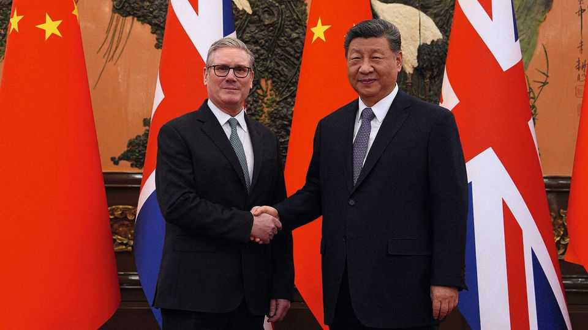
习近平主席表示，英国和中国应超越分歧、相互尊重。■
§002 Business：本周商业原题：Business：本周商业 · 板块：The world this week · 栏目：本周
关于美国和日本考虑采取一项高度不寻常的协调干预措施以支撑疲软日元的猜测，导致日元大幅上涨。美国官员担忧近期日本债券市场动荡正波及美国长期债券的收益率。美元走低，唐纳德·特朗普重申自己并不担心美元贬值。“美元表现很好，”美国总统表示，尽管美元对一揽子货币汇率跌至四年低位。财政部部长否认美国正在干预市场后，美元有所反弹。■
股市投资者对美元的关注度不高，他们推动标普500指数短暂突破7000点大关（此前该指数于2024年11月首次突破6000点）。金价首次突破5000美元/金衡盎司大关，达到5500美元上方，距离上次突破4000美元仅三个月。在国际紧张局势加剧的背景下，投资者纷纷寻求避险资产。瑞士法郎作为避险货币的声誉使其兑美元汇率升至逾十年最强水平。印尼主要股市因市场猜测MSCI（摩根士丹利资本国际公司）可能将其从新兴市场下调至前沿市场而遭遇自1997-98年亚洲金融危机以来最严重的两日下跌。MSCI已对印尼金融市场的透明度表示担忧。■
印尼盾近期因总统任命其侄子担任央行董事会成员而跌至新低。美联储在最新会议上维持利率不变，此前已连续三次在去年年末降息。美联储将经济前景评估从“温和”上调至“强劲”，这意味着短期内降息可能性较低。这将让特朗普不满，他一直指责美联储降息不够迅速。特斯拉做出重大战略调整，宣布将停产Model S和Model X车型，转而加大机器人生产力度，同时报告其首次出现年度营收下滑。公司还计划向埃隆·马斯克的AI项目xAI投资20亿美元。特斯拉仍计划于4月推出Roadster跑车。■
尽管有诸多预测称电动汽车需求将放缓，但去年欧盟新纯电动车销量（按注册量计算）达到总汽车市场的17.4%，而汽油和柴油车市场份额骤降至35.5%。据欧洲汽车制造商协会（ACEA）统计，混合动力车型占据34.5%的市场份额。尽管特斯拉在欧洲的销量大幅下滑，但比亚迪等更便宜车型填补了市场空白。德国纯电动车销量同比上涨43%。英国纯电动车占新车销量的23.4%，汽油车占26.2%，混合动力车占36.9%。波音公司第四季度营收239亿美元，为自2018年以来的最高水平——更多证据表明该公司正逐步摆脱安全事故、生产问题和工人罢工的影响。■
它甚至报告了季度净利，这是三年来的首次，但这是因为出售了数字航空业务。若不考虑这笔收入，其仍将录得亏损。Meta报告了创纪录的季度营收，并称其在人工智能领域的资本支出将今年翻倍。这似乎令投资者感到满意，尽管微软财报显示数据中心支出激增，令投资者再度担忧。生产高端芯片所需光刻设备的荷兰企业ASML报告了强劲的季度营收，并预计今年销售或增长19%。第四季度净订单量较上一季度翻倍。该公司股价自年初以来已上涨逾30%。
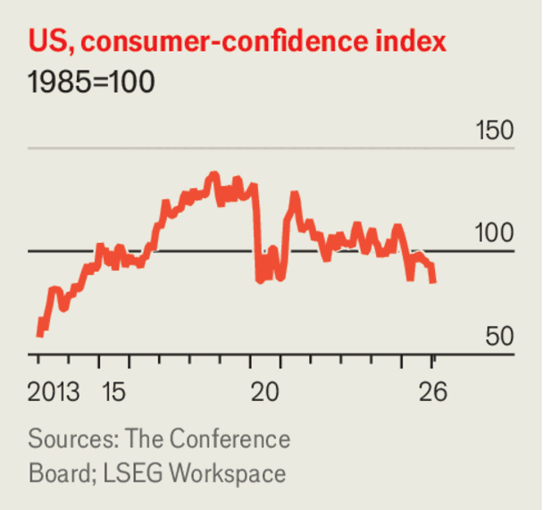
美国消费者信心基准调查在1月骤降至12年来最低水平。会议委员会（Conference Board）指数的主要组成部分均出现下滑，甚至超越了疫情时期的低点。消费者提及的主要担忧包括物价与通胀、政治、战争、关税与贸易以及劳动力市场。亚马逊宣布将再裁员16,000人，继去年的裁员之后。该公司表示，人工智能的广泛应用意味着许多常规岗位将被削减。亚马逊还决定关闭其亚马逊生鲜（Amazon Fresh）和亚马逊Go实体店，并将部分门店转为Whole Foods超市（亚马逊于2017年收购）。亚马逊生鲜仍将提供在线服务，公司正扩大当日达生鲜配送服务的覆盖范围。■
与此同时，联合包裹服务公司（UPS）将再裁减3万个岗位，继去年裁员2万个后。此次裁员正值UPS将为亚马逊处理的包裹量减半之际。据媒体报道，马斯克旗下的火箭公司SpaceX计划于6月启动其重磅首次公开募股（IPO），若成功，其融资规模或达500亿美元，将远超此前全球最大IPO纪录（沙特阿美公司（Saudi Aramco）于2019年以290亿美元创下）。不过，一些分析师认为该公司可能没有足够时间在6月提交IPO申请，尽管马斯克显然对这个月份情有独钟，因为木星、金星和水星将在天空中形成罕见的天体排列。■
§003 领导人原题：ICE’s impunity is a formula for more violence · 板块：Leaders · 栏目：领导人
移民官员枪杀亚历克斯·普雷蒂（Alex Pretti）后，特朗普政府又污蔑一位见义勇为者为潜在的群体性杀人犯，美国正陷入社会动荡。幸运的是，抗议者表现出克制。公众舆论已转向反对ICE——这个涵盖美国遣返机器的统称品牌。
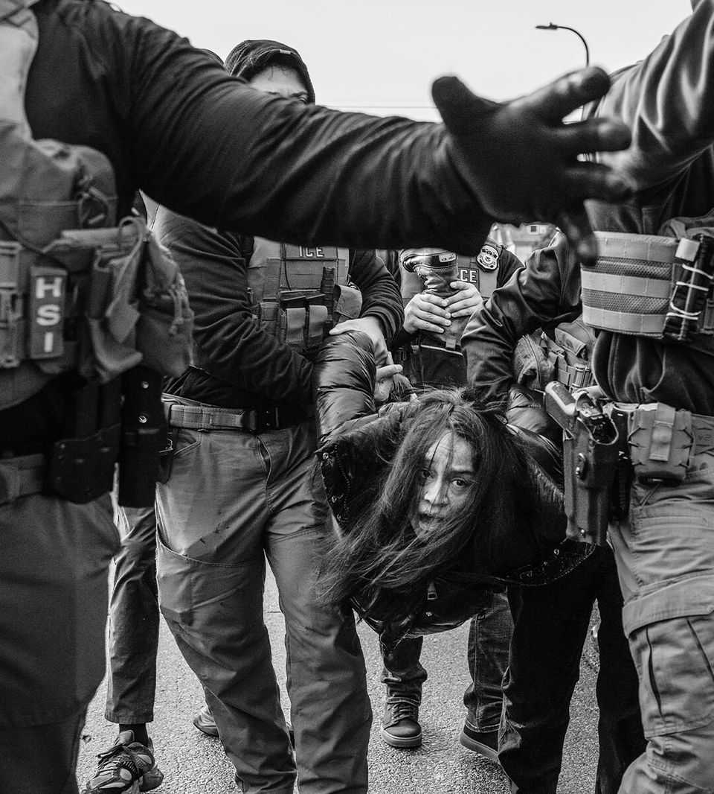
就连一些保守派人士也开始心生疑虑。唐纳德·特朗普意识到，移民问题曾是他最有力的议题之一，如今却成了他的负担。1月26日，总统试图缓解紧张局势，包括将明尼阿波利斯的行动交由新管理层接管。然而，ICE（移民与海关执法局）与当地民众的对峙仍持续进行。特朗普并未放弃动用准军事力量强制执行的权力。美国人应保持警惕。ICE有理由出现在美国城市。特朗普拥有驱逐非法移民的授权。在大幅遏制南部边境非法入境后，他声称正在寻求“最危险的罪犯”。但事实并非如此。最近被拘留者中，仅5%的人被判定犯有暴力犯罪。■
ICE的残酷手段所指向的目标，远比单纯的移民管控更为黑暗，原因有三。其一，政府似乎认为ICE应拥有独立执法权。在急于完成配额并践行其“摧毁洪流”的强硬文化时，ICE执法人员沉迷于肆意使用武力。尽管官员们已向执法人员保证其享有“绝对豁免权”，但法官抱怨称，他们却公然违抗法院命令。他们迅速将普雷蒂先生及此前遭枪击的女性瑞妮·古德定性为恐怖分子，并竭力确保对这些枪击案的调查完全掌控在自身手中。法外逍遥终将助长更多暴力。另一令人担忧的原因是，ICE及其领导层正践踏宪法。■
坚持将证人和抗议者视为罪犯，实际上是在剥夺人们根据第一修正案享有的言论自由和集会权利。在明尼苏达州这样的州，当联邦调查局（FBI）局长表示人们不能携带枪支参加抗议活动时，实际上是在剥夺他们根据第二修正案享有的持枪权。当移民与海关执法局（ICE）特工无端拦截或逮捕民众，并在未获得法院搜查令的情况下搜查其住所时，实际上是在剥夺他们根据第四修正案享有的隐私权。最后，将移民与海关执法局（ICE）部署到明尼苏达州首府明尼阿波利斯——一个非法移民相对较少的城市——似乎服务于一个令人不安的广泛议程：吸引公众关注当地卷入福利丑闻的族群中的索马里人；惩罚那些限制向ICE提供协助的“庇护城市”；或可能只是进行一场政治表演，以恐吓民众并遏制各类移民涌入美国。
特朗普也可能试图通过将民主党执政的城市描绘成治安混乱、暴力极端左翼分子庇护的灾难区，来提升共和党的支持率。最令人不安的可能性是，总统正在组建一支只效忠于自己的民兵组织。正如我们简报所解释的，从得克萨斯骑警到格罗弗·克利夫兰在19世纪90年代动用军队和治安官，美国人曾多次担忧国家暴力的不可问责使用。在国外，从萨尔瓦多到菲律宾，觊觎独裁者往往以维持秩序为名，将军队和警察对准本国人民。特朗普的支持者会认为这一论点被夸大其词。美国建国初期就建立了制约总统权力的机制。公民有权持枪，各州设有国民警卫队以平衡军队力量。■
《叛乱法》规定了总统在极少数情况下可以合法动用军队控制骚乱的情形。法院和国会可介入干预。但ICE（美国移民与海关执法局）却能巧妙规避这些保护措施。非法移民散布在美国各地，特朗普声称民主党利用他们作为选民。因此，执法官几乎可以在任何地方，包括选举期间，肆无忌惮地制造挑衅事件。当抗议最终演变为暴力冲突时，这在政治上具有正当性，并成为进一步部署的借口。当政客抱怨ICE时，如明尼苏达州州长和明尼阿波利斯市市长，司法部可对他们以妨碍联邦官员为由展开调查。特朗普第二任期的一个主题是总统权力的不断积累。■
即便第47任总统不会将联邦特工用作万能的强制工具，第48任或第49任总统或许会这么做——共和党人应记住，他们可能成为民主党人。如果特朗普对ICE没有反民主的图谋，他应乐于限制其行动。这并不困难。总统应兑现其承诺，即对格德女士和普雷蒂先生遇害事件的调查将“公正且诚实”。作为重建公众信任漫长道路上的第一步，ICE特工应接受更专业的培训，停止佩戴面罩，改用身体摄像头和身份编号。遣返配额导致残酷手段，必须终结。国土安全部部长克里斯蒂·诺姆公然撒谎。她应被解职。即便本周之后，这仍无法消除总统民兵的阴影。■
因此，法院必须明确以下三点：各州有权起诉犯下罪行的联邦官员；美国移民与海关执法局（ICE）对宪法的理解有误；联邦政府不能凌驾于各州之上。同时，国会也需追究政府的行政责任。鉴于本文发表时，一项早期测试已展开，即除非特朗普同意改革ICE，否则暂停向国土安全部拨款。本周，美国人意识到了一个严重的威胁。但仅凭舆论调查无法捍卫一个共和国。美国制度的守护者应将特朗普语气的转变视为推动变革的契机，而非放松警惕的信号。■ 仅限订阅者：欲了解我们如何设计每周封面，请订阅我们的每周封面故事新闻简报。
§004 领导人原题：Xi Jinping’s purge should worry the world · 板块：Leaders · 栏目：领导人
“在充满不确定性的世界中，中国是最确定的因素。”一位中国发言人于12月如此宣称。在欧洲战火、中东动荡以及美国重塑地缘政治格局的背景下，西方部分人士或许会对此表示认同。《经济学人》付印时，英国首相基尔·斯塔默爵士正前往北京会见习近平主席，这是继一系列西方领导人赴京寻求合作与稳定后的新一次访问。然而近几日，中国政局却证明一切并不确定。 ■
1月24日，中国国防部宣布，最高军衔官员张又侠及另一位高级将领刘振立因违反纪律正接受调查。自1971年以来，中国军队高层首次出现如此大规模的清洗行动。1971年，毛泽东接班人、国防部长林彪在疑似政变企图后坠机身亡。此次针对200万兵力的中国人民解放军（PLA）高层的清洗，伴随着对党内成员和官员的大幅惩处行动。尽管中国政治是个黑箱，但迹象表明，这体现了习近平对中共的全面掌控。外界关注的焦点是，此次清洗对中方发动台海入侵的准备意味着什么。■
2025年中国当局对超过100万人涉嫌腐败和异端政治活动展开调查，比两年前增加了60%，创下自2012年习近平掌权以来的最高纪录。这些清洗行动并非源于权力斗争，而是源于中国共产党自我约束的机制。在不受法律约束且缺乏自由媒体监督的情况下，党只能依靠内部警察来约束干部，确保其行为端正。10月，当高级官员在北京开会时，中央委员会205名专职委员中，有37人失联，据信正在接受调查。然而，这场清洗也波及基层，令党内成员感到恐惧，迫使不信任的干部进入紧密的个人网络寻求安全感，同时瘫痪了部分支持改革的官员。对中国人民解放军的影响尤为显著。■
军队的报纸含糊地将两位将军的倒台与反腐斗争联系起来，但实质上却指责他们对习近平主席的不服从。文章称这两位军官的影响力“极其恶劣”，导致“对解放军政治生态以及战斗力建设造成巨大损害”。若将军们的倒台能对解放军产生如此影响，或许西方应感到欣慰。中国军力正持续增长，海军规模已超过美国。美国国防部估计，中国计划到2035年再增加六艘航母，届时将拥有九艘，与美国的十一艘相比仍显不足。中国核武库预计到2030年将拥有至少1000枚弹头，部署在导弹、潜艇和飞机上——虽少于美俄，但比2023年的存量翻倍。事实上，这场清洗的影响更为复杂。■
美国国防部12月的一份报告指出，短期内习近平主席的整军行动可能削弱中国人民解放军的作战效能，但长期来看，清理军队内部问题或将提升其战斗力。然而，更严峻的风险是美国国防部未提及的——即在发生军事危机（尤其是台海冲突）时，能够为习近平主席提供建议的智囊团队正在被削弱。美国官员认为，中国国家主席已下令解放军在2027年前具备攻占台湾的能力。一些人则怀疑，台湾若无外部援助，难以长期抵御外敌。尽管美国向台湾提供军援，包括12月达成的创纪录111亿美元军售协议，但这些援助可能无法有效抵御入侵——因为没有条约要求美国必须这么做。■
对大陆军事实力的担忧正促使一些台湾政界人士思考，是否值得投入资金加强岛上的防御。中国周边海域局势紧张，该国在东海与中国争夺岛屿，与日本存在领土争议；在南海，多国与中国争夺海域主权。台湾海峡一直是潜在冲突的焦点。中国在该地区日益频繁地展示武力。美国战机与军舰在此水域巡逻，其他西方国家有时也会加入。西方官员指责中国军队故意在巡逻区域附近冒险行动。若发生意外，冷静的军事指挥官将至关重要，以避免局势升级。他该向谁求助？一位可能人选是张将军。他是中国高级将领中罕见的例外，曾亲历与越南作战的惨烈经历。■
西方分析人士认为他可能能够抗衡习近平。两人之间的家族关系可追溯至中共夺取政权前的地下时期。如今随着他与刘鹤的离开，中央军委——中国人民解放军的最高指挥机构——已显薄弱。自2022年以来，中国国家主席已解除了六名现役军官中的五人。目前仅剩两人：习近平本人担任主席，以及一位负责反腐败的政委，后者缺乏军事作战经验。设想习近平任命唯命是从的人填补空缺，这些新任顾问是否愿意告诉他，即便拥有全新装备，若发动对台入侵，中国仍将面临巨大风险？毋庸置疑，习近平本人也深知潜在代价。他必然研究过俄罗斯在乌克兰的灾难性行动。
他听到了西方领导人对台湾发动攻击将损害中国经济的警告。然而，尽管中国政治充满变数，但分析人士普遍认为，72岁的习近平主席将在明年党内会议上重申其意图延长任期，并强调在党内各层级对服从的重视。在充满不确定性的世界中，这种确定性反而令人倍感不安。■ 仅限订阅者：想了解我们如何设计每周封面，请订阅我们的《封面故事》周报。
§005 领导人原题：The weak yen and the weakening dollar are signs of financial fragility · 板块：Leaders · 栏目：领导人
数十年来，日本投资者一直在海外寻求更高收益的资产，而国内利率一直保持低位。结果，日本积累了超过10万亿美元的海外投资，超过其年度GDP的两倍。然而如今利率正在上升，其影响正波及市场。美国财政部长将日本债券市场动荡归咎于长期国债收益率的波动。在本月日元兑美元跌至1990年以来最弱水平后，日美政府据称正在考虑干预以支撑日元。■
货币干预只是分心之举。它无法降低源自日本的金融动荡风险。日本央行可能的干预措施自1月23日起推动日元走强，导致美元整体价值大幅下跌。1月27日，唐纳德·特朗普似乎对美元贬值表示欢迎，这将有助于缩小贸易逆差。美元的下跌是趋势延续。自特朗普上任以来，其关税政策、对美联储的抨击以及对债务的胃口，使投资者更倾向于对冲美国市场的风险敞口。2025年美元在贸易加权基准下贬值7%。日元对持续走弱的美元保持弱势，这一现象尤为显著。更令人惊讶的是，同期日本低利率与美国高利率之间的差距缩小了近三分之一。■
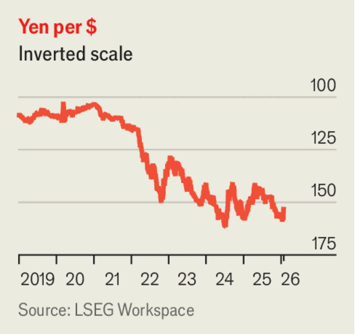
汇率趋同通常会使货币汇率趋于一致。部分原因在于日本的通胀率在2020年代升至年均2%，而2010年代仅为0.6%。异常的是，日本的通胀率近期已超过其贸易伙伴国。高通胀通常会削弱货币，因为汇率会调整以反映其购买力的下降。但不要因树木而忽视森林。若日元价值能反映日本物价水平，其汇率将远强于目前。根据我们编制的巨无霸指数（Big Mac index），该货币相较日本物价被低估约50%。这使得日元疲软可能源于投资者对日本财政与货币信誉丧失风险的担忧。■
通货膨胀通过提升名义GDP和税收收入，近期帮助日本债务和赤字占经济总量的比例缩小。然而，日本净债务占GDP比重仍高于所有其他发达国家，达到130%；30年期国债收益率本月创下历史最高水平。首相高市早苗（Takaichi Sanae）于2月8日宣布提前举行大选，并承诺实施不合时宜的财政宽松政策。她承诺在合理增加国防开支的同时，暂停食品消费税两年。尽管日本仍有提升税收的空间，但高市早苗并未提出相应的资金筹措计划。日本至少拥有大量外汇资产，可出售以支撑日元。但购买日元无助于降低危机风险，且对汇率的影响恐怕也难以持久。■
那些设定利率并允许资本自由跨境流动的国家，无法同时控制汇率。日本应将日元视为经济健康状况、政府公信力以及利率走势的指标，而非政策目标。至于美国，若政府干预外汇市场以试图管理汇率，特朗普的经济政策将被恰当地视为更加混乱且判断失误。当美元需求下降时，美国政府、企业和个人将面临更高的资本成本。这也是为何政府传统上倾向于维持强势美元。因对贸易逆差的无根据担忧而放弃这一政策将是错误的。■
《经济学人》的订阅者可注册我们的Opinion通讯，该通讯汇集了我们最优秀的领导文章、专栏、客座文章和读者来信。■
§006 领导人原题：Haters on the right and left are wrong about London · 板块：Leaders · 栏目：领导人
左右翼都热衷于贬低伦敦。MAGA群体（MAGA）将其描绘为被挥舞着砍刀的青年占据。特朗普总统称该市存在“无法控制”的区域，部分区域受伊斯兰法约束。英国主要民粹右翼政党领导人奈杰尔·法拉奇（Nigel Farage）声称“犯罪失控”且城市“处于崩溃状态”。左翼的攻击则想象出截然不同的城市。他们不认为这是觉醒者眼中的地狱，而是被贪婪资本家榨干的贫民窟。英国执政工党成员抱怨伦敦长期以牺牲全国其他地区为代价繁荣发展。
■
英国首相基尔·斯塔默爵士（Sir Keir Starmer）去年在党代会演讲中仅提及此事一次，用以呼吁在其他领域加大投资。这种言论颇具吸引力：《经济学人》的一项民调显示，仅17%的英国人认为伦敦更富裕对英国整体有利。这两种观点均不准确。伦敦是全球最安全的大都市之一，暴力犯罪率已连续多年下降，凶杀率降至自可比记录开始以来的最低水平。美国主要城市中，迈阿密居民被杀的概率几乎是伦敦的六倍。而伦敦并非繁荣发展，自金融危机和脱欧以来，该市一直挣扎。其人均产出在实际价值上仍低于2008年水平。这对英国造成伤害。2007-2019年间，伦敦损失的生产率增长占全国整体放缓的42%。■
伦敦与英国其他地区之间并非如某些人所认为的零和博弈关系。当伦敦发展时，它通过缴纳税收为其他地区提供补贴，并为区域企业创造市场需求。它是英国经济的支柱，贡献了全国产出的四分之一。其真正的竞争对手并非曼彻斯特和利兹，而是纽约和东京。工党应当珍视英国最宝贵的资产，而非忽视它。尽管存在诸多问题，伦敦仍具有独特价值。它仍是全球第二大金融中心（仅次于纽约），并拥有欧洲最多独角兽企业（估值超10亿美元的初创公司）。全球前十大学中有四所位于其辐射范围内。最重要的是，全球最优秀的人才仍源源不断涌入首都。伦敦的未来乃至英国的未来，都取决于它能否持续保持这种吸引力。■
像迪拜这样的地方发出的诱惑声愈发诱人，低税率和更便宜的住房是其吸引力所在。然而，米兰和新加坡为外籍人士铺开红毯，英国工党却拉起了吊桥。政府不应通过向非永久居民征收额外税款来榨取资源，而应将人才争夺战置于增长战略的核心。该怎么做？第一步是打破英国自我毁灭式的移民规则。特朗普对技术移民的限制反而创造了机遇。《经济学人》的“自由流动指数”显示，不满的美国毕业生更愿意前往英伦三岛而非其他任何地方。然而工党计划缩短研究生签证有效期，并将默认获得永久居留权的时间延长至十年。■
英国政府应取消高昂的签证费用和相关收费（可达10,000英镑或13,800美元），为外国公民提供更便捷的入籍途径，并明确表态——脱欧公投十年后，仍欢迎聪明的外国人才。另一大障碍是住房问题。在伦敦，租住公寓所占收入比例高于巴黎或东京。所谓“可负担住房”政策抑制了开发，工党应大幅简化建设流程。最后，伦敦亟需更新陈旧的基础设施。东西向铁路（Crossrail）项目的成功，凸显了新建交通线路的迫切需求。伦敦无需中央政府的大额拨款建设交通网络，而是需要将更大的借贷和增税权力下放给市长。■
为让伦敦重现增长活力，政府应将通勤城镇更紧密地融入伦敦经济，整合交通网络并放宽限制建设的绿带规则。伦敦的版图可以扩张——其经济也将随之增长。19世纪提供了借鉴。当时，伦敦与英国共同繁荣。工业革命期间，北方各地工厂林立，其成功得益于首都贸易、金融和服务业的蓬勃发展。振兴伦敦也将惠及全球。真正具有全球影响力的枢纽城市是人类进步的推动者，是思想、资本与人才交汇融合、不断增值的场所。随着美国筑起壁垒、中国城市难以进入，这类城市愈发稀有。工党应向伦敦示好。■
《经济学人》的订阅者可注册我们的Opinion新闻通讯，汇集我们最优质的社论、专栏、客座文章及读者来信。■
§007 领导人原题：Africa’s two biggest economies may be turning the corner · 板块：Leaders · 栏目：领导人
尼日利亚和南非是撒哈拉以南非洲地区最大的两个经济体，贡献了该地区近三分之一的GDP。令人遗憾的是，过去十年两国经济均出现倒退。目前，南非和尼日利亚的普通民众生活水平反而低于2015年。由于两国本应成为各自区域的经济引擎，其低迷表现拖累了整个非洲大陆的发展进程。因此，非洲沉睡巨人似乎正在苏醒的消息令人振奋。■
南非通过审慎政策将通胀率降至2025年的3.2%，这是过去21年来的最低水平，由此获得逾16年来首次主权债务评级上调。改革举措使南非电力公司等国营企业逐步引入市场机制，吸引私人资本参与能源项目。与此同时，尼日利亚已取消令投资者困惑的多重官方汇率制度，允许奈拉汇率主要由市场机制决定。该国还终结了导致财政赤字和环境污染的燃油补贴。尼日拉三角地区安全状况改善及定向激励措施已开始提振石油产量。若南非和尼日利亚的经济复苏态势持续，将增强外界对非洲整体经济前景的乐观预期。■
过去二十年，非洲增长最快的地区是规模较小的经济体，如卢旺达、象牙海岸、埃塞俄比亚和坦桑尼亚。如果最大经济体增速加快，同时矿产需求持续旺盛——推动刚果、几内亚和赞比亚等国产量提升——非洲GDP超越亚洲的可能性或将持续多年，正如国际货币基金组织预测的2026年情形。但眼下仍不宜过度乐观。更积极的态势尚未转化为显著增长。要实现这一目标，非洲两大经济体都需加倍推进改革。南非改革派但进展缓慢的总统祖马设立的“沃林德拉行动”特别工作组，必须在电力领域取得成功的基础上，推动其他经济领域改革，尤其是货运物流和供水体系。
企业虽未遭遇频繁停电而感到欣慰，但其他问题仍令人担忧。打击有组织犯罪仍需付出更多努力。法律通过削弱财产权或要求企业达成种族配额来抑制投资。对伊朗和俄罗斯等流氓政权的纵容，可能损害国家形象。尼日利亚面临的挑战更为严峻，必须削减浪费性支出以腾出更多资源用于教育和基建。旨在增加急需收入的新税制因执法不均和总统干预而受阻。经济多元化程度不足，过度依赖油气资源的问题仍未得到足够重视。政商勾结的寡头集团轻易扼杀竞争。更快的经济增长将使其他问题更容易解决。南非失业率高达32%，是全球最高之一。■
尼日利亚是全球唯一拥有超过亿人每天收入不足3美元的国家，已落后于印度。当前的温和政治局面可能难以持久。尼日利亚将在2027年举行大选，这可能诱使政府提供短期福利。南非联合政府也将在那一年面临考验，因为拉马福萨先生很可能被替换为非洲人国民大会（African National Congress）领导人，而接任者可能更不被信任且改革意愿更低。若联合政府瓦解，那些在前任总统任内破坏南非的腐败民粹主义者正渴望再次获得权力。因此，在这两个国家，紧迫感至关重要。非洲的沉睡巨人已开始苏醒，现在不是按 snooze 键的时候。■
《经济学人》订阅者可订阅我们的观点电子简报，该简报汇集了我们精选的社论、专栏文章、特稿及读者来信。■
§008 领导人原题：Stop panicking about AI. Start preparing · 板块：Leaders · 栏目：领导人
解决复杂的数学难题、诊断复杂的医学病症、在瞬间生成全新软件：生成式AI的成就每天都在令人惊叹。但对其社会影响的担忧也在加剧。国际货币基金组织（IMF）总裁克里斯塔琳娜·格奥尔基耶娃（Kristalina Georgieva）警告称，将出现一场“失业海啸”。英国人工智能先驱德米斯·哈萨比斯（Sir Demis Hassabis）表示，他支持放缓创新步伐，以让社会适应。摩根大通CEO杰米·迪蒙（Jamie Dimon）称，政府应禁止裁员，如果这“能拯救社会”。局势似乎已为剧烈动荡铺平道路。显然，AI的发展轨迹仍充满不确定性。 ■
然而，《Boss Class》播客最新一期内容显示，社会比这些权威人士所暗示的更具适应空间。新技术从前沿领域扩散到办公隔间需要时间。企业与政府应利用这段缓冲期，帮助最可能被取代的群体。目前劳动力市场似乎未受明显冲击。生成式人工智能最易影响服务类岗位，但自ChatGPT推出以来，美国白领岗位数量已增加3m，而蓝领岗位则保持稳定。即便在积极采用该技术的领域，如编程，就业人数也持续上升。经济影响为何迟迟未显现？部分原因在于该技术的“锯齿状边界”：它擅长某些任务，却可能自信地输出无意义内容，或难以统计“strawberry”中“r”的数量。■
这种不可预测性意味着企业与员工需要投入时间，明确AI的应用方向。此外，业务流程不会一夜之间发生改变。电力最早在1880年代实现商业化应用，但直到40至50年后才在工厂车间产生显著的生产率提升。工厂需要重新设计，工作流程也需重新规划。此次同样如此，企业必须思考如何鼓励员工使用AI，如何缓解其带来的问题，并确保其成功应用。这种阻力对担忧技术变革速度的人而言或许是好消息。在全球范围内要求开发者暂停研发，而在此时取得领先优势可能带来巨大的商业与地缘政治回报，这显然是不现实的。但从发明到技术扩散之间存在宝贵的时间差，这一阶段可用于识别最易受该技术影响的群体，并制定相应的帮助方案。■
许多工作需要难以被自动化的技能，例如判断力或同理心。人工智能工具可以使这些岗位更具生产力、更有吸引力，甚至更加愉快：想象一位医生摆脱了繁琐文书工作。新技术往往创造新岗位；目前已有大量新兴白领岗位出现，这些岗位在统计中尚无明确分类。然而，某些岗位也明显面临被自动化取代的风险。大量后台工作涉及简单任务和按脚本操作。初级职位的年轻人常被要求处理数据或总结报告——正是人工智能擅长的领域。帮助这些群体找到新工作至关重要，不仅因为对个人的影响，更因为过去全球化和自动化导致工厂岗位流失，助推了民粹主义的兴起。任何政府都不希望面对青年群体的反抗。■
抵制浪潮将无疑阻碍AI带来的经济收益。该如何应对？至少这次受到冲击的群体可能分布更广：与工厂或矿业工作不同，后台及初级岗位并不集中于特定工业城镇。因此，新机会应更容易找到。但政府也必须保持劳动力市场灵活性，而非如杰米·戴蒙所建议的禁止裁员。教育体系需彻底改革，以教授AI技术及与之互补的技能。企业同样必须做好准备。要实现繁荣，他们不仅需要充分利用AI，还需找到并培养能与之协作的顶尖人才。部分后台员工将失去工作，但那些拥有业务隐性知识的员工或可接受新岗位培训。最大的错误是完全停止招聘年轻人。■
这不仅会阻断未来人才的输送渠道，还会让企业失去原生的AI人才。相反，企业应重新思考为年轻人提供的工作类型——减少重复性劳动，增加判断与分析；加快在企业内部轮岗，使他们获得AI无法掌握的洞察力；试点新岗位，尝试新方法。颠覆和岗位流失是不可避免的。这正是技术进步的本性。但尽管AI已展现诸多能力，仍有时间减轻冲击。不应浪费这个机会。■ 订阅者可注册The Economist的Opinion newsletter，汇集了我们最佳的社论、专栏、客座文章和读者来信。
§009 简报原题：Immigration agents have become Donald Trump’s personal posse · 板块：Briefing · 栏目：简报
联邦政府对明尼阿波利斯的攻势仍在持续，但过去数日，特朗普以震慑手段驱逐非法移民的竞选行动似乎正遭遇反扑。对蕾妮·古德（Renee Good）及亚历克斯·普雷蒂（Alex Pretti）两名美国公民遭移民与海关执法局（ICE）暴力执法致死事件的广泛愤怒，已使政府陷入被动。
1月27日，明尼苏达州民主党众议员伊尔汗·奥马尔（Ilhan Omar）遭到袭击，进一步巩固了人们认为该市局势正危险失控的观念。特朗普对此感到足够担忧，已派遣其边境事务负责人汤姆·霍曼负责处理约3000名特工，这些特工已涌入明尼苏达州最大城市，搜寻无证移民。负责此类流动行动的边境巡逻队负责人格雷戈里·博维诺（Gregory Bovino）被调离至加州家中。特朗普在1月27日对福克斯新闻表示：“博维诺非常优秀，但他是那种比较激进的人。在某些情况下这或许是好事，但这里可能不太合适。”总统还致电明尼苏达州民主党州长蒂姆·沃尔兹（Tim Walz），后者正被司法部调查涉嫌共谋阻碍该州移民执法。■
政府对枪击事件的态度也发生了转变。在两起枪击案的细节尚未明确（许多细节仍模糊不清）之前，官员们在缺乏证据的情况下便指控戈德女士是“恐怖分子”，普雷蒂先生意图“屠杀执法部门”。如今特朗普则为死亡表示哀悼：“他们两个都很可怕……太令人痛心了。”他告诉福克斯电视台。令人遗憾的是，戈德女士和普雷蒂先生并非首位被涌入民主党城市的移民官员杀害的平民。但他们的死亡过程被视频记录下来，转瞬之间便在全球传播。超过半数的美国人表示曾观看过致命枪击的视频片段。他们得出的结论在很大程度上取决于自身的政治立场。■
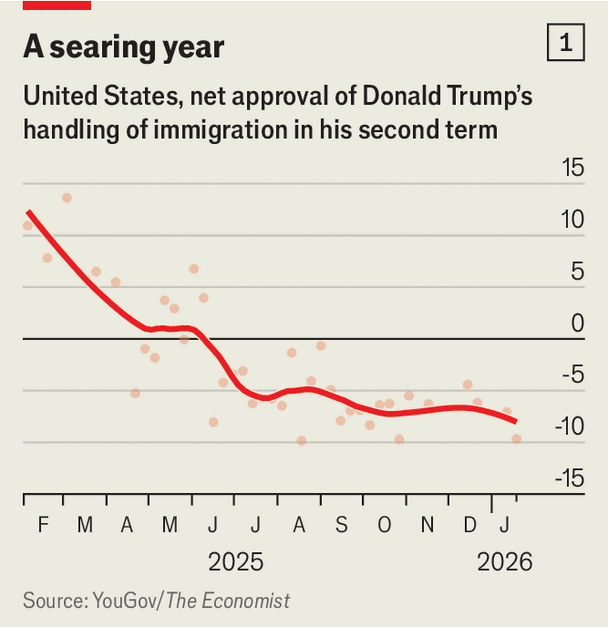
例如，仅有3%的民主党人认为戈德女士（Ms Good）即将撞上射杀她的移民与海关执法局（ICE）特工，而这一说法是国土安全部（DHS）提出的，相比之下有53%的共和党人持此观点。但对特朗普大规模驱逐行动的不满情绪正持续上升。其处理移民事务的净支持率去年跌至负值，恰逢国土安全部（DHS）——该机构监管ICE与边境巡逻队（Border Patrol）——在洛杉矶加大突袭行动力度之时。这一趋势仍在持续（见图表1）。对于一位在11年间经历三次总统竞选、两届任期、始终将移民问题作为标志性议题的总统而言，这种政策转向无疑令人担忧。特朗普承诺将“缓和局势”，但迅速否认自己在后退。
过去一年中，他不仅指示移民机构采取更加强硬的手段，还彻底重塑了这些机构，通过大幅增加资金，从而扩大了机构规模和能力。美国移民与海关执法局（ICE）和边境巡逻队（Border Patrol）如今已演变为效忠总统、似乎可以肆意行事的准军事组织。明尼阿波利斯发生的枪击事件揭示了这种演变的速度及其致命后果。现在的问题是，特朗普会将这场准军事化实验推进多远，毕竟这对公共秩序和他本人的声望都存在明显风险。ICE和边境巡逻队最初是在2001年9月11日恐怖袭击事件后被划归新成立的国土安全部（DHS）管辖的。■
边境巡逻局是规模更大的机构：直到2022年，其执法人员数量仍约为移民与海关执法局（ICE）的三倍，而后者的主要职责之一是追捕已离开边境附近区域的非法移民。然而，数千名执法人员根本无法捕捉数百万名在美国生活的无证移民。相反，顺应时代潮流，ICE将重点转向公共安全：搜捕并遣返外国罪犯。即便如此，ICE仍是政治上的敏感话题。当奥巴马（奥巴马是特朗普的民主党前任）执政期间加大遣返力度时，一些左翼城市出台了“庇护”政策，限制与联邦移民执法合作。这些政策在特朗普第一任期期间迅速蔓延。■
进步派希望"废除移民与海关执法局（ICE）"，而是否解散或重组该机构在2020年民主党总统候选人中成为重要分水岭。"即便在平静理性时期，这种政治化也使你注定会遭到全国一半人口的憎恨，"一位前国土安全部官员表示。特朗普下令由博维诺领导的边境巡逻队协助ICE开展驱逐行动，加剧了争议。这些执法人员受训在沙漠和山脉中追捕走私者，而非维护抗议者的公民权利。他们拥有比普通警察更大的权限，可在国际边境100英里范围内拦截并盘问人员，而明尼阿波利斯并不在这一范围内。该机构最精锐的BORTAC特遣队则类似军事特种部队。■
普雷蒂先生的凶手之一是边境巡逻队特工。特朗普政府将这些机构收归己有，并大幅强化其职能。7月通过的《一项大而美丽的法案》（One Big Beautiful Bill Act）为移民执法拨款1700亿美元——超过多数国家军费开支。美国移民与海关执法局（ICE）过去一年规模已扩大超过一倍，新增12000名遣返官员，仍在持续扩张，以签约奖金和助学贷款偿还援助吸引新招募者。美国国土安全部（DHS）似乎有意雇佣政治派系人士。例如，ICE和边境巡逻队均在12月的美国右翼大会“美国节”（AmericaFest）上开展招募。ICE的招募网站称：“美国已被罪犯和掠夺者入侵。我们需要你将他们驱逐出境。” ■
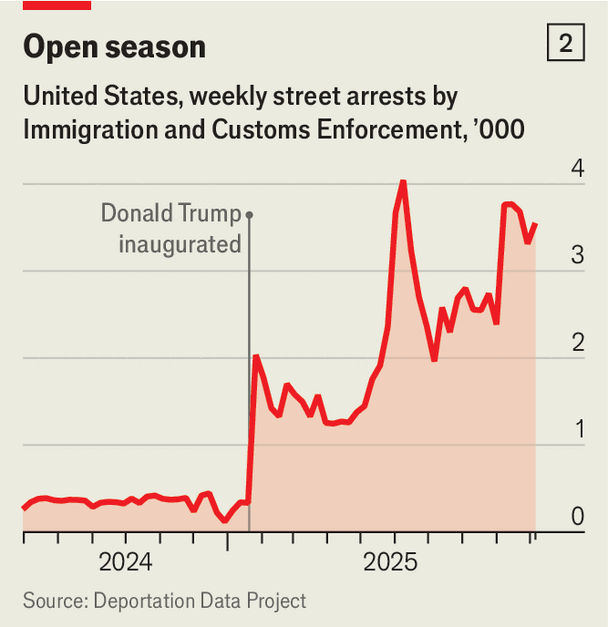
无需本科学历。美国移民和海关执法局（ICE）在社交媒体上的招聘帖中包含一些隐晦暗示，例如“哪边是美国男人？”（暗指白人至上主义书籍）和“摧毁洪流”（源自一款关于入侵性寄生外星生物的视频游戏口号）。新招募者仅用42天便仓促完成培训。据前ICE官员透露，许多新兵曾是警察或退伍军人，但也有部分人此前从未持枪。相比之下，犯罪学家亚历克斯·德尔·卡门（Alex del Carmen）指出，地方警察要成为实战准备就绪的街头精英，可能需要长达一年时间。在某种程度上，这些新手的部署正在奏效。■
遣返数据项目分析的政府数据显示，特朗普任期前九个月，因美国移民与海关执法局（ICE）逮捕而被遣返的人数每周激增超过四倍，达到每周6000人。“街头逮捕”（即执法官员在街头直接拘捕非法移民）数量激增（见图表2）。然而，戈德女士和普雷蒂先生的遇害事件表明，执法官员正在使用过度武力。去年至少有32人在ICE羁押期间死亡，这是自2004年以来的最高纪录。1月发布的尸检报告显示，被关押在德克萨斯州布利斯堡（Fort Bliss）的古巴移民杰拉多·卢纳斯·卡姆波斯（Geraldo Lunas Campos）死于狱警之手。ICE此前曾称其为自杀。尽管部署了未经充分培训的执法人员，美国国土安全部（DHS）却削弱了内部监督机构。朱莉·普拉夫西克（Julie Plavsic）去年被迫退休，当时特朗普几乎彻底裁撤了部门的民权与自由办公室（Office for Civil Rights and Civil Liberties）。■
她描述了前员工们在Good女士和Pretti先生遇害后所感受到的“恐惧、耻辱与难以置信”。她补充道：“这一切都是前所未有的。”事实上，美国历史上长期存在一批边疆执法者，他们拥有大量自由裁量权且监管极少。1918年，由得克萨斯骑警领导的武装团伙屠杀了一名偏远村庄的15名无武装居民，随后却撒谎称受害者是在枪战中丧生。1894年，格罗弗·克利夫兰总统派遣军队和美国法警前往芝加哥镇压罢工的铁路工人，此举遭到伊利诺伊州州长的反对。军队的介入引发了城市骚乱，而法警们却缺乏应对能力：至少30人因此丧生。美国当局也曾动用私人民兵实施暴力镇压。■
19世纪末至20世纪初，政界人士目睹工业巨头雇佣平克顿侦探社以武力镇压罢工。近一个世纪以来，南方民主党人大多默许三K党对黑人公民实施恐吓与私刑。但这些组织远不及如今日益膨胀的移民执法机构庞大、装备精良且组织严密。美国移民与海关执法局（ICE）和边境巡逻队（Border Patrol）的扩张，也标志着美国政治的一大变化——总统在涉及国内执法事务上通常相对无能，警察受地方政客监管，军队在国内的部署亦受法律严格限制。■
确实，特朗普领导下的移民执法机构的爆炸性扩张，似乎只对特朗普负责，已引发激进批评者声称他正在组建一支准军事力量，以压制政治对手，甚至可能在11月中期选举中操纵选情。毕竟特朗普曾鼓动暴徒冲击国会，试图推翻他输掉的选举结果。今年，批评者认为他可能以移民试图非法投票为由，派遣威胁性的移民与边境执法局（ICE）人员驻守投票站，吓退支持民主党的少数族裔选民，让他们选择留在家中。确实，独裁者往往通过建立只效忠于自己的力量来巩固权力。这类力量通常具有几个共同特征。首先，为增强忠诚度，它们通常提供优厚薪酬。■
伊朗伊斯兰革命卫队直接向最高领袖汇报，其预算远超常规军队，军官们还经营着利润丰厚且具有强制性的商业帝国。其次，尽管常规军事力量理论上应保持政治中立（至少在民主国家），但非常规武装却可能高度意识形态化。印度的印度教民族主义准军事组织（通常携带木棍而非枪支）公开支持执政的印度人民党。第三，独裁者亲信的武装往往被允许突破法律。在委内瑞拉，绑架和折磨异见者、在投票站外向选民开枪恐吓属于非法行为，但由政权支持的摩托帮派“colectivos”却能肆无忌惮地实施这些行为而无需担心被捕。■
第四，支持非正规武力使用的领导人几乎总是声称这是为了保护公众。菲律宾总统杜特尔特（Rodrigo Duterte）正是凭借“在打击毒贩时可以‘忘记人权法’”的承诺赢得大选。他敦促警方将曼谷湾的犯罪尸体“填满鱼群”以重获街头安全。尽管美国与这些地方相距甚远，拥有更强大的制度保障，但ICE（美国移民与海关执法局）的行动中仍可见到相似影子，例如高达5万美元的入职奖金，以及副总统J.D.万斯（J.D. Vance）曾主张（后被弱化）的“ICE特工在执行职务时享有绝对豁免权”的说法。危机集团（Crisis Group）的伊万·布里斯科（Ivan Briscoe）指出，国家滑向准军事化存在三个预警信号。其中之一是政府开始将武装力量作为首选手段，而非最后手段。■
另一个警示信号是，内部纪律机制停止正常运作。最后的警示信号是，执法部门在追捕罪犯时将当地平民视为“敌方支持网络”，这或许是因为煽动性政客如此描述他们。同样，这份清单让人联想到明尼苏达州发生的事件。但警报者忽视了一个事实：并非州政府所有机构都听命于特朗普。法院最终可能遏制ICE最极端的越权行为。由于近期事件，地方政府可能更不愿意与联邦政府合作处理移民事务。国会民主党人威胁要让政府停摆，除非遏制ICE。明尼苏达人持续不断的和平抗议和公民不服从行动，如果有的话，反而因移民官员的暴力手段而更加高涨。■
然而，很难回避这样一个结论：无论结局如何，美国移民与海关执法局（ICE）对倾向民主党的城市如明尼阿波利斯的打压，更多是出于政治考量而非遏制非法移民。若其真正意图是最大化遣返人数，ICE应针对拥有大量无证移民的州和城市展开行动。但根据皮尤研究中心2023年最新估算数据，明尼苏达州非法移民数量仅约13万，位列全美50州第24位。缅因州则仅有约1万非法移民，而美国国土安全部（DHS）正在该州开展“每日捕获行动”（Operation Catch of the Day）。南卡罗来纳大学犯罪学教授杰弗里·阿尔珀特（Geoffrey Alpert）表示：“我们已从专业执法转向政治博弈。”关于ICE在追捕“最危险的非法移民”的说法也缺乏依据。■
事实上，该机构的筛选标准正变得越来越宽松：当乔·拜登卸任时，被其逮捕的人员中62%是有犯罪前科者；到11月这一比例已降至30%。特朗普移民政策的制定者斯蒂芬·米勒推动该机构达成逮捕配额以增加驱逐人数。这导致大量看似无害的退休人员甚至儿童被拘留，以及一些实际上合法居留的人员也被卷入。过去一年中，霍曼还表示，由于民主党城市不配合，ICE必须采取街头突袭行动。1月25日，特朗普呼吁国会禁止此类政策。不过至少一些“庇护州”允许地方政府在个人犯下严重罪行时配合移民执法。
此外，明尼苏达州并未颁布州级避难法，尽管明尼阿波利斯市并未遵从美国移民与海关执法局（ICE）要求拘留已处于地方羁押中的移民。更显而易见的解读是，美国移民局对左翼城市的关注，实为政府试图激化抗议者与执法者之间的冲突，从而为派遣联邦特工正名，并为加强打压行动提供依据。数月来，米勒先生多次将阻碍移民执法的抗议者称为“叛乱分子”和“国内恐怖分子”，或许正为总统日后援引《叛乱法》以获得在国内动用军队的授权铺路。特朗普自任期内便曾试探过这一想法，他一贯以国家紧急状态或对州权的感知威胁为由，主张行使非常规权力。毕竟，这正是其大部分关税政策的理论基础。■
去年他声称美国已被委内瑞拉帮派“入侵”，以此作为援引一部18世纪法律的借口，以获得更强的驱逐外国人的权力。但若此举旨在团结担忧治安问题的选民，并将民主党描绘成犯罪分子的保护者，那么明尼阿波利斯的竞选活动似乎正遭遇反效果。普雷蒂先生去世后，YouGov调查显示，支持取消美国移民与海关执法局（ICE）的美国人比反对者更多，包括47%的独立选民。特朗普近期语气的转变或许只是虚张声势，但从政治角度看，若能真诚转变立场，或许对他更有利。■ 了解美国政治动态，请订阅《The US in brief》，这是我们的每日简报，提供对最重要政治新闻的快速分析；以及《Checks and Balance》，每周探讨美国民主现状及选民关切议题。
§010 简报原题：How to avoid common AI pitfalls in the workplace · 板块：Briefing · 栏目：简报
位于达拉斯（Dallas）以北普兰诺（Plano）的必胜客（Pizza Hut）餐厅与其他分店并无二致。车辆在取餐窗口前排队，店内员工将烤好的披萨滑入纸箱。但这家餐厅另有特别之处：它是连锁品牌新创意的试验场。这意味着这里正是融化奶酪与人工智能（AI）交汇的场所。顾客通过与语音助手AI模型对话下单，机器学习算法决定厨房优先处理哪些订单，屏幕上显示着AI合成的顾客反馈，来自点评网站和社交媒体平台。
快餐店员工流动率通常较高，新员工在这里可以向聊天机器人询问中等尺寸披萨上每种配料的用量。普兰诺必胜客（Plano Pizza Hut）是企业采用生成式AI技术的一个小型寓言。这项技术正逐步渗透到职场的每个角落，但目前仍显得是渐进式的变革，而非颠覆性的突破。AI乐观主义者谈论着超级智能、工作的终结以及太空中的数据中心。然而在地球之上，这项技术最多也只是增加你下次外卖披萨上香肠片数量的精准度。这类朴实的实验为试图在职场中应用生成式AI的企业提出了重要问题：这些好处是否仅仅是渐进式的？如果是，又是什么阻碍了进展？最后，企业应如何充分利用这项技术？■
新一季的独家播客《Boss Class》于1月29日发布，探讨了诸多相关议题。该播客发现，尽管AI模型发展迅速，但技术普及仍需时间。企业与员工需调整以适应这项技术。针对AI是否值得信赖的问题，支持者会合理指出，披萨店并非检验这项技术的最佳场所。但这也意味着其影响分布极不均衡。据招聘网站Indeed最新分析，大多数软件开发岗位中提及的技能可能深受AI影响；而护理岗位中列出的多数技能目前仍超出现有技术能力。■
开发AI模型的企业指出，活动量的增加带来了显著的生产率提升。12月，OpenAI报告称，ChatGPT Enterprise平均每天为用户节省40到60分钟。根据OpenAI于9月发布的评估报告GDPval，最新模型在许多实际任务上已接近行业专家水平。它们的能力持续提升。但许多企业仍在等待这些好处显现。由亚特兰大联邦储备银行、麦夸里大学、英格兰银行和德国联邦银行的研究人员联合开展的一项针对美、澳、英、德四国高管的大型新调查显示，近四分之三的企业正在以某种方式使用AI。■
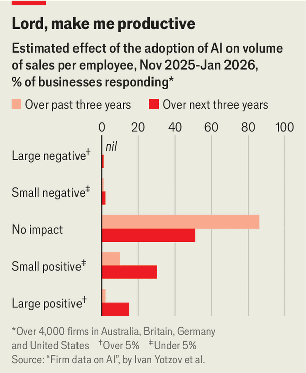
然而，在这四个国家中，86%的雇主表示，过去三年技术对劳动生产率的影响微乎其微（见图表）。若这令人困惑的画面，恰如其分地映射了实际使用技术的真实体验。人工智能模型可以超越全球最顶尖的数学家，却仍会被“strawberry”（草莓）中“r”的数量所难倒。它对完全错误的断言所表现出的自信，足以让经济学家感到自豪。与AI合作则意味着成就、阿谀奉承与失望的混合。这恰如其分地反映了办公室生活，但与当初承诺的相差甚远。至于为何进展停滞，最合理的解释是，从电力到互联网，所有通用技术都需要时间才能发挥全部作用。■
生成式AI的时代仍处于萌芽阶段。“这就像我们都是会计师，而微软Excel上周才被发明出来。”OpenAI董事会主席布雷特·泰勒如此说道。他同时也是Sierra公司的联合创始人，该公司开发客户服务AI代理（自主运作的工具）。构建AI模型的公司——如OpenAI、Anthropic等——都在努力让产品对机构更具实用性。Anthropic公司（Claude的开发者）负责新产品研发的迈克·克里格则区分了模型的横向能力与纵向能力。横向能力指的是适用于几乎所有白领工作的通用活动：撰写、研究、制作PPT幻灯片而不陷入杀人冲动。纵向能力则更难掌握，因为它们涉及特定技能：例如在银行构建现金流模型。■
大AI公司正通过雇佣专家等方式积累更多行业经验。但即便坐在用户身边观察他们全天的工作内容都颇为困难，更不用说作为缺乏现实经验的软件工程师了。多家AI初创企业正试图填补这类空白，但市场成熟也需要时间。泰勒先生回忆称，在互联网早期，企业曾投入大量资金让网站正常运作。如今他们可以购买现成的解决方案。他预计，未来AI代理也将如此。“五年后，我认为市场将出现大量成熟的供应商，他们以解决问题的AI代理为产品进行销售，而非像现在这样，有人出售模型并说：‘这里有一堆木头，自己盖房子吧。’” ■
换句话说，企业仍需自行理解这项技术。这引出了第三个问题：如何管理生成式人工智能在企业中引发的各种问题。这些问题涉及行为、技术与组织层面。行为层面的问题可能影响普通员工，也可能波及高管。宾夕法尼亚大学沃顿商学院教授伊桑·莫利克（Ethan Mollick）指出，员工最了解如何利用AI。但他们也有诸多理由回避AI，或对使用AI保持沉默。他们可能希望将机器完成的工作归功于自己，或避免透露自己拥有更多空闲时间。最重要的是，他们可能不愿表明自己的工作能被AI取代。（“老板，我这岗位可以被AI取代了。”“是啊，你确实可以。”）企业通过各种方式推动AI应用。一些公司会向自动化任务的员工发放现金奖励。
一些企业设有仪表盘，用以展示各部门技术使用情况。绩效评估可具体指出AI应用进展。但若员工与高管之间缺乏信任，仅靠这类激励与惩罚措施效果有限。坦率承认未来存在的不确定性或许听起来像陈词滥调，但至关重要。“有些岗位将消失，”DBS（东南亚最大银行）AI负责人Nimish Panchmatia表示，“但同时也会产生新的岗位。”该银行开设培训项目，帮助员工掌握新技能，例如将客服人员转型为销售人员。通常需要解决的行为问题并非恐惧，而是便利性。■
Glowforge（美国）是一家总部位于西雅图的桌面激光切割机制造商，曾尝试使用一款第三方AI销售辅导工具，该工具会向员工发送销售电话的摘要。丹·沙皮罗（Dan Shapiro）表示：“每个销售代表都直接将其弃用，它太嘈杂了，也不符合团队的工作节奏。” Glowforge随后自主研发了同类工具。该工具同样会自动监听销售电话，并通过邮件反馈哪些环节做得好、哪些需要改进。但如今AI的反馈已融入销售员与经理每周的讨论中；预期会讨论这些反馈，使得员工对工具的重视程度大幅提升。“你可能拥有更优产品，但如果它无法融入某人的工作流程，无法融入他们的日常，就很难获得采纳。”Yum!（百胜集团）AI负责人卡梅伦·戴维斯（Cameron Davies）表示。
品牌拥有者，包括必胜客、塔可钟等连锁品牌。过度热情则是另一个需要解决的行为问题。人工智能的优缺点难以预测——莫利克（Mr. Mollick）等人称之为“锯齿状前沿”——这意味着需要时间培养如何使用这项技术的直觉。在最初急于采用AI的过程中，人们往往要经历痛苦的教训。去年，德勤（Deloitte）澳大利亚分部向联邦政府退还部分费用，因其撰写的一份报告充斥着AI生成的错误。本月，英国西米德兰兹警方承认，禁止伯明翰足球赛中以色列球迷入场的决定部分基于AI对一场从未发生过的比赛的幻觉。避免这类灾难性事件也意味着解决一系列技术问题。■
然而，拉马·拉马克里希南（Rama Ramakrishnan）认为，这种做法的隐性成本往往被忽视。他此前是科技行业高管，现任麻省理工学院（Massachusetts Institute of Technology）教授。首要成本在于将模型适配到具体的应用场景中。这意味着要使用合适的训练数据、进行微调并降低幻觉风险。亿滋国际（Yum! Brands）的戴维斯（Mr Davies）表示，通过采用小型语言模型——这些模型基于数据子集训练，专注于特定任务——其旗下餐厅的语音点餐应用在产生幻觉方面空间更小。“我并不需要那个你从它那里订购披萨的模型能告诉你世界上最著名的经济学家是谁。”（不过，这个想法不错。）尽管如此，有时幻觉本身也可能带来价值。
OpenAI人工智能战略负责人布里斯·沙勒梅尔（Brice Challamel）将人工智能描述为能够胜任多种角色的队友——既是协助完成重复性工作的助手，也是解释复杂概念的专家，还是提供反馈的教练，以及产生创意的合作伙伴。若幻觉（hallucination）源自专家角色，它可能被视为想象力；而当AI被要求进行头脑风暴时，这种“幻觉”则可能转化为创造力。格洛夫 Forge（Glowforge）的销售教练工具便是如何容忍甚至利用错误的典型案例。AI常常在反馈中出错——例如断言某次销售机会被错失，而实际上该通话的目的是维护客户关系。但该工具也被刻意设计为“低置信度”（low conviction）：其观点被有意设定为引发讨论的素材。■
由于生成式AI基于概率运作，你永远无法确定它会输出什么内容。因此，第二个隐性成本是为那些错误可能产生严重后果的使用场景设置安全机制。例如，Sierra（西埃拉）采用“监督模型”实时监控客户与AI代理之间的互动，必要时有专人介入。另一模型则在事后评估对话内容，将复杂案例转交人工审核员处理。特雷弗·泰勒（Tayler）指出，当分配给代理的任务范围更明确时，问题将变得更容易处理。例如零售商有统一的退货标准，这意味着客服代理可以先询问商品购买时间及是否已使用，再决定具体处理方式。■
同种思维模式在英国初创企业加菲尔德（Garfield）身上也有所体现。这家企业是全球首家被监管机构批准提供AI法律服务的公司。加菲尔德帮助债权人追讨小额债务，所谓小额债务指的是未偿还金额低于1万英镑（约1.38万美元）的债务。对大多数人而言，向法院起诉未付账单是一项令人望而却步的过程；一旦请律师介入，成本将迅速攀升。生成式AI能显著降低这一成本。企业可将会计软件与加菲尔德连接，系统会自动处理发票并判断是否存在有效索赔；随后可发送催款函，这类函件往往足以促使债务人付款，同时也能在法庭上协助债权人。
菲利普·杨（Philip Young）是该公司联合创始人之一，也是团队中唯一的律师。他表示，这一想法之所以可行，部分原因在于小额诉讼程序具有“相对明确的输入和输出，且可能性范围有限”。而更复杂的诉讼案件则需应对更多变数，这会增加出错的可能性。除了行为和技术问题，企业还需解决一系列组织问题，才能让人工智能真正发挥作用。招聘合适人才是显而易见的难题。未能为机器提供正确的数据是另一常见误区。模型还需评估以确保输出质量。对于某些任务，这一过程相对简单。■
硅谷AI投资家萨拉·古奥（Sarah Guo）指出，软件工程之所以成为AI应用的先锋，部分原因在于验证代码是否有效相对容易。而在其他领域，判断某事物是否达标则要困难得多。她举例称，要让模型变得有趣远比验证代码有效难得多，因为幽默感是“软性且模糊”的。大量企业任务都属于这种模糊范畴。因此需要人类专家来定义“足够好”的标准，同时还需要提供关于如何高效完成工作的隐性知识（GDPval评估显示，前沿模型可与行业专家媲美，但排除了依赖隐性知识的任务）。利用这类内部专业知识，在很大程度上是一项组织层面的挑战。■
莫利克指出，一家大型企业正在尝试将资深工程师和领域专家分派至跨部门小团队，以加速特定项目的推进。然而，加速某一领域的发展可能在其他领域造成瓶颈。所谓“氛围编码”（vibe-coding）是一种用自然语言提示AI编写计算机程序的俚语，使新手更容易开发应用程序和功能。从某种意义上说，这种模式是利好之举。像Claude Code这样的编码工具，以及Lovable或Replit等平台，允许终端用户和产品经理直接展示他们想要构建的内容，而非耗费大量时间制作PowerPoint演示文稿和冗长文档。如今，一些科技公司内部已流传起“演示而非备忘”（demo, don’t memo）的说法。■
但这引发了一个新问题。“你们不再受限于代码编写的速度，现在瓶颈变成了代码审核的速度，”Indeed公司人工智能负责人汉娜·卡尔胡恩（Hannah Calhoon）表示。强生公司（Johnson & Johnson）首席信息官吉姆·斯旺森（Jim Swanson）指出，过去他常听到不同地区管理者们夸耀如何利用人工智能优化发票流程，却忽略了这意味着财务团队的工作量反而增加。强生公司正是早期人工智能实验热潮演变为更审慎态度的典型案例。该公司最初采取“百花齐放”的策略，结果也带来了不少杂草——据斯旺森透露，85%的价值产出仅来自15%的应用程序。
强生公司现已转向更加聚焦的策略，通过中央人工智能委员会和数据委员会确保最有前景的项目获得批准，并确保相关数据可被调用以推动项目落地。评估指标也日趋成熟，从粗放的AI使用目标转向真正影响业务的关键指标。“您能做的最重要的事情之一……是明确业务目标而非技术目标，”泰勒先生表示。他的初创公司Sierra采用基于成果的定价模式，这意味着客户仅在AI代理实际解决客户问题时才需付费；若需人工介入则免费。这一切并非淡化生成式AI的非凡能力，或其加速渗透职场的速度。随着技术不断突破，原本超出其能力范围的任务也将变得可行。■
新的商业模式和组织形式将随之而来。美国、澳大利亚、英国和德国的企业主管们或许尚未感受到AI带来的显著影响，但最新调查表明，他们预期未来三年内将出现大规模裁员和生产力提升。但不要过分沉迷于“外星智能”的概念。要让AI在组织内部发挥作用，仍需解决一系列务实的管理问题。这包括设计合理的激励机制以推动采用、设置限制措施以缓解潜在风险，以及建立选择、评估和实施应用的系统。斯旺森表示，需要在现实主义与雄心之间找到平衡，成为“现实的理想主义者”。■
§011 读者来信原题：The chronic weakness of the British state · 板块：Letters · 栏目：读者来信
欢迎通过电子邮件投稿至letters@economist.com 了解更多关于我们如何处理您的来信 我的研究支持您关于英国政府慢性弱点的报道（“困境中的国家”，1月10日）。英国多数事务的推进往往不依赖中央政府。变革的动力来自白厅体系之外，来自慈善家、地主、慈善机构、大学，尤其是地方政府。谁修建了英国的高速公路？谁协调了全国自行车网络？ ■
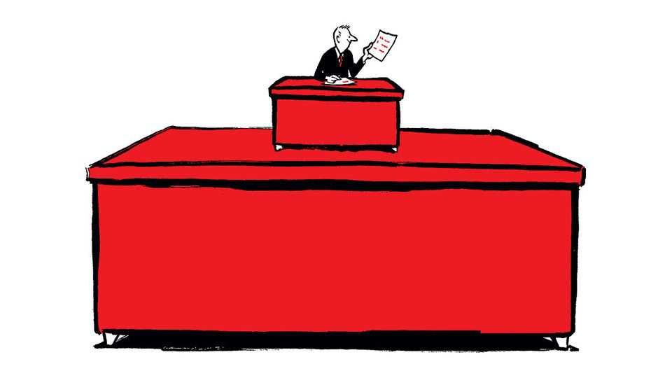
谁在20世纪50年代和60年代建造了那些公共部门住房？谁建造了英国的水库、公园、引水渠和下水道？谁推动了米尔顿凯恩斯（Milton Keynes）——英国发展最快的城市——的构想？谁成功推动了英法隧道铁路连接项目？答案始终如一，甚至更甚：地方自治体。但如今英国的地方政府已沦为昔日的瘦影，受财政紧缩、人才流失和公众轻视的重创。若基尔·斯塔默爵士（Sir Keir Starmer）希望重启政府机器，答案的一部分必须超越其政策顾问团队，转向地方行政区与市镇议会。教授伊恩·怀雷（Ian Wray）赫赛特林公共政策、实践与地方研究所（利物浦大学）您的关于国家治理能力的报道忽略了现代公务员面临的数字全景监控。■
我们正目睹防御性官僚主义的崛起，这是一种体制，其中官员的主要目标不再是完成任务，而是最小化社交媒体上的攻击。当一个错误可能被断章取义、制作成网络迷因并传播至数百万受众时，任何公共官员的理性反应都是避免做出任何决定。将社交媒体上的攻击视为创新的负担，项目越宏大，这种负担就越重。最终，那些富有远见的开拓者会离开，因为他们拒绝支付这笔代价；而那些只会取暖的平庸者则留下，因为他们从不做出值得被关注的行动。因此，我们最终选择的都是灰暗性格的人，这些人缺乏激情与远见，因而不会成为专业质疑者的攻击目标。如果我们希望一个能够行动的国家，就必须首先改变那种让无所作为成为唯一安全职业路径的文化。■
英国政府在实际推进事务中面临诸多难题。在复杂系统中实现预期成果，需要明确聚焦于既定目标，并赋予参与者实现目标的自主权。在航空安全、国防及复杂项目等高效组织中，领导者首先会通过建立清晰共识，明确达成有效共同目标的具体路径。成功的关键要素包括以下几点：首先，权力必须下放给所有需要参与的人员，而非仅由高层保留。谁该负责什么，他们是否愿意执行？其次，必须形成对目标有效性和重要性的共识。在初期投入时间达成这一共识，将使后续执行阶段更加高效。■
第三，那些通常为保护所必需的实现障碍，需要被消除或修订。我们制定大量法律，但修订速度却很慢。第四，哪些关键节点和数据能体现对目标的进展，并表明每个人都在做出必要贡献？以成果为导向的协作模式在迅速提供个人防护装备以应对新冠疫情时成效显著。同样的方法论如今在各类社区和监管项目中也取得成功。采用新的政治与项目方法将取得成效。克里斯托弗·霍奇斯 牛津大学社会法律研究中心荣誉教授 你正确捍卫央行独立控制权，以确保在反复无常的政治家面前经济稳定（“干涉日”，1月17日）。■
财政政策宽松对一国财政健康同样有害，且极易引发与宽松货币政策相似的刺激效应，而后者本身在过度赤字支出面前也变得无能为力。欧元区曾一度尝试设定赤字上限，直到银行危机和疫情爆发迫使采取必要的凯恩斯主义调整。但有人忘了收走酒桶，西方国家如今已习惯无约束借贷。政治家应能掌控税收与支出的平衡，却不应拥有无限借贷的自由。若债券市场最终得以控制，或许我们也能同时享受低利率和低通胀。Adrian FogartyLondon ■
作为全国保守党大会主席，代表基层会员，我强烈反对巴戈特（Bagehot）将该党描述为“濒临死亡”（Bagehot，1月17日）。保守党并非一个威斯敏斯特回音室，而是一个扎根于数百万英国同胞小-c保守主义的全国性运动。这些民众相信一个更强大的英国，由志愿者在雨中派发传单、筹款并逐选区展开竞选。这种基层的坚韧与决心从未减弱。该党在财务、组织和思想层面也绝非空洞。我们依然稳健、有偿债能力，并正在开展近二十年来最全面的政策审查。运动能延续数百年并非偶然，而是因其能适应变化、吸收冲击并自我更新。我们的政党曾如此，如今亦在这样做。■
预测英国政治的终结性衰退更多地反映了当下时尚而非基本面。保守主义依然坚韧、相关且准备再次发挥作用。朱利安·埃拉科特 英国全国保守党大会（布里斯托尔）主席 “深海守护者”（1月3日）强调了刚刚生效的公海条约的历史意义。但还有一个关键点将决定该条约实施是否成功。并非所有海洋保护区（MPA）都具有同等效力。事实上，大量MPA仅得到轻微或极小程度的保护，甚至未被实施、缺乏资金或执法，因此难以实现生态保护目标。一些MPA甚至允许底拖网捕捞等与生态保护相冲突的活动。■
大量科学研究已明确证明，海洋保护区（MPA）在完全或高度保护免受可缓解威胁（如捕捞、采矿、倾倒或化石燃料勘探开采）时，生物多样性恢复或保护效果最佳。完全保护的MPA禁止任何开采或破坏性活动；高度保护的MPA允许部分此类活动，前提是影响极小。此外，这些研究还指出，MPA设立与实施时已有的社会与生态条件至关重要，而执法、监测、资金投入和适应性管理高度影响其成效。该条约的科学和技术委员会及其缔约方会议将于2026年开始就海洋保护区的设立作出决策。他们应重视这些科学研究的明确证据与知识。■
Jane Lubchenko俄勒冈州立大学海洋生物学教授，俄勒冈州科瓦利斯市。我欣赏您对美国“优越条款豁免权”及其可能影响联邦移民官员在明尼阿波利斯枪杀女性案中被起诉可能性的讨论（“States and rights”，1月17日）。您指出，这一问题与1890年最高法院的In re Neagle案密切相关。该案裁定联邦法律优先于州法律，认定联邦治安官David Neagle因杀死“企图暗杀”最高法院大法官Stephen Field的“刺客”而享有豁免权。行凶者David Terry是前加州最高法院首席大法官，对Field怀有怨恨。在火车站，Terry袭击Field，Neagle介入并开枪击毙Terry。这并非Terry首次与联邦官员发生冲突。■
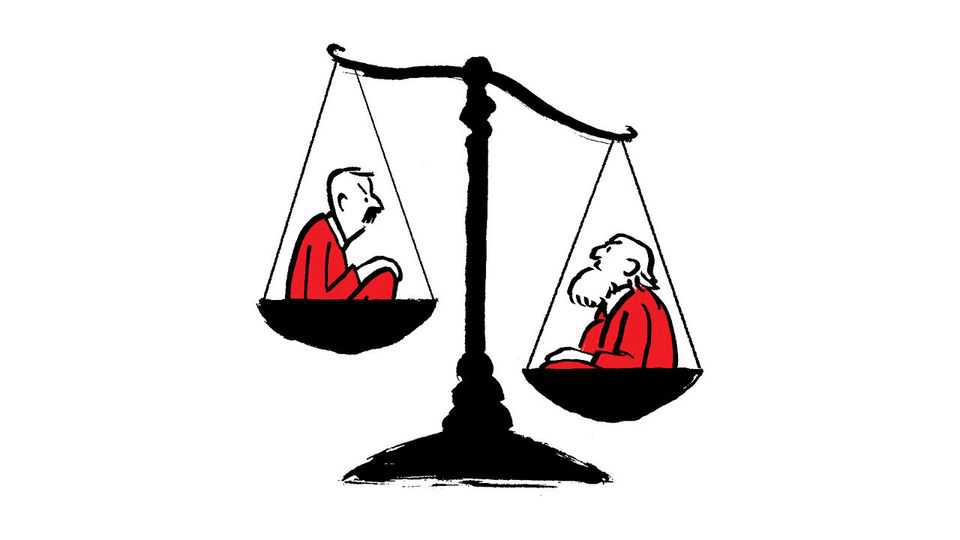
数年前，他曾与一位参议员决斗致其身亡。泰勒·吉普（Tyler Gipe），华盛顿特区
我读到你们关于非洲内河航运的文章（“Bring on the boats”，1月3日），文中提及一艘埃塞俄比亚客运渡轮被拖过沙漠与山脉，从红海运至提格雷湖。这让我联想到电影《法尔可拉多》（Fitzcarraldo），一位古典音乐狂热者试图将蒸汽船拖过安第斯山脉，以筹措歌剧院资金。当被问及这项挑战性制作时，导演温纳·赫尔佐格（Werner Herzog）表示：“每个男人都应该至少一次将船拖过一座山。” 奥古斯都·海尼（Augustus Haney），纽约
我的预测是，新任和平委员会的早期议程将包括设立和平奖（“Get on with phase two”，1月24日）。有人愿意为首位得主与我打赌吗？西默斯·科尔姆（Seamus Collum），曼彻斯特 ■
§012 亚洲原题：Taiwan’s new opposition leader wants to talk to Xi Jinping · 板块：Asia · 栏目：亚洲
亚洲 | 台湾新反对党领袖陈丽文（Cheng Li-wun）表示希望今年早些时候与中国国家主席习近平会面。风险与陈丽文如影随形。她1990年代以学生运动身份起步，当时寻求为家乡争取独立，并批评当时执政的中国国民党（KMT）。随后她出人意料地加入国民党，如今作为该党新领导人，她正面临最大的赌注。随着中国加大台湾周边军事演习力度，她正阻挠提高国防开支的举措。她认为台湾民众应接受自己是中国人的事实。
她希望借助与中国领导人习近平的和解，带领国民党重返执政。她表示，自己任期内最重要的任务是推动两岸和平。“推动两岸和平是我任期内最重要的任务，”她1月27日在接受《经济学人》专访时表示。为此，她透露，经过九年来首次中断，国民党将于2月初恢复与中共的对话，首先从双方智库交流开始。她表示希望在2026年上半年访问中国，与习近平会面（习近平在她10月当选后曾发贺电，表达希望双方合作推进统一的期望）。她说：“我们必须停止刻意污名化与中国相关的一切事物。” 这一策略在党内甚至引发争议。
中国国民党（KMT）连续三次总统选举败给主张台湾为独立国家的民主进步党（DPP）。民调显示，多数台湾民众不信任中国政府，对统一缺乏兴趣，并认为自己是台湾人而非中国人。陈建仁的政纲也令美国担忧，美国致力于协助台湾防卫却坚持要求台湾大幅增加军费开支。美国官员认为习近平已下令其将领在2027年前具备攻占台湾的能力。但56岁的陈建仁相信自己能协助避免冲突，并在2028年总统大选前赢得选民支持。她承认自己对国家认同的观点与民意脱节，却将责任归咎于DPP的“去中国化”政策。
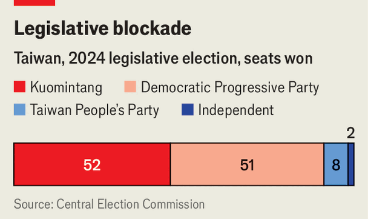
此外，她认为国家认同不会成为未来几年的关键政治议题。“更重要的是两岸关系，”她说，“我认为正是两岸关系将真正决定人们的投票倾向。”她的观点围绕两大担忧展开。其一是若民进党（Democratic Progressive Party）在2028年再次胜选，大陆领导层可能失去通过和平方式统一台湾的信心。“一旦对台湾失去期待，大陆解决台湾问题的唯一途径可能就是我们都不愿看到的方式，”她说。另一大担忧是美国对台湾的支持正在减弱。■
她引用唐纳德·特朗普总统的要求，称台湾应将国防开支提高至GDP的10%，并将半导体产业的40%转移至美国，而该产业生产全球大部分高端芯片。“对许多台湾民众而言，拼凑这些信息让他们感到美国正在抛弃台湾。”她说。批评者认为此类言论是制造恐慌。尽管中国已发展出强大的能力可入侵或封锁台湾（并经常进行相关演习），但尚不清楚其能否在承受巨大损失且摧毁全球经济的情况下成功。习近平主席最近还清洗了其军事领导层。民进党领导人指责陈建仁在重复中国宣传并危及台湾安全，通过阻挠国防开支来危害台湾。台湾总统赖清德承诺到2030年将军事开支提高至GDP的5%。■
他同时提出今年追加400亿美元的国防预算，主要用于采购美国武器。然而，这两项计划均因中国国民党及其盟党在立法院的阻挠而受阻，这些政党合计掌握多数席位。陈佩真表示，赖清德应为未提供更详细的军事开支计划而负责。她指出赖清德提出的预算“挤占了其他所有需求”。她拒绝具体说明台湾应投入多少国防经费，但强调台湾的军力永远无法与中国相匹敌。她主张通过“合理”的军事开支与与习近平进行谈判来实现台湾的安全。她还批评赖清德拒绝接受1992年与中方达成的共识，当时国民党执政时期，该共识规定海峡两岸同属“一个中国”，但允许不同解读。■
由于台湾地区民进党（DPP）认为该公式在法律上无效（并视为陷阱），自2016年执政以来，中国已暂停官方会谈。陈建仁表示，如今若接受“九二共识”，将“显著降低军事冲突的可能性”。至于此类谈判的预期成果，陈建仁谨慎措辞。她表示，与习近平会面的主要目标是争取明确公开承诺，双方应致力于维持和平，承认战争将带来“难以想象的灾难性后果”。他能被信任吗？为避免损害国际形象，中国必须“言行一致”，她表示，“可信度至关重要”。就长期目标而言，她拒绝透露最终目标是否应为和平统一（如前国民党主席曾建议）。
在她四年任期中，她表示仅建立维持和平的框架就已经是重大成就。“至于现状之后是否可能发生改变，我只希望这种改变发生在两岸人民都能接受的条件下，”她补充道。考虑到她过往经历，她对和解的谈论尤为引人注目。尽管其父曾是1949年随国民党军队退守台湾的军人，但她却成长为一名学生抗议者，并逐渐倾向民主进步党（DPP）。2002年，她因不满该党内部腐败及对异见的不容忍而离开该党。三年后加入国民党（KMT），她迅速以犀利的公开演讲风格获得声誉。但直到最近，她才更加公开地表达自己对中华身份的认同。■
她是否会在2028年成为中国国民党的总统候选人尚不明确：她表示自己目前专注于现任职务。但作为党主席，她将主导该党今年11月地方选举的政纲制定，以及总统选举的布局。目前，她已通过多种方式搅动台湾政坛，这种影响可能改变两岸与美国之间脆弱的平衡关系。风险之高前所未有。陈已全身心投入。■
§013 亚洲原题：For the first time in 54 years there are no pandas in Japan · 板块：Asia · 栏目：亚洲
，泪洒送别小雪和雷雷，这对东京上野动物园的双胞胎大熊猫。约11万名民众申请了4400个观景名额。许多未能如愿的人仍前往现场，挥舞着写着“谢谢小雪和雷雷”的旗帜。日本自54年来首次没有大熊猫。在这样一个大熊猫拥有狂热粉丝的国家，它们的缺席难以忽视。这也象征着与中国的外交关系逐渐降温。日本的熊猫外交始于1972年，当时中国赠予日本首对大熊猫，以纪念外交关系正常化。这些动物引发了热潮。
自那以后，数十只熊猫在日本动物园中生活。上野动物园副馆长金子美香表示：“熊猫们已经作为这座动物园的象征存在了50多年，这一篇章的结束令人感到悲伤。”官方称小熊和雷雷离开是因为贷款到期。但早稻田大学的前田和弘认为：“如果中日关系良好，中国会立即派新熊猫来。”去年末，日本首相高市早苗曾表示，若台湾出现麻烦，日本可能动用武力。中国随即暂停从日本进口海鲜，并限制出口可用于军事的物资。与此同时，韩国似乎即将迎来新一批熊猫，两国总统的友好会晤为此铺平了道路。熊猫何时或是否能重返日本仍不明朗。■
高桥真美的立场似乎提升了她的支持率；她不太可能因为几只毛茸茸的小熊猫而退让。对民众而言，对熊猫的喜爱也不总是延伸到中国。"我喜爱熊猫，但中国让我感到害怕，"动物园游客增井早苗坦言。2024年的一项民调显示，近90%的日本民众对中国持负面看法。尽管目前上野动物园的熊猫馆空无一人，饲养员们仍希望通过熊猫的脚印和粪便复制品，让小雪和雷雷的记忆得以延续。■
§014 亚洲原题：The too-slow change of Indian agriculture · 板块：Asia · 栏目：亚洲
纳伦德拉·莫迪（Narendra Modi）或许可以被原谅对农民心存芥蒂。这位印度总理曾两次试图推进急需的农村现代化改革，却两次都陷入尴尬境地。在首次任期之初，他推行的土地征用法案因政府被讥讽为“西装革履者掌控的政府”（suit-boot ki sarkar）而被迫撤回。第二次改革则陷入长达一年的抗议活动，一群来自北部和西部地区的农民群体虽人数不多却声势浩大，抵制农业市场改革。这次能否一改往日颓势？■
莫迪总理近期信心满满，推动了一系列棘手的改革，包括就业法修订。2月1日的预算案预计将进一步削减官僚主义。但随着春季州选举临近，政府可能对再次针对农业的改革持谨慎态度，以免引发另一场举着锄头的抗议浪潮。农民工会已表示，他们计划在选举前组织全国性游行。然而农业领域仍亟需改革。尽管粮食产量在过去60年中稳步增长，但水平依然低下。印度稻农的产量比中国同行低约三分之一，缅甸在危机中仍能更高效地种植豆类。这不仅对农民不利：低效的生产会延缓城市化进程，因为农村贫困意味着人们缺乏资源迁入城市。■
大部分责任归咎于由电力、化肥等补贴以及政府背书的特定作物价格保障机制所造成的扭曲激励。每当消费价格上涨时，政客们就施加社会主义式的管控，这使得情况更糟：自2022年起，小麦出口禁令一直生效。“这就像一脚踩着油门，另一脚踩着刹车，”农业经济学家阿肖克·古莱蒂表示。现在正是尝试新方法的好时机。据高盛银行（Goldman Sachs）统计，受益于连续两年良好的季风，农业工资已超过其他行业工人工资，去年涨幅达4.5%，为八年来最大增幅。■
在哈里亚纳邦（Haryana）这个粮食产区的索纳镇（Sohna）一座繁忙的曼迪（state-run market，印度市场）里，带着孜然、豆类和土豆前来售卖的农民们几乎听不见抗议声。"我们很开心，"塔伦·沙玛（Tarun Sharma）站在一堆优质的花椰菜旁说道。他唯一的抱怨是灌溉设施缺乏投资。对于政客来说，害怕农民并不难，因为大约一半的选民经济上依赖农业。自2020年以来，一些农业领袖开始高调宣扬自己的影响力。但如今，农村抗议运动的土壤似乎并不那么肥沃。除了工资上涨，村庄还受益于日益丰富的福利，包括价值250亿美元的粮食计划和85亿美元的住房方案。许多人预计抗议活动将不了了之。"现在派系太多，"西北印度地区工会领袖古尔纳姆·辛格·查鲁尼（Gurnam Singh Charuni）承认道。■
莫迪2020年提案的核心是赋予农民自由出售农产品的权利。然而这一政策大多未能落实，主要因为大土地所有者和强势中间商说服农民认为这是一条单向通往剥削的道路。索纳的中间商拉杰什·库马尔表示，这种现象正以“暗道”方式发生。他盘腿坐在一堆小麦袋旁，身边放着两台计算器和一个保险箱，称自己的生意因政客们找到让农民绕过集市直接出售的手段而受挤压，例如鼓励合同种植。“我这一辈子都在做这个，现在被困住了，但我不让儿子或女儿进入这个行业。”在哈里亚纳邦，州政府已向农民提供激励措施，鼓励他们种植更高价值的作物。中央政府近日宣布将改革一项庞大的农村就业计划。■
古尔蒂认为，要真正提升生产率，农业需要一场1991年的变革，他指的是社会主义时期对经济其他领域的管控开始被逐步解除的转折点。如果莫迪先生能实现这一点，农民们将是第一个表达感激之情的群体。■ 通过订阅我们的免费周报Essential India，随时掌握印度最新动态。
§015 亚洲原题：Thailand’s liberals face a tricky election · 板块：Asia · 栏目：亚洲
泰国年轻自由派人士在1月25日重新投入竞选活动时，以摇滚明星般的热情迎接昔日领袖。数千名支持者聚集在曼谷市中心一家高档购物中心外的广场，热议皮塔·林贾伦拉特（Pita Limjaroenrat）可能从哪个方向发起攻势。当这位衣着考究的皮塔先生（见图）最终现身时，人群爆发出欢呼。但这位自由派偶像不会出现在2月8日泰国人民投票选举新一届下议院的选票上。■
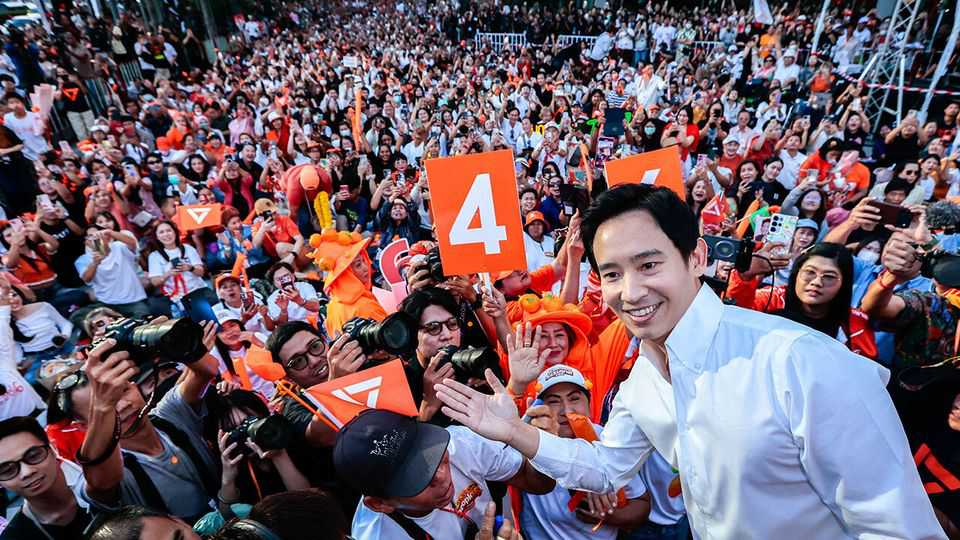
尽管皮塔（Pita）带领Move Forward党在2023年5月的上届选举中获得第一，但该党随即被参议院阻止组阁，参议院成员由军方任命。次年，宪法法院解散Move Forward党，并禁止皮塔十年内参选。法院裁定该党违反宪法，因其承诺改革泰国严苛的刑法，该法将任何对君主的批评定为犯罪。Move Forward多数成员此后重组为新组织——人民党。在曼谷集会上，支持者佩戴橙色服饰和三角形标志，刻意模仿Move Forward的象征。但法院裁决迫使他们放弃与被禁政党最紧密关联的立场，即改革泰国的诽谤君主法。■
新人民党同样缺乏皮塔（Pita）或其前任塔纳通·朱朗隆吉特（Thanathorn Juangroongruangkit）的明星效应，后者曾在前一轮镇压中被法院禁止参与政党政治。尽管民调显示，在皮塔被禁之前，45%的泰国人希望他担任总理，但目前仅有25%的人对他的继任者——党领导人塔纳通持相同看法。尽管皮塔和塔纳通本人无法参选，但新党要求他们在最后两周大力竞选。希望他们的现身能提振人民党在下议院赢得多数席位。理论上，这将为该党提供重新组阁的机会，因为自2013年以来，参议院首次不再参与下一任总理的遴选。但人民党目前在民调中表现低迷。其问题部分源于结构性缺陷。■
选民将通过简单多数制选举400名众议员，另通过比例代表制选举100名。2023年，前进党（Move Forward）获得38%的比例代表票，但仅赢得25%的选区席位。这使其获得下议院30%的席位。不过此次泰国最可靠的民调显示，人民党（People’s Party）在比例代表票中仅获得30%（见图表）。其领导人承认，他们在选区席位上可能表现更差，因为该党拒绝像传统泰国政客那样购买选票。新党不仅缺乏魅力型领袖和参与肮脏政治的意愿，更因两次解散和27名领导人被禁，令一些心灰意冷的前支持者怀疑，泰国亲王室法院是否终将允许自由派政党执政。有充分理由如此。■
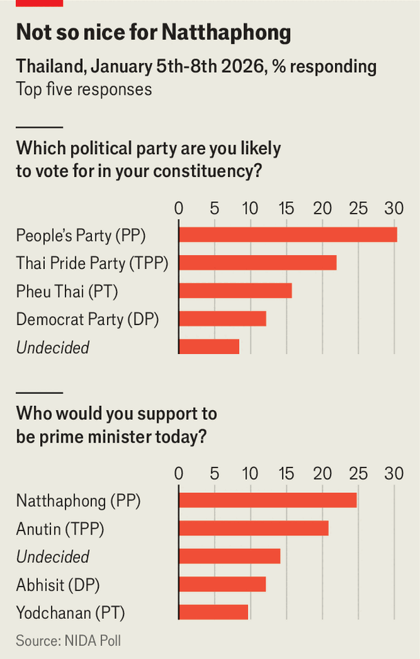
反腐机构正在调查人民党14名候选人涉嫌共谋2021年一项改革亵渎皇室法的法案的伦理违规行为。其中包含自由派现任领导人纳塔蓬·鲁恩潘亚武特。尽管不如皮塔先生受欢迎，但民调显示他仍是选民首选的总理人选。他若被认定有罪，也将面临从政禁令。人民党近期的颓势本应由民粹主义的泰爱泰党受益，该党在2023年获得第二多席位。但其支持率也因当年与保皇派及军方政党结盟组阁而流失，而宪法法院在两位领导人担任总理期间将其开除，更使政府陷入混乱。
相反，势头似乎正转向一位建筑大亨安图林·查恩维拉库尔（Anutin Charnvirakul）及其曾属小党的泰国骄傲党（Thai Pride Party）。这位2025年9月被任命为少数政府首相的安图林，自上任以来巧妙地将民粹经济政策与对王室和军队的支持结合起来。尽管该党在2023年选举中仅获得微不足道的3%比例票，但此后在最近一次可信民调中支持率已飙升至22%。12月与柬埔寨的边境冲突反而对其有利，泰国民众普遍倾向于支持军队。作为体制派代表人物，自信且随和的安图林比过去两届选举中带领保守政党参选的严厉军方领导人更具吸引力。■
他组建联盟可能比那些坚持原则的自由派对手更容易。人民党承诺将任命技术官僚担任部长职务，而非按照传统惯例向联盟伙伴分配内阁席位。但安图林先生是个擅长交易的人，对这类做法毫不介意。尽管他已任命专业人士分别担任财政、商业和外务部长，其余职位仍待定。1月23日，在飞往乡间竞选前，他在政府大厦接受《经济学人》采访时称，只要某个政党接受宪法前两条（保障君主制的角色），他就能与其合作。不过，目前仍不能排除人民党获胜的可能。泰国大选是自由派、民粹派和保守派三方角力，这类选举预测起来异常困难。■
2023年，‘前进党’在对手接连出现失误后，支持率迎来最后阶段的激增。皮塔先生（Pita）在竞选最后两周化身偶像人物。随着皮塔先生（Pita）重新回到竞选前线，该党希望再度迎来转机。■
§016 亚洲原题：Takaichi Sanae relies on her keenest fans in Japan · 板块：Asia · 栏目：亚洲
｜Banyan 高市早苗作为日本首相，效仿“铁娘子”撒切尔夫人。她随身携带的标志性手提包——一款手工制作的黑色皮革“格蕾丝迪乐托特包”（Grace Delight Tote）——与撒切尔夫人如出一辙。自去年10月高市早苗上任以来，生产这款包的145年历史的日本公司花王（Hamano）不得不推出预约制以应对需求激增。这款包的热销只是高市早苗引发热情的一个缩影。她希望这种热情能转化为2月8日提前举行的众议院选举中压倒性的民意支持。■
但目前执政的自由民主党（LDP）与其联合执政伙伴仅以一席之差维持多数席位，其民调并未高于2024年10月众议院选举时的水平。因此，石原伸晃的支持度深度，而非广度，才是关键。其内阁执政期间，支持率长期维持在70%以上，使其接近近年来最受欢迎的日本领导人小泉纯一郎的巅峰水平：小泉标志性的波浪发、摇滚明星般的外表和改革热情曾引发“小泉热”，在2001年至2006年其执政期间达到高潮。■
在社交媒体上，人们对麻生太郎的热情甚至催生了一个专属名称：山かつ（Sanakatsu），这是对“oshikatsu”概念的变体，而“oshikatsu”本身由“osu”（推荐）和“katsu”（活动）两个汉字组合而成，通常用来形容粉丝为表达忠诚所做出的极端行为。麻生太郎的支持者究竟有多忠诚？他的吸引力更多来自他所象征的意义，而非他在三个月任期内的实际政绩。对于这位热衷于日本传统的坚定社会保守派而言，麻生太郎却象征着变革。“与以往的首相相比，感觉有些不同，”在麻生太郎家乡奈良经营礼品店的宇和田裕（Uehara Yuki）表示，店内货架上摆满了以麻生太郎为主题的周边商品。■
她是日本首位女性首相，这一身份无疑具有重要意义。“她作为女性的身份让民众更容易亲近她”，植野美香女士沉思道。尽管高市早苗在一些风向标社会议题上，如允许已婚女性保留婚前姓氏等问题上反对改革，引发部分日本女权主义者不满，但她也推动了女性健康议题和育儿照料不平等现象的关注。她搬到首相官邸的计划因需为轮椅使用者丈夫（中风后行动不便）进行适应性改造而推迟，高市早苗本人则是其主要照顾者。许多面临老龄化社会困境的日本民众都能感同身受。这位前电视主播、曾是重金属鼓手的高市早苗还拥有独特的表演魅力，使她脱颖而出。■
年初一场峰会上，她与韩国同事一同敲起鼓点，表演了一首热门动画电影《KPop Demon Hunters》的歌曲。这种风采与高市早苗（Takaichi）书卷气的前任石原伸晃（Ishiba Shigeru）形成鲜明对比。或许最重要的是，高市早苗似乎代表着对自民党传统的突破。自1955年成立以来，自民党一直主导着日本政治，但近年来选民对党派不透明的募捐活动和幕后政治操作日益不满。与许多高市早苗的前任不同，后者继承议会席位如同家族珍宝，高市早苗则是从卑微出身一步步打拼上来。
尽管日本自民党（LDP）领导人传统上会在东京高档餐厅与权贵阶层共进晚餐，但高桥真美（Takaichi）却倾向于避开此类聚会，更喜欢在黎明前抵达办公室研读简报。其政府的口号已逐渐演变为“工作、工作、工作、工作、工作”。然而，高桥真美通过宣布提前举行选举，可能削弱了她作为不同寻常领导人的主张。多数日本人似乎对她的决定表示不满，认为这不过是自民党一贯的政治操作，出于维护自身权力而非民众福祉的考量。自宣布选举以来，多项民调显示对高桥真美政府的支持率持续下滑：日本报纸《日本经济新闻》（Nikkei）记录其净支持率下降了16个百分点。这种波动反映出一种比真正“努力工作”（oshikatsu）更不稳定的追随者心态。■
如果强盛的自民党在选举日失利，高桥真美（高桥真美）将不得不承担后果。■ 订阅者可注册《经济学人》的Opinion新闻通讯，汇集最佳的领导文章、专栏、客座文章和读者来信。
§017 亚洲原题：Our Big Mac index carries an Asian warning · 板块：Asia · 栏目：亚洲
货币协调可能是一场味觉盛宴。1987年，世界主要经济体官员谈判卢浮宫协议以遏制美元贬值时，他们并未饿着肚子。他们用法国财政部酒窖中的龙利鱼舒芙蕾和美酒维持体力。日本和美国或许将再次联手引导货币方向。若他们需要搭配讨论的美味佳肴，点一份巨无霸或许不逊色。麦当劳最著名的汉堡包清晰展现了日元的失衡。在日本，巨无霸平均售价为480日元。 ■
按现行汇率折算成美元，这相当于仅约3美元，仅为美国同款汉堡（6.12美元）价格的一半左右。这明显表明日元严重低估。根据被称为购买力平价的经济原理，一种货币的价值应反映其能购买的商品数量。如果哈利·波特在魔法世界用一枚加隆（galleon）就能买到一篮子商品，而在美国则需7美元才能买到同样的商品，那么一枚加隆的购买力相当于7美元。因此，两国货币的汇率应约为7美元兑换1枚加隆。如果实际市场汇率与这一理论值不符，说明货币汇率存在偏差。但将这一原理应用于实际时总会遇到现实困难。究竟应将哪些商品纳入篮子？又如何确保各国的商品在本质上完全一致？■
一个答案是世界银行主导的国际比较计划（International Comparison Programme），该计划对数百种商品进行定价，每种商品都经过精心定义以确保跨境可比性。这是全球规模最大的统计项目之一。《经济学人》采取了更简单的方法。自1986年以来，我们一直以全球范围内的巨无霸（Big Mac）价格作为比较基准。为确保各国产品的一致性，我们依赖麦当劳公司对一致性的热忱承诺。最新版巨无霸指数显示，日本并非唯一拥有廉价货币的大型亚洲经济体（见图表）。中国巨无霸价格仅为3.66美元，意味着人民币低估了40%。印度麦当劳不提供牛肉汉堡，但其 Maharaja Mac 产品——配有双层鸡肉饼、墨西哥辣椒和哈巴内罗酱的汉堡——价格仅为2.51美元。■
这表明卢比缺乏巨无霸的吸引力。过去一年，卢比和人民币的低估程度也有所加剧。在印度的情况几乎毫不意外：其货币已持续贬值多年。中国则更值得关注。过去一年，尤其是最近一个月，人民币对美元实际升值。但外汇市场的变动被巨无霸价格的相反趋势所抵消。目前中国巨无霸的价格与2025年1月相同，而美国巨无霸价格却上涨。因此，人民币购买巨无霸的能力保持稳定，而美元的购买力则下降。尽管美元贬值，但贬值幅度尚不足以反映其购买力的下降。■
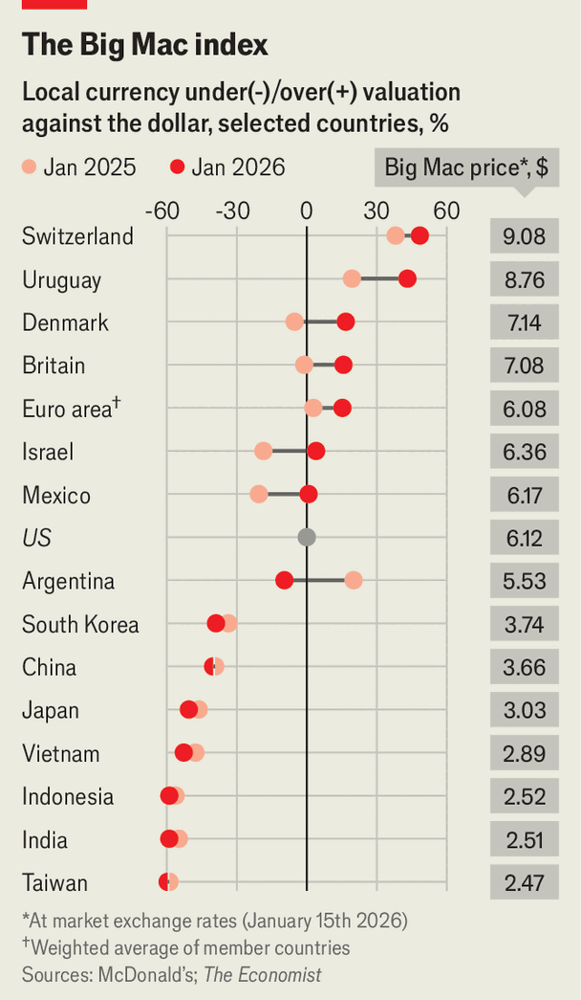
美国似乎对全球汇率体系的重组表现出极度热衷。1月27日，唐纳德·特朗普表示：“我过去总是与中日两国激烈交锋，因为它们总想……贬值、贬值、贬值。”如今美元走弱，美国总统却认为“这很妙”。这种言论帮助加剧了本周美元的下跌趋势，构成一种干预手段。美国对日本试图支撑日元的表态也影响了市场情绪。但很难想象会重现1980年代那种大规模货币外交，当时世界领导人频繁联手操纵汇率。卢浮宫协议曾伴随盛大的晚宴，而如今的临时干预措施更像是快餐式的即食食品。■
如需获取更多关于经济学、金融和市场的重大新闻的专家分析，请订阅我们的周度专属通讯《Money Talks》■
§018 中国原题：China’s rare-earth chokehold terrifies the West, but Brazil benefits · 板块：China · 栏目：中国
巴西东北部一座粉红色仓库或能帮助世界摆脱紧张的地缘政治困局。该设施隐藏在巴伊亚州的研究园区内，由巴西稀土公司（Brazilian Rare Earths，BRE）运营。该公司正在建设拉丁美洲首个稀土分离工厂，该工厂将处理17种稀土元素，这些元素是制造导弹到微波炉等各类产品的关键原料。西方国家焦急地等待新的供应来源，希望减少对中国依赖，中国控制着70%的开采和90%的加工。唐纳德·特朗普尤为关注。
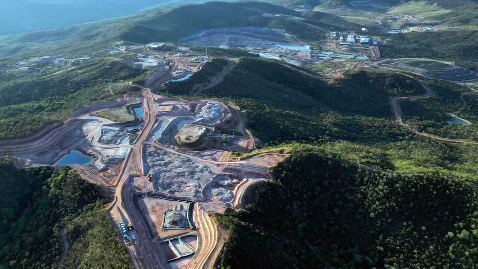
去年中国对金属、机械部件和工程师实施一系列出口限制，美国遭受重创。到11月为期一年的停火协议宣布时，许多美欧工厂已被迫缩减运营。汽车、绿色科技和军火制造商因高性能磁体短缺受到特别影响。鲜有人相信停火协议能持久。英国贸易与投资部（BRE）负责人伯纳多·达·维加表示，企业正争分夺秒寻找替代供应商。巴西拥有全球近四分之一的稀土储量，仅次于中国（见图表）。除优越的地质条件外，该国还具备成熟的开采工业。廉价电力、矿物出口经验及资深工程师是巴西的显著优势，智利矿业公司Aclara Resources的若泽·奥古斯托·帕尔马表示。巴西早有经验。
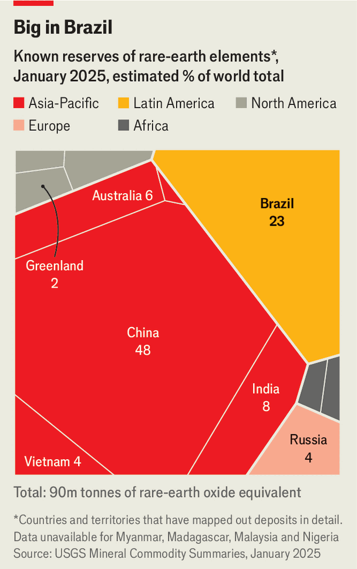
20世纪50年代，巴西企业Orquima曾是全球最大的稀土开采公司，从独居石砂中提取金属。由于对独居石放射性的担忧，巴西大幅收紧监管并国有化Orquima，中国由此在该行业占据主导地位。现代巴西希望重拾这一地位。总统卢拉（Luiz Inácio Lula da Silva，简称卢拉）政府于1月启动了国家稀土战略制定工作。此前11月颁布的法令将稀土获取列为国家安全议题，由此解锁专项融资、政府采购选项及简化进口程序。政界人士有两个动机。其一是推动创新。全球稀土市场年价值仅数十亿美元——相当于巴西数月的铁矿出口收入——因此可获取的收益微乎其微。
CIT Senai ITR（巴西米纳斯吉拉斯州稀土磁体制造商，南美洲首个同类企业）的安德烈·皮门塔表示，稀土的实际价值在于作为高科技制造业的原料。第二个吸引力在于外交层面。主要经济体普遍面临关键矿产短缺，从常见的铜和镍到稀有的钪和钇。美国最为积极。7月，唐纳德·特朗普对巴西大部分进口商品加征50%关税，试图影响前总统雅伊尔·博尔索纳罗因策划政变而受审的案件。然而，同月美国驻巴西大使私下会见矿业公司，表达购买其未来产出的兴趣。卢拉最初表示巴西矿产不对外出售，但随后提出以降低关税为条件，可能达成稀土协议。■
如果美国无意参与，欧盟、日本或韩国可能也会跟进。但前方仍面临诸多挑战。巴西目前仅有一座运营矿山，由名为塞拉维德（Serra Verde）的私营企业于2024年开放。该公司计划将非中国供应的高价值“重稀土”市场供应量翻倍，但已遭遇生产难题。其离子黏土矿藏开采难度更大。美国一家援助机构提供的近5亿美元贷款或可缓解这一问题。然而，仍有数十家矿商仍在等待许可证，其中无一能在2028年前投产。鲜有企业愿在巴西进行稀土加工。■
更令人担忧的是卢拉的保护主义倾向。他在最近的一次演讲中表示：“要么我们利用上帝赐予的这些财富，让它们成为人民的财富，要么我们将再次看到那些老面孔在我们国家挖坑，掠夺我们的矿产。”巴西矿业协会Ibram的Julio Nery认为这种态度是错误的。提升价值链对巴西至关重要，因为该国仍需进口用巴西铁矿石制造的中国钢材。但稀土的前景有限。澳大利亚矿商Viridis的Rafael Moreno指出，多数矿企为外资所有，因为该行业资本密集度远高于巴西市场能够轻易支撑的水平。这也是为何多数矿企不愿在巴西将铁矿石加工成氧化物，以及缺乏相关技术。随着时间推移和资金投入，这些问题可以解决。而资金正在源源不断地到来。■
中国曾长期通过掠夺性定价遏制竞争，通过磁性材料和电动汽车销售弥补损失。特朗普于7月与总部位于加州的MP Materials达成协议，挑战了这一做法。该协议确保MP Materials和加州公司钕镨氧化物的最低价格为每公斤110美元，约为中国的两倍。圣乔治矿业公司（St George Mining）的约翰·普里纳斯（John Prineas）表示，这种价格差异将成为常态，吸引新玩家进入市场。许多新进入者将经历不可避免的整合。资源所在国已找到丰厚回报。■ 注册订阅我们的拉丁美洲专属简报El Boletín，了解塑造这一复杂地区的各种力量。
§019 中国原题：What Xi Jinping’s purge of China’s most senior general reveals · 板块：China · 栏目：中国
在中国军方将领中，有一个人长期似乎能逃过过去两年的大规模清洗。张又侠（Zhang Youxia）不仅是习近平（Xi Jinping）的亲密盟友，还是少数拥有实战经验的军事指挥官之一。他在40年前与越南的冲突中表现出色，这使他在中央军事委员会（CMC）两位副主席中地位尤为突出，而该委员会统率中国武装力量，由习近平领导。
一些分析人士认为张将军是近期部分清洗行动的幕后主使。如今连他本人也遭到了最戏剧性的打击。1月24日，国防部宣布，75岁的张将军与另一位中央军事委员会成员刘振立少将因“涉嫌严重违纪违法”被立案调查。61岁的刘振立少将担任联合参谋部负责人，该部门负责作战、情报和训练事务。他与张将军同为越战老兵，关系密切。国防部未提供更多细节。但次日《解放军报》官方军事报纸的社论指责两人犯有多种罪行，包括助长腐败、削弱战备状态以及损害习近平主席作为总指挥的权威。■
调查行动意味着习近平已通过一次自1971年所谓政变未遂事件以来规模最大的清洗，彻底掏空了其军队领导层。尽管张、刘两位将军尚未被正式从中央军事委员会（CMC）除名，但此类调查通常意味着被拘留，并最终以正式免职告终。2022年成立的中央军事委员会六位将军中，已有三位被免去中共党内及军职。因此，目前负责约200万兵力的中国人民解放军（PLA）的领导机构——中央军事委员会，仅剩两名现役成员：习近平担任主席，解放军纪律检查委员会主任张升民担任副主席（10月晋升为第二副主席）。最新调查行动是迄今为止最明确的证据，表明习近平在将解放军转型为现代化作战力量过程中仍面临的严峻挑战。■
2012年上台后不久，他便开始打击普遍存在的腐败现象，并裁撤数十名高级军官，启动中国人民解放军（PLA）结构的大规模改革。2023年左右，以掌控中国核武库的火箭军为开端的新一轮清洗行动展开，随后蔓延至其他军种及PLA的装备研发与政治部门。然而，腐败问题依然存在，习近平的结构性改革尚未完成。他可能正因张将军未能在2024年之前达成解放军具备攻台能力的既定目标而显露焦躁。另一种可能是，张将军或其家族成员过去曾涉及腐败，尤其在2012至2017年期间，他负责武器研发和采购的腐败高发部门。■
旧指控可能因习近平的调查人员扩大行动或获得张将军被清除后对手（或门生）提供的信息而重提，或新指控浮现。但此次中央军委（CMC）的动荡也可能部分源于习近平对张将军势力扩张的担忧。乔治城大学（Georgetown University）中国问题专家迪恩·怀特（Dennis Wilder）表示，这是自习近平掌权初期以来中国政治最令人震惊的事件。他认为近期多起清洗源于以张将军为首的派系与另一主要在东部地区建功立业的集团之间的竞争，其中部分成员曾在习近平任职期间效力。张将军派系在去年张将军的副手贺维东被清除时占据上风，贺维东当时担任中央军委副主席。■
这使张将军获得了前所未有的权力。但这也可能使他成为习近平主席的潜在威胁。怀特先生（Wilder）称：“张将军是个强硬跋扈的老顽固，虽然他曾与习近平结盟，但他从未是他的下属。”其他几位专家表示，针对这两位将军的最严重官方指控内容，出自军报社论。社论称他们“严重践踏并削弱了中央军委主席负责制”。2014年，习近平引入这一“主席责任制”，以集中军方领导权，确保自己及党的对武装力量的控制。麻省理工学院的弗拉维尔（M. Taylor Fravel）表示：“指控意味着张将军挑战了习近平对解放军的权威，以及他作为总指挥的地位。”
根据詹姆斯敦基金会（Jamestown Foundation）的K. Tristan Tang分析，习近平与张将军可能就解放军能力发展的进程存在分歧。但更严重的指控传闻也浮出水面。《华尔街日报》1月25日报道，张将军被指向美国泄露了中国核武器计划的信息。一些解放军专家对此表示怀疑。尽管如此，大多数观察者都一致认为，官方对清洗事件的解释远未触及真相。张将军与习近平的家族联系可追溯至他们父亲在中国内战期间并肩作战的时期。张将军的父亲后来成为三星级将军，而习近平的父亲则成为文职领导人。■
2017年，习近平通过亲自过问张又侠进入中央政治局（包括党内的20名左右最高领导人）并担任军委副主席，展现出对他的信任。2022年，当习近平第三次当选中共中央总书记时，72岁的张又侠被提拔为高级军委副主席，这在以往的退休规定下本应被排除在外。张又侠在其他方面也格外引人注目。前五角大楼官员、现任职于新加坡南洋理工大学的德鲁·汤普森（Drew Thompson）曾于2012年接待包括张又侠在内的中国军队代表团访问美国一周。“他身上有一种令人信服的气场，”汤普森表示，“其他解放军高级军官和参谋人员都能察觉到这一点，并因此对他表示敬重。”
他一进入房间，众人便迅速挺直腰板。”汤普森先生特别回忆起一次军营参观，当时张又侠将军乐于开枪射击，并向美方军事技术与理论提出问题。“张又侠将军巡视军营、吸收所见所闻，展现出远超同侪的才智。”汤普森先生表示。若张又侠将军如今被正式免职，他将成为习近平主席任内被清除的最高级别现役军官。若他同时失去政治局席位，这将是自1989年解放军平息天安门广场事件以来，首次在同一个五年任期中出现两名政治局成员被清除的情况。■
这将向军队其他成员及文职精英，尤其是被称为“太子党”的革命家族后裔发出强烈信号：与习近平的关联并不能保证庇护。但这也给习近平带来难题：他该选择谁来取代所有被清洗的将军？自掌权以来，习近平试图提拔既政治忠诚又具备领导能力的将领，以推动解放军转型为更灵活高效的部队，能够整合空、陆、海、网络和太空作战能力。他先是清除了前任领导任命的将领，最近又将矛头转向了自己提拔的将领。而剩下的将领中，许多人要么经验不足，要么因与被清除的军方将领有牵连而备受质疑。■
另一个风险是，他提拔的人可能不敢向他提供关于解放军现状的诚实建议。这可能使习近平在考虑是否对台湾采取军事行动时，高估解放军的实力。据一些西方评估，这场动荡也开始影响解放军的作战能力。至少在短期内，这可能降低对台湾发动攻击的可能性。“这必须产生实时作战影响，”另一位前美国中央情报局中国问题分析员克里斯·约翰逊表示。习近平“明知会出现这种情况，但似乎已得出结论，认为冒着暂时脆弱和严重损失的风险，换取解放军达成其作战目标是值得的。”
美国国防部12月发布的年度报告指出，高级解放军军官的撤职导致了组织优先事项的不确定性。但报告同时警告称，若反腐行动能根除腐败根源，解放军或将成为更高效的战斗力量。至少在这一点上，习近平先生希望五角大楼的判断是正确的。■ 订阅者可注册我们的新周刊《鼓楼》，了解世界如何看待中国，以及中国如何看待世界。
§020 中国原题：Xi Jinping is immensely powerful. Why can’t he stamp out corruption? · 板块：China · 栏目：中国
在2022年10月确保获得中共总书记的空前第三任期后，习近平带领高级官员前往党的“红色圣地”进行朝圣。他选择的地点是中国西北部的延安，这里是毛泽东的游击队曾经驻扎的地方。这为习近平未来几年的优先事项提供了线索。他告诉随行人员，延安是党锻造战斗精神并承诺坚持“正确政治方向”的地方。但延安的遗产也充满阴暗面。
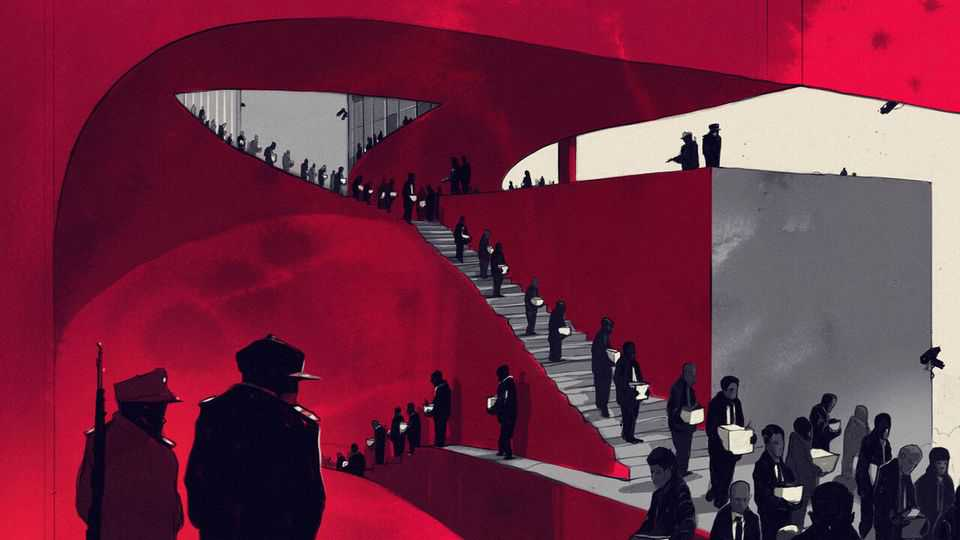
1940年代初，毛泽东在日军和国民党军队的包围下，发动了中共党史上首次大规模“整风”运动，打击异己、巩固权力。这场运动最初以强制学习毛泽东思想开始，却迅速演变为一场病态清洗：在场的4万名革命者中，有1.5万人被定性为叛徒。酷刑屡见不鲜，许多人被处决或被迫自杀。习近平提及“延安精神”时，并非暗示需要重演类似的清洗——毛泽东时期的暴力行径并未出现在官方对延安时期的叙事中。但其意图是呼吁思想纯洁性，包括摒弃腐败和享乐主义行为。自2012年掌权以来，习近平一直在严厉打击腐败，数千名官员被拘押，数百万其他人受到惩处。■
他称此举为“自我革命”，即“向内反腐”。1月24日公布的最新清理对象包括两名高级将领，其中一位是武装部队中最资深的军官张又侠。这些将领是近年来他清理的数十名高级将领之一，导致高层指挥机构出现严重裂痕。习近平在上任初期曾承诺打造一个官员“不敢腐、不能腐、不想腐”的政党。确实，普通民众表示，习近平减少了街头层面的明目张胆的腐败现象。但2025年，当局仍调查了超过100万人涉及腐败和政治纪律问题，创下了习近平执政以来的最高纪录。去年，共有98.3万人受到惩处（见图表1）。调查人数比2024年至少高出15%，比2023年增长60%。■
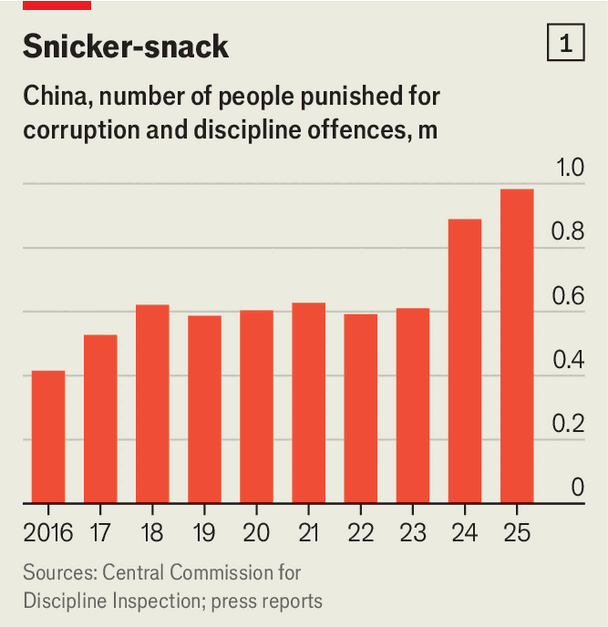
七年前，习近平宣布在反腐斗争中取得“决定性胜利”。但去年一月，他承认党尚未彻底遏制腐败。《人民日报》（People’s Daily）作为党报指出：“即便在高压态势下，仍有人胆敢肆意妄为。”首先看拥有200万兵力的中国人民解放军（PLA），作为武装力量的称谓。解放军是党的军队，习近平担任其总司令。尽管如此，该军种以个人忠诚为基础的严密网络、秘密运作能力以及对庞大资源的控制，传统上使其成为腐败滋生的温床。过去两三年间预算大幅增加，加之装备采购热潮，为腐败提供了新机会。各部队均设有政治委员，负责监督腐败行为，并确保士兵接受习近平思想的灌输。■
但他们的监管存在疏漏。军队中买官卖官的问题依然存在。据《华尔街日报》报道，曾参与张将军调查的高级军官被告知，他涉嫌以巨额贿赂为交换，帮助提拔前国防部长李尚福。李尚福在2023年淡出公众视野后被免职并撤销其将军军衔，这距离他上任仅数月之久。去年，位于柏林的智库MERICS表示，解放军近期的清洗行动表明，习近平在上任初期遏制军队腐败的努力已告失败。“军衔和晋升资格经常被明码标价出售，贿赂现象泛滥成灾，”该智库报告指出。买官卖官现象在文职官员中同样普遍。2024年，国家消防管理局负责人因向下属军官出售职位被判处刑罚。
2016年至2023年间，中国南部北海市一名消防局长通过受贿晋升，累计收受超过130万元人民币（约合18.6万美元）。为筹措资金，一些官员出售采购合同，而消防部门则通过包庇违规建筑来获取回扣。他们常将低级职位出售以筹措购买更高级职位的资金。反腐调查力度持续上升的原因在于，习近平将反腐行动进一步深入基层。目前，针对违纪行为的调查已覆盖各个层级，大量基层官员及普通党员如商人和NGO工作者也被卷入其中。在全部调查案件中，贿赂和行贿犯罪的比例显著上升。■
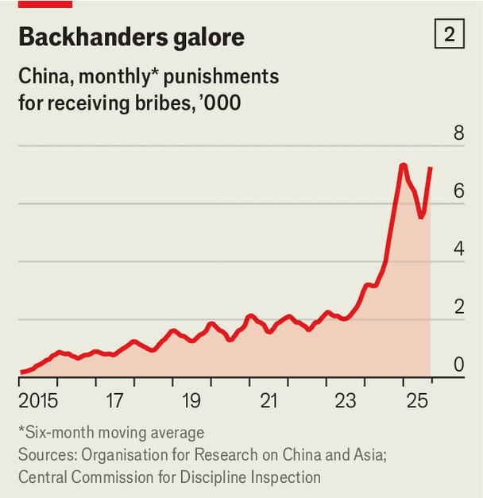
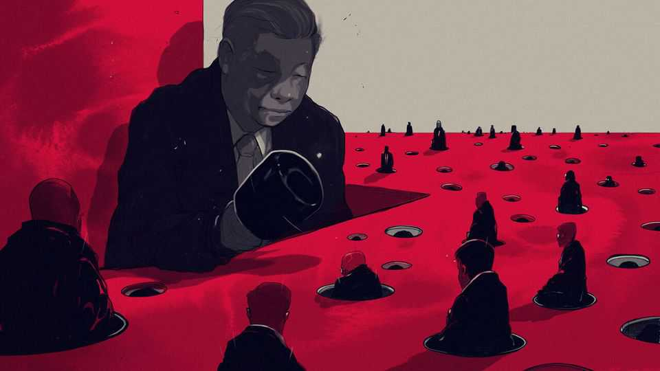
■ 2023年4月至9月期间，平均每月有7,271人因收受或索取现金或其他财物而被处罚（见图表2）。十年前同期，这一数字仅为586人。佐治亚州立大学的安德鲁·韦德曼（Andrew Wedeman）分析指出，自习近平主席掌权以来，到2024年几乎所有因行贿或受贿被处罚的人要么已堕落为腐败分子，要么继续从事不法交易。尽管惩罚措施日益严厉，这一现象仍持续存在。2014年，仅有约30%的案件导致监禁或开除党籍等处罚，意味着被排除在大多数政府职位之外。其余涉案人员需撰写自我批评并接受“教育”。据位于德里的中国与亚洲研究组织（Organisation for Research on China and Asia）统计，如今超过70%的案件最终会受到更严厉的制裁。
2024年，因希望嫌疑人认罪而被无指控拘留的人数激增46%。通常情况下，拘留意味着单独监禁。酷刑现象严重。至少有五位知名企业家在4月至7月被拘留期间自杀，另有其他人死于羁押期间。那么，官员为何甘愿冒此风险？在某些情况下，调查数量的增加与政府在战略领域如芯片和军备采购上的大规模支出有关。例如，2024年反腐警察对制药行业超过6万人进行了纪律处分，因为中国生物科技行业受益于政府支持。不过，布鲁金斯学会（美国智库）的乔纳森·辛兹指出，腐败并非总是出于贪婪。有时则是出于自保。■
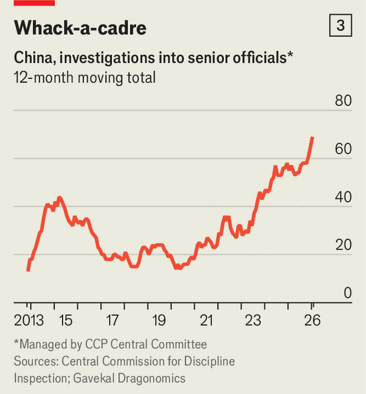
官员们常因接受现金而面临同僚对其“叛徒”身份的怀疑。一位中国学者指出，习近平的反腐运动反而可能加深了某种“小圈子政治”，使官员们更依赖亲密人际关系网络，强化了腐败滋生的非正式氛围。昂贵酒水等礼物是一种“信号”，接收者能立刻明白其中隐含的请求，即使无人明说。官员接受或退还礼物的决定，体现了对赠予者信任程度。他们宁愿选择熟悉的人而非冒险与陌生人合作。习近平将腐败描绘为对党的存在性威胁。■
无论是地方市长未能落实中央指令，还是接受房地产开发商的贿赂，这两种行为都标志着意识形态和道德上的失败，最终是对习近平主席的不忠。在他看来，这类人正是导致苏联解体的罪魁祸首。这段历史始终萦绕在习近平心头。他经常提及苏联的解体。因此，即便面临树敌的风险，他依然坚持己见。去年曾因随意拘押和羁押致死引发网络争议；11月发表的讲话中，习近平批评党内成员称该运动“损害了党的形象”。他强调，所谓“刮骨疗毒”不仅不会损害党的形象和威望，反而会进一步提升。他无疑正期待在手术台上多花些时间。■
订阅者可通过我们的新每周通讯《鼓楼》了解世界如何看待中国——以及中国如何看待世界。■
§021 中国原题：Behind China’s race to build aircraft-carriers · 板块：China · 栏目：中国
圣诞节前夕，五角大楼悄然发布了关于中国武装部队的年度报告。这份基于机密情报评估的公开文件迅速引起了全球军事分析人士的关注。在第16页，他们发现了一个令人震惊的声明：中国计划在2035年前建造六艘新航母。这一预测意味着中国将在同一时期内以超过美国两倍的速度建造航母，而美国计划在同一时期内仅建造三艘。但美国也计划在未来几年内退役三艘航母，这意味着到2035年，美国将拥有11艘这样的航母，而中国则只有9艘。
由于中国很可能将海军力量集中于亚洲，其航母数量将很快超过美国在太平洋的航母数量。仅此一点，便足以在该地区引发重大权力格局变化，因为美国海军第七舰队已主导太平洋海域80余年。美国航母是全球海上霸权的象征。但中国不仅在建造更多航母，还在打造更先进的型号。其最新航母“福建舰”（Fujian）于11月正式服役。这艘新舰（图示）采用电磁弹射系统发射舰载机，而非蒸汽弹射。目前全球仅有两艘配备此类系统的航母，另一艘即美国最新航母“杰拉德·R·福特号”（USS Gerald R. Ford）。此外，中国已在北方港口城市大连启动首艘核动力航母的建造，后续航母很可能也将采用核动力。■
这将使它们的续航能力超越传统动力舰艇。许多专家对中国经济能否充分发挥这些新型舰艇的潜力仍存疑虑。伦敦国王学院的亚莱西奥·帕塔拉诺（Alessio Patalano）表示，要被视为有效的航母，一艘舰艇每天至少需要执行100次起降任务。目前尚不清楚中国航母是否具备这一能力。但另一方面，中国现有航母在其他方面已取得进展。2024年10月，中国海军首次开展双航母协同行动。两艘航母在航行过程中协同作业，使其整体作战效能远超单独行动的两艘航母。同时，它们的作战半径也首次突破了中国本土的范围。■
12月，一艘航母在帕劳（Palau）附近被发现，帕劳是美国盟友组成的“第二岛链”（second island chain）中的一环，这一弧形区域从日本延伸至巴布亚新几内亚。更值得探讨的是，中国为何如此热衷于部署航母舰队？在关于美国航母舰队未来走向的讨论中，一些西方分析人士认为这类舰艇已无未来。他们指出，反舰导弹和无人机战争技术的进步已使航母舰队变得过时。但中国似乎并未理会这些观点。其潜在对手缺乏大量射程较长的反舰导弹，因此这些导弹对中国的航母构成的威胁远小于对美国航母的威胁。此外，多数无人机的射程有限，削弱了其作为反航母武器的效能。然而，在与美国争夺台湾的冲突中，航母可能作用有限。毕竟，台湾距离中国大陆的空军基地仍在有效打击范围内。■
中国的航母计划显然指向更宏大的战略目标。航母在保护中国航运路线和遏制对手海上贸易方面将发挥关键作用，特别是在战争情况下。“这些是用于实现海上控制的投射平台，”美国新安全中心（Centre for a New American Security）智库的托马斯·舒加特（Tom Shugart）表示。中国志在成为海上霸主的野心正愈发清晰。■ 请订阅我们的周报《The War Room》，获取独家国防与国际安全动态。
§022 中国原题：Fears a flood of unemployed workers in rural areas · 板块：China · 栏目：中国
中国正为一年一度的返乡大迁徙做准备，届时数亿人将搭乘汽车、飞机，尤其是火车，返乡与家人团聚。这是个充满欢乐的时刻。然而今年，人们担心那些通常在城市工作的农村居民，可能因工作机会减少而选择留在家乡。尤其是建筑工地和工厂等传统就业领域，岗位正变得愈发稀缺。11月，中国农村事务部发出警告，称政府必须“防止大规模”农民工滞留家乡的问题。
官员们直言不讳地表达担忧实属罕见，因此该部门的声明引发了轩然大波。为了解实际情况，查官近日前往几个传统上是外出务工人员主要来源的地区。政府的担忧似乎被夸大了。总体而言，就业和机会将促使大多数务工人员在新年之后返回城市。但人们的观念正在发生变化，这将给追求经济增长的官员带来困扰。春节假期恰好落在二月中旬。但返乡潮即将到来的迹象已经显现。在一个阳光明媚却寒冷的下午，赵先生站在火车站前，手里提着一个装满物品的行李箱和一个白色的工具桶。他过去十个月一直在南京从事铺瓷砖工作。
这位瘦削的60岁老人解释了他为何在假期开始前一个月就踏上归途。"已经没有工作可做了，"他说。他叹息着讲述自己的月收入从几年前的约9000元（1290美元）降至如今的5000元。不过假期过后他仍计划返回南京。他提前返乡看似寻常，但2008年全球金融危机重创中国出口产业时，大量农民工曾集体返乡。乡村成为缓冲地带：工人虽缺乏社会保障，却能耕种小块农田，待经济复苏。这次情况存在关键差异。当前的经济下行趋势显得更为持久。■
房地产市场疲软迹象料将延续，削弱了此前吸纳大量农民工的建筑行业就业机会。与此同时，农村地区已不再能作为缓冲。像赵先生这样的许多农村居民已放弃土地使用权，转而将土地承包经营权租赁给留守的他人。2008年时，不足10%的农村家庭已将土地承包经营权流转出去，如今这一比例已接近40%。新冠疫情初期，限制流动的防疫措施暴露出滞留农村的风险——当时许多农民工被滞留在家乡数月，几乎无事可做。赵先生村庄不远处的周口市，是一座中等规模城市。在一家购物中心内，政府设立了就业服务中心，帮助人们寻找本地工作。■
一位女士在办公桌前表示，过去一个月回家的人数激增，因为沿海地区的出口工厂提前关闭。她说她能帮他们找到临时的快递司机工作，但仅此而已。其他地区的情况则略显乐观。中央政府希望各地城镇发展本地产业，并鼓励部分外出务工人员返乡——尤其是那些具备技能和资本、能够创办本地企业的人。在邻省湖北，这一趋势正在发生。居民过去常涌向中国南方的服装和鞋厂工作。但近年来，企业开始在湖北的天门镇等地设厂，直接利用当地劳动力。那里的高速公路上布满了新工厂和员工宿舍。
考虑到这些发展，你或许会认为像天门这样的地方会迎来大量返乡者。但地方经济只能吸纳一定数量的人口。事实上，返乡人数越多，这些地方的工资面临下行压力。四十多岁的黄先生从南方返回天门，陪伴儿子备战高考。然而他的妻子仍留在南方城市广州。“这里能找到工作，但收入比广州低，也比往年低。”他说。中国经济增长放缓因此给农民工带来了陌生的困境。过去迁往沿海大城市的就业机会多、收入高，如今情况已大不相同。■
对年轻一代而言，其他因素也起着重要作用，特别是他们逐渐意识到生活不止于工作。越来越多的年轻人选择留在家乡。中国约1.8亿农村人口中，有47%在2014年跨省务工，如今十年过去，这一比例已降至38%。在周口市就业服务中心附近，一位面色红润的何高强（He Gaoqiang）正等待妻子和女儿从商店出来。作为技术娴熟的维修工，他本可在更大城市找到更高薪的工作。但女儿出生后，他选择回到周口，也不愿步父亲的后尘——父亲曾数十年在外做建筑工人，只在春节返乡。他说：“和家人在一起感觉很对。”对他而言，留在小城镇并非问题，反而是他想要的生活。■
对于依赖勤劳移民推动中国经济发展的国家规划者而言，这是一股新趋势，但并非完全受欢迎：人们开始安于定居。■ Subscribers to The Economist can sign up to our Opinion newsletter , which brings together the best of our leaders, columns, guest essays and reader correspondence.
§023 中国原题：Is at China’s mercy to get crucial raw materials · 板块：China · 栏目：中国
欧洲 | 稀缺，但未见成效 欧洲不自觉地陷入各种依赖，从美国的数字服务到俄罗斯的能源。其对中国稀土的依赖——这种资源在电动汽车、风力涡轮机乃至战斗机等众多领域都不可或缺——或许是最难摆脱的。当中国去年开始限制出口时，欧洲制造商陷入恐慌。全球稀土争夺战随之爆发，欧盟的规则导向与美国的强硬手段展开较量。2月4日，美国将在华盛顿举办关键矿物峰会，届时将欢迎各国参与。欧洲又能带来什么？ ■
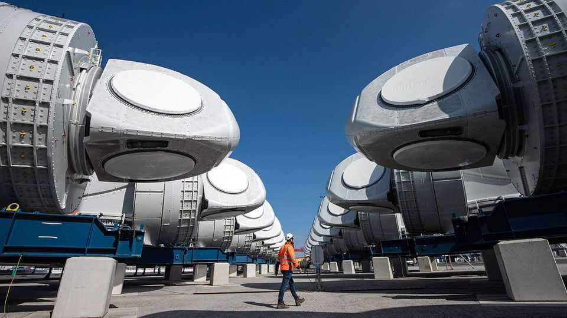
中国在稀土供应链上的主导地位建立在其对稀土供应的近垄断。中国开采了70%的稀土矿石，提炼出超过90%的稀土材料，并制造了九成的稀土磁体。该国已将行业整合至少数几家国家龙头企业，并建立了追踪系统以追踪每吨稀土的流向。美国需要稀土来制造激光器和飞机，但欧洲的依赖程度更高。欧洲拥有更少可开采的稀土矿藏，且关键材料进口量仅次于日本（见图表1）。以重工业为主的德国是永久磁体的最大进口国（见图表2）。“这构成的并非远期风险，而是一个不可接受的风险，”一位欧洲官员表示。当美国去年夏天试图收紧对华高科技出口管制时，它邀请了欧洲企业，尤其是全球领先的芯片制造设备生产商阿斯麦（ASML）参与。■
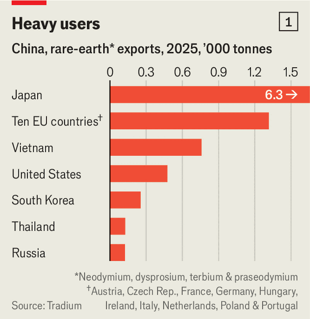
中国随即限制了稀土出口。此后，欧洲企业不得不向中国透露商业机密以申请许可证。欧盟安全研究所（位于巴黎的智库）的乔里斯·特尔（Joris Teer）认为：“2025年，中国意识到可以以极低成本扰乱欧洲工业。”10月，中美两国达成12个月的停火协议，中国稀土出口恢复，但这种局面可能不会持续。1月，中国再次因领导人有关台湾的言论收紧对日本的稀土出口。争夺替代稀土供应的竞赛日趋激烈。美国正超越各方，向项目和东道国大量投入资金。其看似杂乱的试错策略在欧洲人眼中显得混乱，实则由前黄金矿工大卫·科普利（David Copley）主导，他现任职于美国国家安全委员会。■
据咨询公司“Project Blue”列出的2025-26年十项政府支持项目中，美国资助了其中四项，欧洲仅资助一项：位于法国西南部的炼油与回收工厂“Carester”。美国已与澳大利亚、马来西亚和沙特阿拉伯等国签署了多项投资协议以推进相关项目。相比之下，欧洲正在推进的项目，多数位于非洲，据行业专家表示，“这些项目几年前不会被视作一级优先项目”。欧洲还落后于日本，日本早在2010年中国限制其稀土进口后便已率先行动，至今已领先15年。日本现已建立单一高效的矿物采购机构，与企业保持稳定对话，并拥有成熟的国内磁性材料产业以处理进口原料。而欧盟27国的技术官僚仍在努力追赶市场现实。■
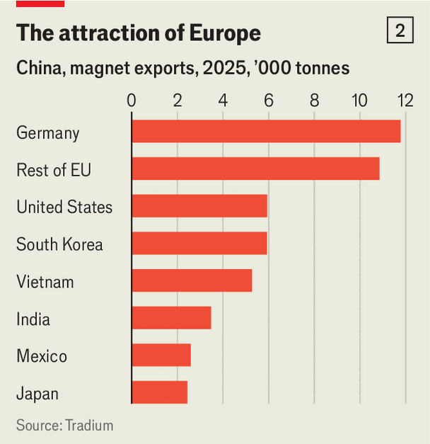
一位南半球活跃稀土矿的赞助商表示，他与欧盟委员会官员的几次通话涉及了二十余人，“其中没有人拥有暗示其商业背景的头衔”。12月3日，欧盟公布了ResourceEU战略，旨在协调成员国努力并推动联合采购与储备。即将于今年设立的欧洲关键原材料中心（模式参考日本同类机构）将作为该行动的战略总部。但资金紧张。欧盟正筹措30亿欧元（36亿美元）用于供应链投资及回收其认定的34种关键矿产。其中仅两种属于稀土（轻稀土和重稀土）。首个获得资金支持的项目位于格陵兰。■
德国本国的资源投资基金将仅支持三个项目，其中之一是澳大利亚一家总部位于珀斯（Perth）公司拥有的稀土矿和冶炼厂。美国做法的批评者认为这将扭曲市场并浪费大量资金。因此特朗普政府希望联合G7国家组建买家俱乐部，包括设置价格下限，以防止中国竞争对手通过压低价格让新项目破产。欧洲也认识到需求端支持的必要性，但可能不愿加入美国的方案。欧盟或许能凭借自身作为大型、竞争性市场且规则稳定的长处发挥作用。数据公司Benchmark Minerals预计，到2030年，欧洲对关键稀土氧化物的需求可能达到美国的两到三倍，具体取决于元素种类；五分之一的磁体也将流向欧洲。■
行业需从中国以外地区采购的原材料目标，结合欧盟整体采购计划和战略储备，将为下一波项目创造具有竞争力的价格保障性需求。加拿大Neo Performance Materials公司（Neo Performance Materials）首席执行官瓦西利奥斯·Tsianos（Vasileios Tsianos）表示：“欧盟正试图修复市场失灵而不引发新的问题。”欧洲另一优势在于，与美国和中国倾向于要求投资方提供政治让步不同，欧洲人只需材料。欧洲项目通常比中国项目更倾向于将合同授予本地企业，并增加援助以惠及民众。除少数民粹主义产业政策人士外，多数欧洲政府乐于支持原材料产业在海外发展，只要欧洲能确保获得产出。■
欧盟近期达成的自由贸易协议，通过降低加工材料关税，契合这一战略。欧洲正在打持久战，但必须加快步伐并承诺投入更多资金。一种稀土元素铕（Eu）用于制造明亮的红色灯光，如警报信号。若中国再次封锁出口，欧洲可能需要这些资源。■ 要及时掌握欧洲重大新闻，请订阅我们的周度会员专属简报《Café Europa》。
§024 美国原题：Inside the movement challenging—and disrupting—ICE · 板块：United States · 栏目：美国
上午10点，北密尔沃基市，民权律师兼社交媒体活跃分子威利·斯坦奇尔（Will Stancil）正参与一场车追。他与两名乘客紧追一辆黑色政府SUV，车内坐满联邦警察。近40分钟里，这些被推测为来自移民与海关执法局（ICE）的警察在安静的住宅区不断绕行，闯红灯、急转弯，驾驶行为异常。"我有点兴奋，"斯坦奇尔说道。
他坦言自己并不担心，因为看起来警方可能即将出动并与他的团队（记者本人正随行其中）正面交锋。“他们能拿我怎么办？把我抓起来送去惠普尔？我不在乎。”（惠普尔是位于明尼阿波利斯-圣保罗机场附近的联邦建筑和拘留中心。）随着追逐持续，斯坦奇的车辆可能即将耗尽燃油。他和其他车内的活动人士不断致电同僚，试图召集更多车辆跟进。实时音频调度员的声音通过Signal应用传来，斯坦奇一边在手机上接收信息，一边像警察一样报告自己的行进路线和交叉街道，不断变道跟随前方车辆。与此同时，其他地区的ICE车辆动态也在通过Signal群组不断传来，活动人士们则在不同群组间频繁切换。■
过去数周，这种激进抗议活动已演变为一场大规模现象。其目的是监督并干扰“地铁行动”（Operation Metro Surge），即明尼苏达州的移民执法行动。对移民和市民被拖出车、喷辣椒水和殴打的场景感到愤怒，明尼阿波利斯市民纷纷参与。数千人加入Signal群组追踪联邦特工，数百人每天花时间追踪武装的蒙面人。这种抗议方式最初在洛杉矶出现，去年在芝加哥得到完善，如今在明尼阿波利斯达到顶峰。它标志着抗议特朗普政府的策略正从集会和选战组织转向直接行动。■
这正成为美国自民权运动以来最重要的公民不服从行动之一。悲剧将明尼阿波利斯的局势转变为对特朗普的挫折。美国移民与海关执法局（ICE）和海关与边境保护局（CBP）的执法人员分别于1月7日和1月24日杀害了两名活动人士——37岁的瑞妮·古德（Renee Good）和亚历克斯·普雷蒂（Alex Pretti）。这两起杀人案似乎很难找到正当理由。古德女士和普雷蒂先生当时正在观察联邦执法人员，随后遭到殴打。两名活动人士及恰好在场的路人拍摄的事件视频震惊了全美乃至全球的观众。在两起事件中，特朗普政府官员最初都急于谴责受害者，称其为“国内恐怖分子”。■
他们的指控称格蕾特·古德试图撞倒一名特工，而普雷蒂则意图实施“大屠杀”，但现有证据驳斥了这些说法。古德当时正背对乔纳森·罗斯（射杀她的警官），以缓慢速度后退。普雷蒂虽持有合法枪支，但被射杀时已遭解除武装。当他在地面倒下后，特工们仍持续向他身体开火。1月26日，随着关于枪击事件的质疑甚至在许多共和党人中扩散，特朗普将边境巡逻队高级官员格雷格·博维诺及其至少部分下属从城市调离。博维诺本人热衷于亲自投掷催泪弹，已成为明尼阿波利斯镇压行动的最显著面孔。■
特朗普还与明尼苏达州州长蒂姆·沃尔兹（Tim Walz）及明尼阿波利斯市长雅各布·弗里（Jacob Frey）进行了沟通，并据称向他们表示将采取降温措施。这对活动人士而言是一次显著的胜利，尽管可能仅是有限且暂时性的成果。目前推动这一行动的主力是左翼白人群体，其中许多是年长女性。美国大学（American University）的研究学者达娜·费舍尔（Dana Fisher）与阿曼·阿泽迪（Arman Arzedi）对参与“自由美国罢课游行”（Free America Walkout）全国抗议活动的约7500名签署者进行了调查。该调查存在自我选择偏差，可能夸大了结果，例如年长者更可能花时间参与调查。研究显示，84%的受访者为女性，四分之三拥有大学学历，中位年龄为71岁（见图表）。
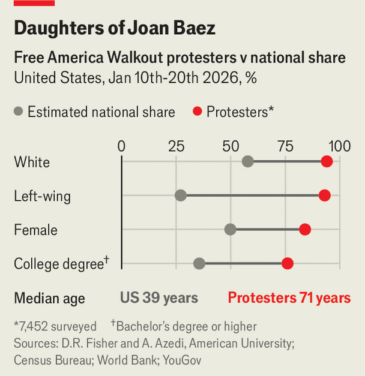
约99%的受访者（大多是年长的婴儿潮一代）表示支持非暴力公民不服从，其中65%的人表示愿意亲自参与。费舍尔博士称这种现象为“参与阶梯”，反映出人们对更激烈抗议活动的潜在需求。在明尼阿波利斯市，中年调酒师朱莉·甘纳（Julie Gann）就是日益活跃的代表之一。她工作的地方正是普雷蒂（Mr Pretti）遇害的地点。在联邦特工抵达之前，她参加过的唯一一次抗议活动是2017年特朗普总统首个任期开始时的妇女游行。最近她参加了一个在线培训课程，与约5000名活动人士一起为更危险的工作做准备。她说：“和平示威的效果不如非暴力扰乱。”共和党人对像甘纳这样的女性有个贬义绰号：AFFWULs（富裕白人女性城市自由派）。■
他们的行动已超越单纯的“通勤”。一些激进活动人士开始为无证移民送餐，并接送其公民子女上学。其他人则组织封锁和静坐示威。1月23日，约100名神职人员（主要来自自由派教会）在明尼阿波利斯机场入口处实施封锁，直至被当地警方拖离并逮捕。传统抗议活动也持续存在——但这些行动并非没有风险。在惠普尔大楼外，退休教师蒂姆·伦德尔（Tim Lundell）表示，自格蕾塔·古德（Ms Good）遇害以来，他已八次参与抗议活动，曾两次被联邦特工发射胡椒弹击中。这反而让他更加坚定。抗议能带来什么？尽管博维诺（Mr Bovino）已被撤职，但联邦政府是否正在撤退，以及持续多久，仍不明确。■
1月27日，特朗普称普雷蒂的死讯“非常令人痛心”，但指责其携带枪支。他称自己所作的改变并非“后退”，再次将抗议者称为“付费煽动者”和“叛乱者”。他承诺展开调查，但看来国土安全部（DHS）将自行调查，而非联邦调查局（FBI）或其他外部机构。射杀普雷蒂的海关与边境保护局（CBP）特工仍未被确认身份，但涉案人员已被暂停职务。目前，“地铁行动突袭”（Operation Metro Surge）仍在继续，似乎如常推进。记者的追逐事件发生于特朗普上述言论不足24小时后。前一天，至少有一名移民与海关执法局（ICE）巡查员被推下自行车，遭殴打后被带走至惠普尔大楼（Whipple building）。单词“殉道者”（martyr）的词源可追溯至古希腊语，意为“见证者”。■
令人担忧的是，除非国会或法院限制特朗普的移民官员，恐怕还会出现更多像Good女士和Pretti先生这样的案例。■ 通过我们的每日简报《美国简报》（The US in brief），快速分析最重要的政治新闻，以及每周专栏《制衡》（Checks and Balance），深入探讨美国民主的现状及选民关心的问题。
§025 美国原题：Republicans are waking up to the awful optics in Minneapolis · 板块：United States · 栏目：美国
过去一年，民主党在华盛顿的处境如同在“噪音示威”中敲打锅碗瓢盆的抗议者：喧闹、正义却大多无济于事。完全被排除在权力之外，他们只能眼睁睁看着共和党人让唐纳德·特朗普夺走国会曾掌握的权力。民主党唯一能使用的筹码是阻止政府拨款，他们在10月曾尝试过这一手段，如今又将在1月30日预算截止日期临近时再度使用，这次的抗议对象是总统对明尼阿波利斯的围攻。
如今，就连一些共和党人也开始承认，美国的移民政策收紧已严重失当，这起联邦执法人员枪杀两名公民的事件引发了广泛反思。这种情绪转变的一个原因似乎在于白宫对亚历克斯·普雷蒂（Alex Pretti）的迅速定性。这位于1月24日遭枪杀的抗议者被白宫顾问史蒂芬·米勒（Stephen Miller）称为“潜在刺客”和“国内恐怖分子”。但共和党人也能看到视频，这些视频清楚地显示了事实并非如此。白宫将普雷蒂合法持枪的行为妖魔化，这让枪支权利团体感到不满。一些团体要求展开公正调查。就连马加（MAGA）的坚定支持者、俄克拉荷马州州长凯文·斯蒂特（Kevin Stitt）——同时也是全国州长协会主席——也表示总统“正在听取错误建议”，并质疑：“最终目标是什么？”这种情绪转变的另一个解释则来自民调数据。■
特朗普的遣返行动正日益成为一项政治负担。五分之三的美国人表示移民官员的执法手段过于强硬。更多人希望废除移民与海关执法局（ICE）而非保留它。就连共和党选民中，支持这一左翼极端主张的人数也有所上升。如今近五分之一的美国人支持该主张，较六月上升了10个百分点。这表明特朗普承诺发起美国历史上最大规模遣返行动所面临的不可避免的矛盾。强硬派如米勒设想的遣返计划——即大规模无差别驱逐——既不体面也不受欢迎。该计划要求拘留守法移民，并制造如此多的恐惧，使人们“自首遣返”。■
Third Way智库分析师莎拉·皮尔斯（Sarah Pierce）表示，同行移民观察者们的核心问题是：迈克尔·米勒（Mr Miller）的政策理念是否能在本届政府中经受住负面民调的考验。目前，他的上司似乎对数据较为敏感。他已召回了竞选团队中强硬派代表格雷戈里·博维诺（Gregory Bovino），转而由主张更精准施策的汤姆·霍曼（Tom Homan）接掌。两位共和党参议员托姆·蒂利斯（Thom Tillis）和丽莎·默克罗基（Lisa Murkowski）已呼吁国土安全部（DHS）部长克里斯蒂·诺姆（Kristi Noem）辞职。与此同时，联邦政府正面临1月30日部分停摆的风险，届时包括DHS在内的六家机构资金将耗尽。民主党则要求任何立法中都应包含对移民与海关执法局（ICE）的限制措施。■
他们仅有的筹码在于参议院，那里若能组建起全体共和党议员的统一战线，仍需七名民主党人方能突破阻挠议事（filibuster）程序。共和党人可通过将国土安全部（DHS）资金与其余五个部门的拨款脱钩，以削弱政府停摆的影响；但鉴于众议院直至2月2日才恢复会议，他们表示最早也得下周才能实施此举措。民主党人则希望设立多项限制措施。其中之一是确保联邦政府配合地方调查机构对移民与海关执法局（ICE）不当行为的调查；另一项是提升执法人员的培训水平，并强制要求其佩戴执法记录仪；还有一项是推动实施“比文斯修正案”，扩大原告对侵犯宪法权利的联邦官员提起诉讼的范围。数十年前，在“比文斯诉六名匿名特工案”（Bivens v Six Unknown Named Agents）中，最高法院确立了这一权利，却在后续判例中逐步削弱了其适用范围。■
然而，这场斗争远不止于具体让步的争执。民主党人并不希望资助一个已经失控的机构，更不会给它更多资金。事实上，美国移民与海关执法局（ICE）在特朗普的《大美法案》中获得了巨额资金注入，足以支撑其未来三年的运作，美国进步中心（Centre for American Progress）的鲍比·科甘（Bobby Kogan）表示。海关与边境保护局（Customs and Border Protection）的资金则足够维持九到十一个月。因此，共和党人可以无视民主党，等待政府停摆结束而不会影响到ICE的运作。他们在去年秋季的停摆期间就采取了这种策略，最终民主党人也妥协了。如果共和党人这次让步，那将是因为舆论压力迫使他们不得不如此。■
保持对美国政治的了解，订阅我们的《美国简报》，这是一份每日简报，提供对最重要政治新闻的快速分析；以及《制衡简报》，每周发布，深入探讨美国民主现状及选民关注的核心议题。■
§026 美国原题：How Congress viewed Donald Trump’s Greenland grab · 板块：United States · 栏目：美国
特朗普试图吞并丹麦主权领土格陵兰岛的行动暂告一段落。1月28日，美、丹、格陵兰官员举行会谈，讨论特朗普在达沃斯宣布的所谓“框架协议”。但该协议具体内容仍不明朗。达沃斯会谈后，有传言称美国可能在格陵兰岛获得所谓主权基地区，包括皮图菲克太空基地等美国领土。但哥本哈根和努克的官员重申，主权问题不在讨论范围内。
■
1月29日发表的一篇社论中，特朗普的格陵兰特使杰夫·兰德里（Jeff Landry）坚称，正在讨论的协议“将使美国获得对岛屿的完全、无限制访问权”。这远未达到特朗普公开要求“收购”格陵兰的诉求。这或许表明谈判重点转向了1951年与丹麦签署的条约修订，该条约规范美国在岛上的存在。丹麦首相梅特·弗雷德里克森（Mette Frederiksen）在巴黎访问法国总统埃马纽埃尔·马克龙（Emmanuel Macron）时表示：“我认为欧洲在过去几周内已吸取了一些教训。”其中之一是特朗普可以通过立场坚定加以遏制。马克龙宣布派驻格陵兰的新法国外交官，并用格陵兰语（岛上因纽特人的语言）发表讲话。但欧洲人不应过于积极。■
他们的美国盟友威胁北约领土这一事实本身就令人震惊。国会多数共和党人面对特朗普的强硬态度表现出的被动反应同样引人注目。美国建国者赋予国会宣战权，但随着时间推移，立法机构已将这一权力让渡给总统。1973年通过的战争权力法案（War Powers Act）旨在限制总统的战争能力，尽管当时理查德·尼克松曾否决该法案，但该法案从未真正约束过总统。特朗普则提供了最新例证。过去一年中，他轰炸也门和伊朗，打击索马里、叙利亚和尼日利亚的疑似恐怖分子，击毙海上贩毒集团成员，逮捕委内瑞拉独裁者尼古拉斯·马杜罗，并威胁哥伦比亚和墨西哥。整个过程中，他始终无视国会零星的反对声音。■
共和党政客深知，招惹总统的怒火是危及职业生涯的行为，鉴于党内MAGA支持者群体的忠诚度以及在初选中被踢出局的风险。那些敢于发声的政客，要么是少数幸存的独立派，要么是那些在宣布即将退出国会后已无太多可失去的人。格陵兰事件的发展模式恰好印证了这一现象。一位幕僚指出，国会内的共和党人可大致分为三类。其中一部分人公开支持总统的新帝国主义行动，如参议员特德·克鲁兹（Ted Cruz），他正寻求总统职位。少数人则明确反对，例如众议员唐·布экон（Don Bacon），他警告特朗普可能再次面临弹劾。多数人虽私下反对总统的决策，但惧怕触怒他，或认为私下游说更有效。
特朗普对党内主导地位再次得到印证，因为旨在阻止在国会批准的情况下对伊朗和委内瑞拉采取进一步军事行动的连续法案均遭否决。1月8日，五位共和党参议员投票推进一项针对委内瑞拉的战争权力决议。愤怒的特朗普宣称他们“永远不应再次当选公职”。一周后，其中两人撤回支持；副总统J.D. 弗兰斯投下决定性一票后，该决议未能通过。众议院类似法案在投票平局后也遭否决。格陵兰危机至少已有所缓和。美国国务卿马可·鲁比奥表示，1月28日美丹工作组会议将是一项“常规程序”——并将其排除在公众视线之外。■
丹麦外交大臣拉尔斯·洛克·拉斯穆森表示，他比一周前“略微更加乐观”。“现在我们重回正轨。”目前如此。■ 关注美国政治动态，敬请订阅我们的每日简报《The US in brief》，该简报提供对最重要政治新闻的快速分析，以及每周专栏《Checks and Balance》，深入探讨美国民主现状及选民关切议题。
§027 美国原题：Knocking down social housing helped poor children prosper · 板块：United States · 栏目：美国
现代联排住宅沿费城西区莱克斯街（Lex Street）绵延排列，白色门廊上悬挂着风铃，整洁的郊区氛围与数十年前形成鲜明对比。2000年，该街区曾发生费城历史上最严重的集体枪击案之一，一栋破旧联排住宅内七人遇害。社区组织者卡桑德拉·格林（Cassandra Green）回忆称，当时这里“地盘争夺和帮派战争频发”。为遏制衰败，该社区大部分区域被拆除，包括三座17层的公共住房塔楼。取而代之的是600多套住宅。■
尽管大部分房屋为公屋，但部分被出售或出租给低收入租户。格林女士称，此次重建工作取得了成功。她说：“居民们曾在那儿抚养孩子，如今又在那儿抚养孙辈，这堪称绝佳的模式。”一项新研究支持她的观点。该研究由哈佛大学经济学家、不平等研究先驱拉吉·切蒂领导，聚焦千禧年之际启动的HOPE VI公共住房重建计划。该计划通过投入170亿美元的公私资金，拆除破旧的高层建筑，改建成混合市场租金与公共住房的住宅，重塑了包括莱克斯街在内的多个社区。这是美国历史上最雄心勃勃的高贫困率社区改造行动之一。
尽管该计划并未显著改变成年人的经济结果，但新研究发现，那些从出生起就生活在新公共住房中的儿童，长大后收入将高出约50%，这主要归因于与更富裕邻居的互动。研究者得出结论称，这些改善“真正源于地点的因果效应”，正如论文合著者马修·斯塔格（Matthew Staiger）所言。这种影响源于与更富裕家庭的互动，这些家庭通过自身行为提升了邻近低收入家庭的经济流动性。HOPE VI计划的规模在今天很难想象。从1993年至2010年，近10万套公共住房被拆除并替换为规模较小的住房。其中仅三分之二被新的公共住房取代，其余为可负担住房和市场价住房。■
尽管这一政策使霍普六号计划（HOPE VI）面临“城市更新”（gentrification）的指控，但其促成的社区混居现象，据新研究称，对贫困儿童产生了最显著的积极影响。虽然霍普六号区域成年人的平均收入大幅上升，但这是新迁入者带来的结果——他们能负担得起替代性住房，而仍居住在公共住房中的居民收入保持不变（见图表1）。但霍普六号计划的儿童却展现出显著差异：那些搬入翻新公共住房的儿童，30岁时收入高出16%（见图表2），上大学的可能性高出17%，其中男性入狱或服刑的可能性比未搬迁儿童低20%（女性从未特别容易被监禁）。与从未搬迁至霍普六号区域的家庭相比，甚至在兄弟姐妹中，若其中一人在更新区域居住时间更长，差异也十分明显。
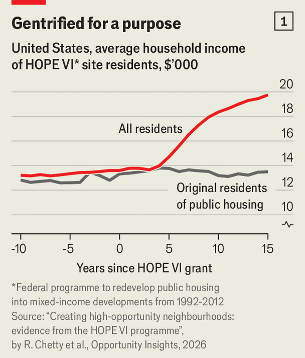
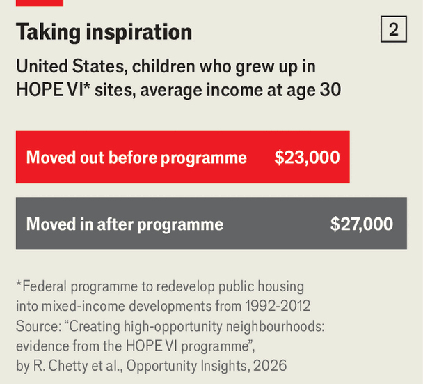
这些发现建立在奇蒂先生此前的研究基础之上。他率先开展关于人际关系对经济流动影响的研究，证明与富裕家庭互动能够提升贫困儿童的人生机遇，通过提供更好的机会和榜样。这种互动不仅限于新搬入的邻居，还包括翻新后与周边家庭更频繁互动的群体。该研究为"HOPE VI项目驱逐原住民"的批评提供了新视角。仅有约四分之一的原住家庭选择迁回新开发社区。但若没有富裕邻居的陪伴，最贫困儿童的某些进步将难以实现。其他研究也表明，由于这些社区原本条件恶劣，许多儿童实际上因搬迁而受益。这些发现是否会被付诸实践，仍是另一个问题。
如今许多贫困地区与最初选址的孤立和破败状况并无二致，但住房规划者的雄心却已大不如前。凯文·科里nton指出，美国企业研究所（智库）的研究显示，绝大多数贫困人口并不居住在公共住房中。他指出，住房去监管化和择校政策是更具可扩展性的替代方案，它们利用与切蒂研究中发现的相同机制。切蒂表示，近年来美国人比父母过得更好的可能性已明显放缓。儿童成长环境对个人发展的影响如此显著，这为人们带来了一些希望。“你无需回溯到1950年寻找人们拥有蓬勃发展的机会，只需向前看几英里即可。”他说。■
关注美国政治动态，订阅《The US in brief》，获取每日简报，快速分析最重要的政治新闻；以及《Checks and Balance》，每周简报深入探讨美国民主状况与影响选民的关键议题。■
§028 美国原题：Republican states are censoring universities · 板块：United States · 栏目：美国
柏拉图并非自由表达的倡导者。他主张国家应审查诗歌，因其以艺术追求掩盖真理。两千年后，美国最大高校却选择禁止学生阅读其著作。1月，得克萨斯A&M大学管理人员告知马丁·佩特森，他要么从初级哲学课程大纲中删除柏拉图的《会饮篇》，要么被调职。校方认为，阅读柏拉图的作品会让学生接触德州禁止讨论的议题：性别与种族意识形态。
■
九月，一名教授因在课程中讨论性别流动性，其视频被奥斯汀政界人士关注，最终被解雇。深知自己可能遭遇类似命运的彼得森教授，主动放弃教授柏拉图的课程，第二周学期开始时，他身着深棕色粗花呢夹克，开始讲授功利主义。在拥有8万名学生的广阔校园中，教职员工们忧心忡忡。据称有约200门课程正被校方审查，因其内容涉嫌违规。一门名为“伦理与公共政策”的硕士课程在开课首周即被取消，原因是其黑人教授拒绝向校务长透露具体哪几天会讨论种族议题。在德克萨斯大学奥斯汀分校——该州的旗舰大学——一项调查显示，40%的教职员工表示去年秋季调整了课程内容。■
9月，该校教授委员会被解散。该委员会是教授选举产生的机构，曾为校方就课程设置和政策提供建议。如今，大学民主党——一个学生社团——要经过层层审批才能邀请外部演讲者，其成员每次开会前都必须阅读免责声明，说明他们的观点不代表学校立场。“我们正在被监控，”该校学生会主席阿莉·弗洛雷斯说。她现在将律师设为速拨号码，经常向其寻求建议。德克萨斯A&M大学和得克萨斯大学的这种寒意，反映了共和党执政州推动立法规范教学内容、惩罚持有被禁止观点的教授和学生的趋势。这场运动呼应了唐纳德·特朗普对常春藤联盟大学的抨击，但其引发的公众关注较少，却影响了更多学生。■
管理者正试图通过新州法合规，布兰登·克里顿（Brandon Creighton）——前得克萨斯州参议员，曾主导过去两届立法会最全面的高等教育法案，最近被任命为德克萨斯理工大学校长——表示，这些改革旨在遏制“觉醒主义”并推动高校提供有助于毕业生获得高薪工作的学位。“这是一揽子方案：去除多元、公平与包容政策（DEI），修订终身教职制度，改革治理结构，并对课程进行全面审查。”他说道。非营利组织PEN America最新报告指出，去年有32个州立法者提交了93项限制高等教育的法案，其中21项已通过，使超过半数美国大学生面临此类政策。法院已驳回部分明显违宪的规则。■
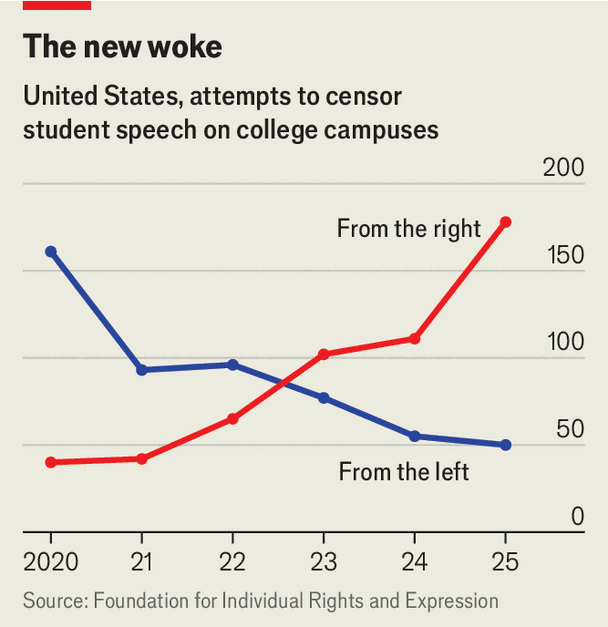
美国联邦法官阻止德克萨斯州一项禁止校园内晚间10点至清晨8点“表达活动”的法律——例如深夜新闻报道和清晨礼拜等——并提醒该州“第一修正案没有宵禁时间”。言论自由基金会（FIRE）收集的数据表明，全国范围内涉及学生言论被调查、审查或惩罚的案例数达到历史新高。这些数据揭示出显著的政治转向。2020年，即黑人生命至上抗议运动的“觉醒”高峰年，记录在案的事件中绝大多数涉及左翼试图限制右翼言论。而到2025年，情况完全相反（见图表）。“审查者改变了，但冲动没变。”FIRE研究员洛根·多格蒂说道。■
美国企业研究院（American Enterprise Institute）的弗雷德里克·赫斯（Frederick Hess）表示，主张改革美国大学体系的体制内共和党人已被激进派挤压，而激进派现在又在过度纠正。议员转任校长的克里根（Mr. Creighton）则持不同看法。他认为至少在德克萨斯州，公立大学正开始逐步回归中间路线，这些大学应被视为“州政府的延伸”。在德克萨斯州大学城（College Station），佩特森（Mr. Peterson）正与不满媒体对德克萨斯A&M大学课程争议过度关注的校方管理人员会面。他担心如果继续发声，可能会失去工作，但作为校内学术自由委员会主席，他决定必须以功利主义态度行事。“我感到有道德义务这么做，即使这会给我带来灾难性后果，”他说。■
到了三月，他将不再教授柏拉图单元，取而代之的是开设一个两节课系列，探讨言论自由的价值。■ 通过《美国简报》（The US in brief）了解美国政治动态，这是一份每日简报，提供对最重要政治新闻的快速分析，以及《制衡》（Checks and Balance）周报，深入探讨美国民主现状及选民关切议题。
§029 美国原题：How Congress can rein in ICE—and start to redeem itself · 板块：United States · 栏目：美国
参议员苏珊·柯林斯（Susan Collins）是一位尽职的公仆吗？她是历史上首位在从未缺席点名投票的情况下累计投下超过9,800票的参议员。她是一位高明的政治家吗？她是缅因州首位通过普选连任五届的参议员，也是唯一一位代表曾于2024年被卡玛拉·哈里斯（Kamala Harris）赢得的州的共和党参议员。她拥有多少权力？她是掌控政府所有非经常性支出的参议院拨款委员会主席。而苏珊·柯林斯（Susan Collins）有多勇敢？ ■
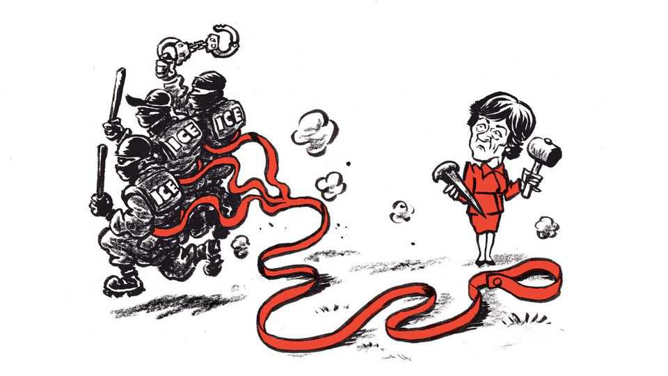
政客们多年来一直在思考这个问题，而美国或许即将迎来这一时刻。命运与她数十年的精明政治运作正联手，为她提供了一个难得的国家领导机会，正值美国社会面临巨大压力的时刻——这是一次缓解紧张局势、重申国会作为行政分支制衡力量的角色，并捍卫美国公民自由权利的契机。随着参议院民主党人威胁要关闭政府以抵制特朗普大规模驱逐移民的政策，她拥有促成妥协的权威，可为边境巡逻局和移民与海关执法局（ICE）人员使用的手段设定常识性限制。她也具备足够的公信力做到这一点：科林斯参议员在非营利机构Lugar中心与乔治城大学公共政策学院联合发布的年度“跨党派指数”中，长期位居参议员中的首位。■
她甚至还有充分的本地理由采取行动。她家乡所在的州——缅因州——成为美国移民与海关执法局（ICE）最新一轮行动目标，尽管与明尼苏达州类似，该州并非非法移民聚集地；估计约有1万名非法移民居住于此，约占当地人口的0.7%。目前已传出多起滥用职权事件，包括拘押合法居留的公民。截至目前，柯尔森（Collins）一如往常般谨慎行事。1月24日，一名美国公民在明尼阿波利斯抗议时遭移民执法人员枪击身亡后，她呼吁展开独立调查。她表示正在“探索所有选项”以资助政府运作。缅因州历史上一直出产独立派政治人物前往华盛顿任职。柯尔森的同僚参议员安格斯·金（Angus King）即为一名独立议员，尽管他与民主党人结盟。但一个特定的历史遗产正萦绕在这个政治时刻。■
玛格丽特·丘奇·史密斯（Margaret Chase Smith）于1950年作为缅因州的共和党初选议员，挺身而出，反对约瑟夫·麦卡锡（Joseph McCarthy）对美国公民言论自由的迫害。她在参议院发言中表示：“作为一名美国人，我同样谴责共和党法西斯主义者，正如我谴责民主党共产党人。”这段发言被历史铭记为她的“良知宣言”。这标志着麦卡锡最终下台的勇敢开端。柯林斯（Collins）曾将史密斯视为榜样，但熟悉她的人表示，多年来每当有人暗示她需要经历一次“玛格丽特·丘奇·史密斯时刻”时，她都会咬紧牙关。她曾在重要议题上与党派立场决裂，曾反对弹劾比尔·克林顿（Bill Clinton），支持奥巴马（Barack Obama）的经济刺激计划，并在特朗普（Trump）试图废除奥巴马医改（Obamacare）时投下关键一票。■
她在特朗普首次弹劾审判中投了无罪票，但在第二次审判中却投了有罪票。然而从长远来看，在国会山内部人士眼中，她因在共和党占据绝对多数时仍坚持独立立场而在党内获得声誉，而在党派支持率微弱时则能提供稳定票源。对许多左翼选民而言，这位支持选择权的柯林斯女士在2018年投票确认布雷特·卡瓦诺（Brett Kavanaugh）担任最高法院大法官时，暴露了其传统党派倾向——她声称相信卡瓦诺不会投票限制堕胎权（事实证明她错了）。缅因州刘易斯顿的萨菲娅·哈里德表示：“她投票确认卡瓦诺担任最高法院大法官的那天，就是我失去对苏珊·柯林斯信心的日子。” ■
卡里德女士，她领导的非营利组织名为“社区组织联盟”，正努力帮助居民应对美国移民与海关执法局（ICE）的执法行动。她对科尔林斯女士不会采取更多行动不抱期待。“目前我们不想要空头支票，”她说，“我们想要实际行动。” 卡里德女士或许是对的，特朗普在明尼阿波利斯的语气转变可能让科尔林斯及其他焦虑的共和党立法者认为危机已结束。但事实并非如此。特朗普不断扩大的移民执法行动，已为国家警察力量向白宫单方面负责的庞大新权力设定先例——这些先例他本人或未来总统都可能再次援引。■
科林斯女士在不削弱移民法的前提下，可能引导国会谈判代表设定边界：确保联邦执法人员若造成人员伤害将接受可信的独立调查；禁止执法人员除特殊情况外佩戴面罩；禁止其未经司法授权强行破门；至少在最高法院作出裁决前，禁止其实施“科瓦诺停顿”，即基于对路人种族的主观判断要求其出示公民身份证明的非美做法，该做法得名于大法官科瓦诺的合议意见。科林斯女士今年秋季将竞选连任第六届任期。随着3月初选截止日期的临近，她可能担心遭遇共和党对手的挑战。■
但特朗普已表示，科林斯女士（Collins）连同四位在委内瑞拉突袭行动后投票限制其战争权力的共和党参议员，“永远不应再次当选”。作为处境最危险的参议院共和党人，她重新当选的最佳机会或许是重回中间立场，处理根本性原则问题。73岁的她更确定地拥有这一机会，为当下美国亟需、未来也将铭记的榜样。■ The Economist的订阅者可注册我们的Opinion通讯，汇集最佳领袖评论、专栏文章、特邀评论及读者来信。
§030 美洲原题：How to tell if Venezuela is heading for democracy · 板块：Americas · 栏目：美洲
“感觉就像堵住的排水管被疏通了，”一名加拉加斯的建筑工人低声说道。看到尼古拉斯·马杜罗——折磨施害者、选举舞弊者和经济破坏者——被送进纽约监狱，对大多数人来说是极大的满足。然而庆祝情绪却较为克制。政权仍掌握在现任者手中。德尔西·罗德里格斯，马杜罗的副手，在唐纳德·特朗普的支持下接掌权力，特朗普称她正执行自己的指令。尽管如此，五分之四的委内瑞拉人认为一年内政治局势会有所改善。
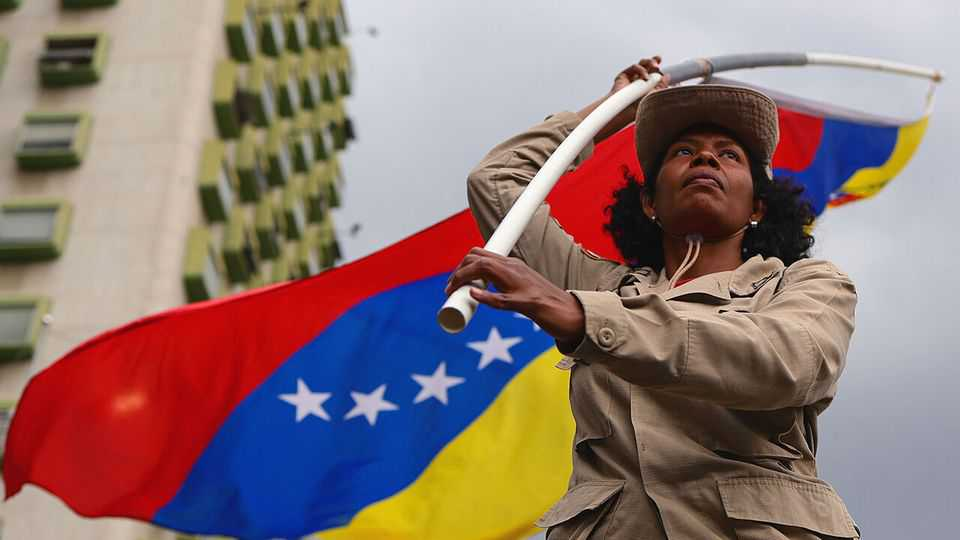
这种乐观情绪源于罗德里格斯改善经济的举措，以及对特朗普政府决心的信心。1月28日，反对派领袖、诺贝尔和平奖得主玛尔塔·科里娜·马查多在与美国国务卿马可·鲁比奥会面后表示：“今天，我可以向委内瑞拉人民保证，民主转型将如期发生。”任何向民主过渡都需要时间，但许多人急于弄清楚马查多是否正确。这意味着评估特朗普政府的严肃性，以及罗德里格斯及其亲信的脆弱性。一个民主的委内瑞拉将对现任政权构成存在性威胁。她政府推行的改革将揭示关键信息：既显示特朗普政府的要求，也体现强硬派无法阻止的变革。罗德里格斯已提出一系列公告和新法律草案。■
截至目前，他们指出经济方面取得进展，但民主进程却有意拖延。自马杜罗1月被捕以来，约3亿美元资金已涌入委内瑞拉银行体系，这源于特朗普政府与委内瑞拉达成的石油交易，美国将把3000万至5000万桶委内瑞拉原油推向市场。更多资金预计还将流入。因此，官方汇率与平行汇率之间的差距——此前曾大幅拉大——已缩小至约20%，缓解了对恶性通胀的担忧。罗德里格斯表示，政府必须“简化所有国家行政程序”，承诺营造更亲市场的环境。1月22日，由政权控制的国民议会首次批准修改油气法，该法目前偏向国家石油公司PDVSA。此次改革似乎将赋予私营公司对石油生产和销售的更大控制权。■
还将削减部分特许权使用费，并允许通过独立仲裁解决争端。这些改革是特朗普总统的优先事项，也令外资企业感到鼓舞，但委内瑞拉总统仍掌控该领域主导权。接下来是委内瑞拉的矿业法，也将进行修订以吸引外资。罗德里格斯女士可能真心希望推动经济改革。对部分人而言这是令人鼓舞的信号。来自反对派中仍与政府保持对话的议员安东尼奥·埃卡里·安哥拉认为，经济自由化将催生民主。但中国和越南的例子却挑战了这一观点。该政权或许押注更强的经济实力能抑制变革诉求，从而维持执政地位。乐观者指出其他积极举措。政权已释放约300名政治犯，这是短期内释放人数最多的一次。■
其中一位是拉斐尔·图达雷斯（Rafael Tudares），埃德蒙多·冈萨雷斯（Edmundo González）的女婿，后者实际上赢得了2024年马杜罗窃取的总统选举。罗德里格斯女士承诺进行“真正对话”，称这将包括“共识”与“分歧”的政治力量。其兄长领导国民议会，曾提议改革以鼓励政治参与，颇具讽刺意味的是，他长期镇压反对派。罗德里格斯女士还重组了内阁和军队领导层，但最高层人物仍未被触动。被解职者包括工业部长亚历克斯·萨布（Álex Saab），他曾是马杜罗的“操盘手”，此前因洗钱被美国监禁。外国石油行业高管曾抱怨，与一名前囚犯打交道令人尴尬。恐惧正在消退。
1月27日，一些学生领袖在公开场合质问罗德里格斯女士，要求释放更多政治犯。一系列反对派人士已从藏身之处现身，呼吁举行新选举。马查多女士在会晤特朗普后声称，政权正被迫“自我瓦解”。但这种软化大多是象征性的。据当地监察组织Foro Penal统计，仍有约600名政治犯在押，其中包括马查多女士的许多亲密盟友。多数释放都是有条件释放。这使得政权轻易就能再次拘押前囚犯，实际上起到了钳制作用。强硬派人士如内政部长迪奥斯达多·卡贝洛和国防部长弗拉基米尔·帕德里诺仍占据要职。宣布对话是旧政权在危机中求生的惯用伎俩，不真正让步。■
罗德里格斯女士似乎有意忽视宪法，该宪法规定总统缺席时必须迅速举行选举。政权正在拖延时间，希望美国的压力能逐渐减弱。“预计会出现拖延、模糊和重新谈判条款的情况，”前马杜罗政府部长、现流亡海外的安德烈斯·伊扎拉表示。罗德里格斯女士偶尔对美国进行抨击，似乎是为了巩固其支持基础。但伊扎拉认为，与特朗普的实质性摩擦将通过“官僚主义阻碍，而非公开对抗”来处理。什么才算真正的民主转型迹象？第一个考验是政权是否允许包括马查多女士在内的政治流亡者回国。同样重要的是他们以及媒体是否能自由运作。政权内许多人对此持强烈反对态度。
实权机构和最高法院的实质性改革，包括人事调整，是另一项关键步骤。这些机构由忠于特朗普的势力掌控，为2024年选举舞弊提供了可能。权贵阶层往往无视法律。缺乏独立人士执行规则，仅靠条文本身意义不大。美国需要施加更多压力。特朗普政府对民主的模糊表态已略有转变。财政部长斯科特·贝森特（Scott Bessent）近日表示：“当我们将认为时机成熟时，将举行自由公正的选举。”特朗普称希望将马查多（Ms Machado）以某种方式纳入其中。但目前他显然仍希望罗德里格斯（Ms Rodríguez）掌权。鲁比奥（Mr Rubio）提出三阶段计划：稳定、复苏与过渡。■
1月28日，他在参议院作证时表示，委内瑞拉正“开始为不同声音创造空间”，一个民主稳定的国家——不同于当前的“强盗天堂”——是目标。他称赞罗德里格斯女士，并称美国并不指望动用军事力量来确保其遵守承诺。他还指出，从独裁体制向民主过渡需要时间，以西班牙和巴拉圭为例；前者用了七年，后者近二十年。鲁比奥先生及其上司或许希望看到一个民主的委内瑞拉。但延长的时间表正是罗德里格斯女士及其政权所寄予厚望的。■ 注册订阅《El Boletín》，了解塑造这个复杂地区的各种力量。
§031 美洲原题：Mark Carney understands the new world, but can he survive it? · 板块：Americas · 栏目：美洲
马克·卡尼于1月21日离开达沃斯时神采飞扬。作为加拿大总理，他以对全球规则体系的悼念和对中等强国在美中等国施压下的生存策略的处方，令全球精英为之倾倒。其演讲后进行的民意调查显示，加拿大民众正积极响应他的号召（见图表）。卡尼将需要依靠这种政治资本。唐纳德·特朗普随即发起了攻击。
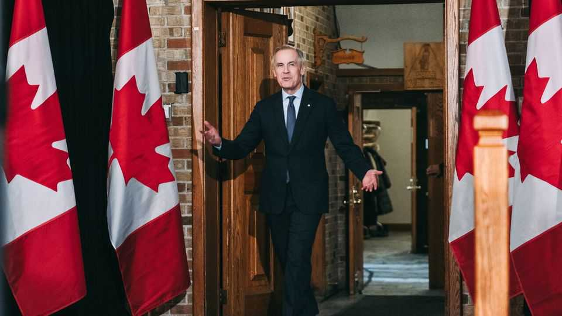
他称加拿大“系统性地自我毁灭”，并威胁若加拿大与中国达成协议，将对所有加拿大出口商品征收100%关税。美国财政部长斯科特·贝森特鼓励阿尔伯塔省的分离主义运动，称该省应“下来加入美国”。1月27日与特朗普的一次30分钟电话通话，仅印证了卡尼的判断：“华盛顿已改变，如今美国几乎没有什么正常的事。”除了处理与加拿大最大贸易伙伴的糟糕关系，卡尼还必须安抚那些不仅因对主权的持续威胁感到不安，更因生计受损而忧虑的加拿大民众。尽管特朗普的关税政策下，加拿大经济在2025年仅增长了略超1%，但分项关税重创了加拿大东部的钢铁、汽车和铝业，导致数千人失业。
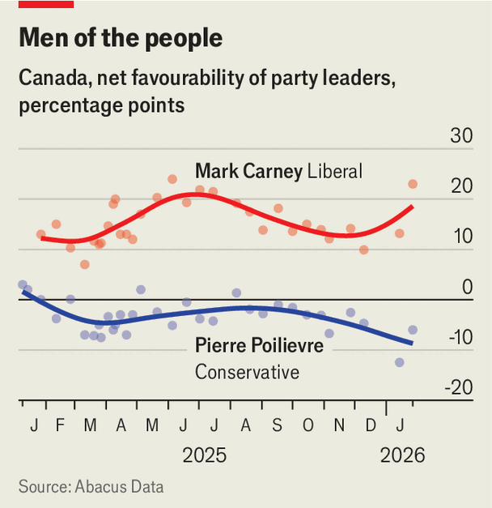
食品价格的上涨正引发焦虑。去年，前往食品银行的人数达到历史新高。加拿大部长马克·米勒（Marc Miller）在1月23日参加内阁会议讨论加拿大粮食危机后总结道：“我们既要应对世界末日，也要应对月底的困境。”卡尼先生则推出一项为期五年的减税政策，为低收入家庭提供约7500加元（约合5500美元）的补贴。中国近期同意削减对加拿大农产品出口的关税，这将缓解萨斯喀彻温省等西部省份的困境——这些省份每年向中国出口数十亿美元的油菜籽。作为交换，卡尼先生同意将加拿大对中国电动汽车的100%关税降至6.1%，至少前49,000辆进口车辆适用该税率。消费者可能欢迎廉价高质量的汽车。■
政府还必须应对这个庞大国家东西部的分裂主义运动。民调显示，分离主义政党魁北克党（Parti Québécois，PQ）可能在不晚于10月的省选中掌控议会。该党承诺若当选将再次举行独立公投。1995年公投中，魁北克省仅以54,000票之差（相差1个百分点）选择脱离联邦。相比之下，加拿大人均GDP最高的省份阿尔伯塔省，拥有全球第三大已探明石油储量，是更紧迫的关切对象。该省对联邦政府不满，因为联邦法规限制了其通过加拿大西海岸出口油气的基础设施建设能力。贝森特（Mr Bessent）将阿尔伯塔省的独立诉求与其受挫的输油管道建设计划联系起来。■
最近的民调显示，仅有28%的阿尔伯塔省居民（Albertans）愿意离开加拿大。但这种情绪是加拿大央行行长卡尼（Mr Carney）于11月与阿尔伯塔省签署协议的原因之一，该协议旨在加速建设一条输油管道，将每天100万桶原油输送至太平洋沿岸出口。该省只需筹措资金即可。但许多可能资助该输油管道及其他基础设施的公司和养老基金私下抱怨，繁琐的环境法规使投资风险过高。在此问题上，如同在诸多其他问题上一样，总理必须谨慎权衡。如果特朗普（Mr Trump）放弃他于2018年与加拿大和墨西哥重新谈判的大陆自由贸易协定USMCA，该协定他现在称之为“无关紧要”，那么维持该协定将几乎不可能。多数经济学家认为，卡尼（Mr Carney）在没有该协定的情况下难以吸引所需投资。
因此，特鲁多的中间力量必须与邻近的强大力量达成某种安排。尽管他人气飙升，特鲁多仍领导着一个仅差一个席位便能获得多数席位的政府。他的自由党正试图劝说一名反对党议员倒戈。如果失败，加拿大对特鲁多的好感或许会促使他提前举行选举。■
§032 中东与非洲原题：The case for optimism in South Africa · 板块：Middle East & Africa · 栏目：中东与非洲
南非经济长期以来一直被巨大的缺口所定义。其钻石和金矿的财富曾使该国在20世纪成为非洲最工业化国家。但最近经济却陷入了一个巨大的缺口。如今人均GDP比20年前还低。过去二十年间，南非在大型经济体排名中从第27位跌至第39位，被孟加拉国、以色列和泰国等国超越。9月的一项民调显示，80%的南非人认为国家正走向错误方向。但越来越多的乐观者持不同看法。
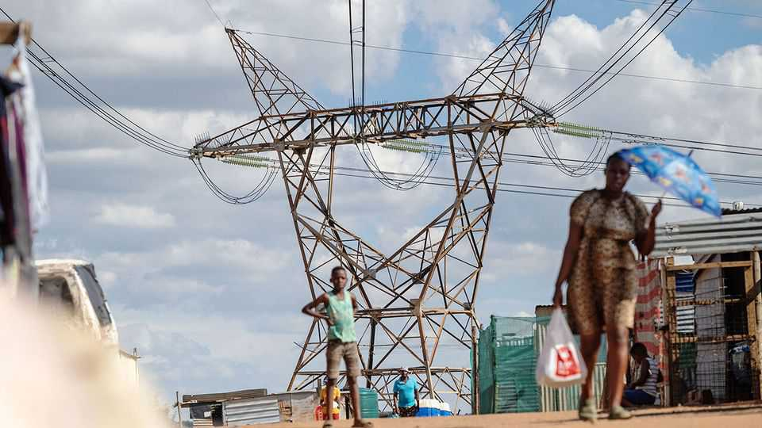
■
阿德里安·恩索文（Adrian Enthoven），黄木公司（Yellowwoods）的负责人，同时也是商业世家的继承人，去年晚些时候在一场颇具影响力的讲座中表示，“在经历了十年的衰退后，南非已扭转局势。”如果他的观点正确，这将对南非产生深远影响，而由于南非是非洲最大的经济体，对整个非洲大陆也将产生广泛影响。随着克里·拉马福萨（Cyril Ramaphosa）总统任期进入末期，其领导下的总统任期或将重新评估。乐观派的论点首先聚焦于国有公司，如国家电力公司（Eskom）。2022年，哈佛大学（Harvard University）的经济学家们指出，自2008年以来南非表现欠佳的约40%可归因于公用事业部门的失败。这些国有机构在雅各布·祖马（Jacob Zuma）任内被洗劫，而祖马正是拉马福萨的前任。
情况有所改善，南非电力公司（Eskom）新任管理层将停电天数从2023年的284天降至去年仅8天。屋顶太阳能的广泛普及也起到了积极作用。恩特霍文先生认为，情况远不止如此。他指出，自2020年“维伦德莱拉行动”（Operation Vulindlela，由组织化企业支持的特别工作组）启动以来，拉马福萨总统主导了被低估的市场化改革。这些政策因2024年国民联盟政府（Government of National Unity，GNU）的成立而得到强化，该政府由非洲人国民大会（African National Congress，ANC）与前反对党民主联盟（Democratic Alliance，DA）联合领导。国家主导的垄断行业正在逐步开放。过去100年，南非电力公司一直掌控着电力的发电、输电和分配。但自2023年起，任何规模的发电厂均可在无需许可的情况下建设。
一家新成立的独立输电公司意味着电力即将进入公开市场交易。这些变革引发了投资热潮，开发商正评估约220吉瓦的潜在可再生能源和电池储能项目，约为南非电力公司（Eskom）现有装机容量的四倍（但并非所有项目都会建成）。南非国家铁路公司（Transnet）也正沿着类似路径推进改革，该公司因港口和货运铁路管理不善而制约了出口。12月，它首次达成港口私有化协议，将南非最大港口德班港（Durban，撒哈拉以南非洲最大港口）的25年特许经营权授予一家菲律宾企业。不久后，约11家私营铁路运营商将获得Transnet此前垄断的货运线路，这些线路负责将矿产从矿坑运至港口。还有更多好消息：频谱拍卖改善了移动网络覆盖并降低了数据成本。■
工作签证积压，曾是企业的一大困扰，现已基本解决。《公共服务修正案》（Public Service Amendment Bill）一旦通过立法，将有助于专业化的公务员体系，该体系目前充斥着非正式编制人员。恩索文（Mr Enthoven）称，这可能是“我们一生中最重要的制度性改革”。宏观经济指标持续改善。2025年，该国首次出现连续15年的财政盈余。债务与GDP比率可能即将开始下降。2025年平均通胀率降至21年来的最低水平。11月，信用评级机构S&P首次在近20年里上调南非主权债务评级。然而，经济增速仍需进一步提升，才能显著改善失业率，该失业率目前高达32%，是全球最高之一。■
商界领袖与拉马福萨团队常提及，未来三年内经济增长率有望达到至少3%。但国际货币基金组织（IMF）预计未来五年内经济增长率将不超过2%。这是因为尽管改革措施属实，但其范围有限。维林德拉行动联合负责人鲁迪·迪克斯（Rudi Dicks）指出，尽管其团队已“完成大量工作”，但“部分进展仍令人遗憾地缓慢”。该工作组最近的内部审计报告也承认，在其最初五大优先事项——电力、物流、签证、供水和电信——中，多项进展“滞后/偏离轨道”。许多关键领域仍未得到解决。随着停电现象减少，企业高管们最频繁抱怨的是有组织犯罪的严重程度及其与政治精英的关联。某大型投资基金负责人担忧南非正经历“墨西哥化”趋势。
标准银行的戈拉姆·巴利姆（Goolam Ballim）认为，尽管增长的基础“正在缓慢拓宽”，但若缺乏更深层次的治理改善，这些进展将毫无意义。他指出，当前针对政界人士——包括前警察部长森佐·姆奇努（Senzo Mchunu）——涉嫌与犯罪分子勾结的调查，是南非加强法治的契机，正如巴西通过“洗车行动”（Operation Car Wash，又称“洗钱行动”）调查所展现的那样。（森佐·姆奇努否认所有不当行为的指控。）即便如此，其他制约增长的因素仍将持续存在。尽管一些企业高管，包括黑人企业家如投资银行投资生态度（Investec）的法尼·蒂蒂（Fani Titi），呼吁重新审视黑人经济赋权政策，非洲人国民大会（ANC）也不太可能放弃其标志性平权政策，尽管已有越来越多证据表明这些政策增加了企业成本，并成为腐败的遮掩工具。■
许多企业，尤其是矿业公司，担心产权保护减弱。此外还有政治因素。非洲人国民大会（ANC）将在2027年选出新领导人，该领导人很可能在2029年大选前同时担任国家总统。目前热门人选保罗·马沙泰莱（Paul Mashatile）是拉马福萨（Ramaphosa）的副手，他可能对联合政府的利弊持有不同看法。民主联盟（DA）曾指控马沙泰莱腐败，若由他领导的联合政府上台，该党可能更难维持现状。（马沙泰莱否认不当行为。）恩索文（Enthoven）指出，联合政府终结并催生民粹联盟将对南非造成“灾难性”影响。这种不确定性使改革派更需展现紧迫感。若南非真要实现转折，就必须尽快行动。■
订阅《Analysing Africa》每周通讯，让您掌握世界上最年轻且最不为人知的大陆的最新动态。■
§033 中东与非洲原题：Nigeria’s economy may be back from the brink · 板块：Middle East & Africa · 栏目：中东与非洲
1999年尼日利亚恢复文官统治时，当选总统奥巴桑乔（Olusegun Obasanjo）旨在整顿因军政府多年管理不善而陷入困境的经济。起初遭到批评人士的质疑，但到奥巴桑乔第二个任期结束时，其自由化政策已成功抑制通胀、提振投资，并将年度GDP增速提升至约7%。然而好景不长。过去十年中，人均GDP持续下滑。但目前已有迹象表明，正如一位分析师所称的“黄金时代”——即奥巴桑乔自由化政策之后的时期——可能再度来临。■
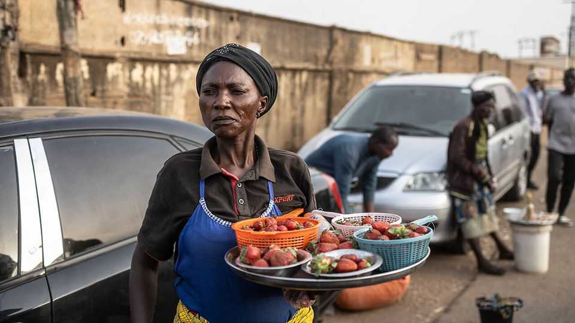
博拉·蒂努布（Bola Tinubu）在2023年当选总统后，过去两年半时间里已推行自己的结构性改革。随着他准备在2027年竞选连任，这些改革可能开始显现成效。蒂努布继承的混乱局面难以夸大。2023年他上任时，该国央行有70亿美元（相当于当时GDP的1.4%）无法偿还的债务，导致国际投资者大规模撤离。央行的信誉因过度宽松的货币政策、外汇储备管理不善以及维持不可持续的阶梯式汇率体系的尝试而受损。仅2022年，财政吃紧的政府就花费约100亿美元（相当于GDP的2.2%）用于毁灭性的燃油补贴。■
为扭转局势，蒂努布（Tinubu）政府随即启动了一系列激进的结构性改革措施。政府废除了燃油补贴，摒弃了多层级的美元挂钩汇率体系，基本放任奈拉自由浮动。央行果断收紧货币政策以遏制由此引发的通胀浪潮。政府同时着手改善尼日尔三角洲地区的安全局势，并推出多项税收优惠吸引投资者，以提振日益萎缩的石油产量。近三载光阴过去，尼日利亚2.3亿人口，尤其是贫困人口和中产阶层，仍因燃料和食品价格上涨而苦不堪言。贫困率已攀升。但看来蒂努布的苦药正在见效。2024年12月通胀率曾飙升至近30年高点34.8%，2025年12月已降至15.2%。经济增长正在回归。国际货币基金组织（IMF）预计2026年经济将增长4.4%。■
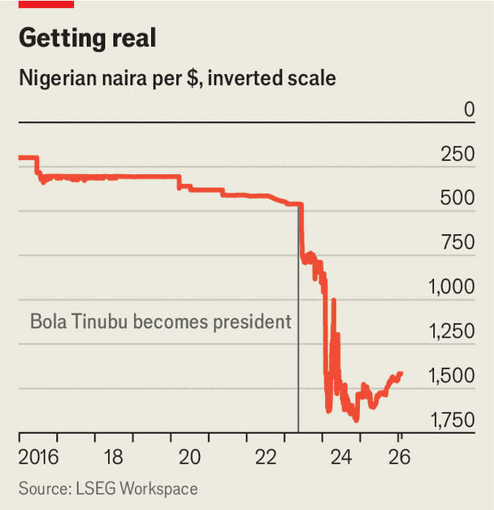
在2023年经历两次大幅贬值后，奈拉已趋于稳定（见图表）。央行外汇储备升至460亿美元，这是七年来最高水平。宏观经济稳定性的改善正在恢复投资者信心。1月22日，英国公司壳牌表示，希望在2027年与合作伙伴最终敲定开发一项价值200亿美元的海上油田的计划，该油田已闲置逾20年。美国公司埃克森美孚承诺至2027年投入15亿美元用于深水区开发。本地商业领袖也更加乐观。油气产量正在上升，其中大部分由本地企业推动，这些企业在尼日利亚三角洲的陆上项目中堵漏并提升产量，该地区因廷布总统（Mr Tinubu）对安全的重视而变得更加安全。
这一切应为政府提供一定的财政空间，尤其是随着贬值的奈拉开始提升尼日利亚非石油出口（如可可和腰果）的竞争力。蒂努布最新项目——税收和征税体系的改革，应有助于未来几年进一步提升财政收入。通胀回落最终将缓解民生成本压力。然而，即便是乐观者也有充分理由保持谨慎。燃油补贴节省的资金大多用于偿还公共债务，而政府仍在通过未来石油销售收入融资赤字，导致债务规模持续攀升。目前，约60%的财政收入被用于债务偿还。■
1月20日，尼日利亚财政部长表示，政府希望今年减少借贷，但当前预算预测显示这一目标并不现实。尼日利亚咨询公司Escap的Esili Eigbe表示：“政府已经山穷水尽，没有可用于未来投资的东西，这是事实。”除非政府削减公务员薪资这一大笔支出，或能重组贷款以降低债务成本，否则近期税制改革带来的额外收入似乎难以用于改善基础设施或支付公共医疗和教育开支。“他们已将赤字降低，但似乎并未展现出更强的推动资本项目落地的能力，”美国银行Citi的经济学家David Cowan表示。
所有这些意味着，普通尼日利亚人要很长时间才能感受到蒂努布改革带来的好处，而他们此前一直承担着改革的代价。购买食物一直是个难题，不仅对42%的尼日利亚人而言如此——根据世界银行的定义，这些人日均收入不足3美元，属于极端贫困——也困扰着城市中产阶级。自2023年5月以来，一公斤大米的价格几乎翻了四倍，而工资几乎停滞不前。尽管当前通胀正在回落，但许多人仍难以负担足够的食物。奥巴桑乔在2000年代初推行的改革旨在通过吸引新资本投资于刚私有化的行业，提升经济活力并改善民众生活。到他第二届任期结束的2007年，国内企业价值已从1999年的30亿美元增至850亿美元。■
相比之下，蒂努布（Tinubu）迄今为止主要致力于恢复稳定并振兴国家萎靡不振的油气产业。若要为尼日利亚人民创造更美好的未来，他不能止步于此。■ 注册订阅《Analysing Africa》，每周获取关于世界最年轻且最不为人知的大陆的最新动态。
§034 中东与非洲原题：Congo’s regime hounds its opponents · 板块：Middle East & Africa · 栏目：中东与非洲
1月18日凌晨，安全人员抵达刚果民主共和国首都金沙萨的奥宾·米纳库家中，将这位反对派政客带走。此后再无音讯。1月5日，蒙面人将纳塔内尔·翁科马巴从一场演讲中拖走。其律师称该活动人士随后被秘密拘禁五天，遭殴打且被剥夺食物。这两人成为刚果反对派日益扩大的镇压行动中的最新受害者。
美国斡旋的协议未能结束东部冲突，该冲突使刚果军队与卢旺达军队及由卢旺达支持的M23叛乱组织对峙，削弱了政府并使其对异见人士日益猜忌。在搜捕内部敌人过程中，武装人员深夜敲开反对者家门带走他们的现象变得异常普遍。镇压手段的升级似乎意在转移公众对政府无法恢复对东部刚果控制力的注意力。12月在华盛顿签署的和平协议要求卢旺达撤出军队并停止对M23的支持，同时承诺以刚果矿产资源为交换提供美国援助。但该协议既未阻止冲突，也未能阻止M23巩固其在该地区的存在。■
约瑟夫·卡比拉（Joseph Kabila）的盟友最易受到威胁，这位前总统被政府指控与M23叛军合谋。军方法庭于10月判处卡比拉（现可能已离境）死刑，罪名是叛国。卡比拉的忠实追随者米纳库（Mr Minaku）在该党领导人被拘押数周后被捕，其下落不明。该党已被取缔。但镇压不仅针对卡比拉的追随者。据奥诺科马（Onokomba）律师称，该活动人士的逮捕似乎因他在社交媒体上声称比利时殖民时期的生活比现任总统费利克斯·齐塞克迪（Félix Tshisekedi）统治时期更美好，以及对与卢旺达脆弱和平协议的玩笑而引发。所有主要反对党近期都抱怨遭到任意拘捕，其多数领导人已流亡海外。■
塞思·基库尼是少数仍留在该国的知名反对派政客之一，他在1月19日表示，他也逃走了。然而，镇压行动并未放过军队。过去一年中，刚果已逮捕了一名前陆军参谋长、前军情局长及前总统私人军事办公室负责人等多人。指控内容从叛国罪到策划反对特希塞基迪总统的行动不等。刚果本就不以政治自由繁荣著称，但人权组织表示，近期逮捕行动的广泛性令人瞩目。目前确切被捕人数尚不清楚，但可能已达到数百人。高调案件由国家反恐委员会（CNC）处理，该机构神秘且成立时间不长，直接向总统汇报。越来越多的被捕者被秘密拘押，无法联系律师，也未遵循正当程序。
有时，社交媒体上会出现拘留人员请求宽恕的羞辱性视频。一位当地研究者表示：“安全机构完全失控，系统濒临崩溃，充斥着对政变阴谋的恐惧。”研究者称：“我们正处于战争状态，任何手段都可使用。”司法部长则为这些逮捕行动辩护，称这是保护国家安全的必要手段。但这些逮捕行动恐怕难以实现这一目标。特希塞基总统上任四年多来，除了冲突持续恶化外，几乎没有什么政绩。这种镇压行动不仅无法震慑不满的刚果民众，反而可能催生新的强大敌人。■ 注册订阅《分析非洲》（Analysing Africa），每周获取关于世界最年轻、最不为人知的大陆的最新动态。
§035 伊朗将无视美国金融威胁原题：Is America about to attack Iran? · 板块：Middle East & Africa · 栏目：中东与非洲
，唐纳德·特朗普警告称“一支庞大的舰队正驶向伊朗”。两周前，美国总统曾承诺向伊朗抗议者提供援助，但随后又撤回了这一承诺。此后，伊朗政权造成的大规模流血事件的严重性愈发清晰。华盛顿的人权监测机构hrana确认已有超过6,300人死亡。据反对派消息来源称，实际死亡人数可能高达30,000人。如今，特朗普将注意力转向伊朗的核计划、导弹生产及外交政策。他表示，如果伊朗拒绝达成协议，下一次攻击将“远比去年袭击伊朗核设施的行动更为严重”。
■
这是一条可信的威胁。舰队的核心是亚伯拉罕·林肯号航母，据信已抵达阿曼湾，其战斗机可轻松打击伊朗。该航母还搭载电子战飞机，可干扰伊朗雷达，并随行三艘驱逐舰，每艘均配备陆基攻击巡航导弹及可拦截伊朗导弹的系统。美国还向该地区部署了其他军事平台。卫星图像显示，新的防空系统已部署至卡塔尔乌代德空军基地，该基地是美国中央司令部的区域总部（去年夏天曾遭伊朗袭击）。用于2024年摧毁飞往以色列的伊朗无人机的F-15E战斗机已部署至约旦。两周前，以色列反对军事打击，部分原因在于其易受伊朗攻击。■
美国现在更有能力应对伊朗的任何报复行动。然而，尚未出现明显迹象表明会有大量货运飞机增派，这通常会伴随爱国者导弹系统和萨德导弹系统的部署，这些武器可能用于拦截伊朗导弹。追踪应答器信号的航空观察者注意到其他值得注意的变化。大量加油机已抵达乌代德空军基地（Al-Udeid）。用于搜救（SAR）的飞机——这类飞机通常用于寻找坠机飞行员——正向东移动。此外，美国侦察机的活动显著增加，这些侦察机具备跟踪伊朗雷达、截获通讯和测绘伊朗军事力量的能力，同时还有专门用于空中通讯中继的飞机，可支持搜救任务。
史蒂芬·沃金斯认为，两者都是“轰炸即将发生的明确信号”。特朗普具体针对什么尚不明确。外交官们提出了几种情景。一种是象征性打击，或许针对主导近期镇压行动的伊朗伊斯兰革命卫队，这将使特朗普能够宣称他已执行了红线，而不会动摇政权对权力的控制。另一种可能是更广泛的打击行动，旨在通过消灭领导人推翻政权。阿拉伯和欧洲政府对这种做法持怀疑态度。这可能需要数天或数周的轰炸行动。这反过来又需要比目前部署的火力更强大的力量。这几乎肯定会引发更大规模的战争，伊朗可能在其中袭击美国及其盟友在海湾的基地。
以色列或许看到了打击伊朗日益增长的导弹力量的机会。沙特阿拉伯和阿联酋担心冲突升级，拒绝允许其领空用于对伊朗的军事打击。西方官员提出的最终方案是一种混合行动。这种行动将看到美国先打击部分伊朗领导人——包括该国最高领袖阿里·哈梅内伊——随后与残余政权达成协议，如同其在委内瑞拉的做法。当然，美国与伊朗达成协议以阻止袭击的可能性依然存在。特朗普的中东特使史蒂夫·维特科夫表示，任何协议都必须涉及伊朗的核计划、导弹库存及其地区代理人网络。然而，伊朗领导人不会忘记特朗普六月设定的两周期限。■
三天后，他发动了对国家的袭击。■ 订阅《中东简报》（Middle East Dispatch），每周一次的简报，助您深入了解这个充满魅力、复杂且影响深远的地区。
§036 中东与非洲原题：Hizbullah, Iran’s most powerful proxy, has been humbled · 板块：Middle East & Africa · 栏目：中东与非洲
Middle East & Africa | 一个不确定的未来 真主党，这支统治黎巴嫩四十年的什叶派民兵组织，在2024年9月遭遇了低谷。当救援人员从贝鲁特南部郊区90英尺深的废墟中打捞出其长期领导人哈桑·纳斯鲁拉（Hassan Nasrallah）的遗体时，这一事件引发了广泛关注。目前尚不清楚他是否因以色列空袭的钝力致死，还是如部分黎巴嫩和伊朗官员所称，因在地下掩体中窒息而亡。无论如何，这一事件暴露了该组织日益增长的脆弱性。■
然而，这种脆弱性在最近几周愈发明显，随着伊朗及真主党（Hizbullah）——该组织的幕后支持者——局势动荡蔓延，伊朗政权暴力镇压的举措也暴露出其自身弱点。作为伊朗最强大的外国代理人，真主党肩负着威慑以色列和在政教合一政权边界外展示实力的重任，这意味着其承受的压力前所未有。在军事和财政层面，该组织已明显衰弱。其剩余的影响力更多体现在对黎巴嫩政治的主导能力，而非与以色列的对抗。首先看财政压力。真主党的资金来源已大幅缩减。委内瑞拉绑架尼古拉斯·马杜罗（Nicolás Maduro）的事件中断了该组织长期依赖的有组织犯罪和毒品贸易带来的 lucrative 收入流。■
在马杜罗执政期间，加拉加斯（Caracas）成为伊朗非法石油出口的中转站，哥伦比亚可卡因的转运点，以及洗钱的天堂。马杜罗本人亲自确保这些安排，并于2022年，伊朗与委内瑞拉签署了为期20年的合作协定。但马杜罗被推翻后，美国对这类支持展开了打击。经常与真主党打交道的人表示，这条资金线已彻底断绝。其他地区压力也在加剧。以色列对真主党目标的空袭持续进行。该组织已失去对贝鲁特机场的控制，该机场曾是黎巴嫩与伊朗之间人员、武器和资金流动的关键通道。2024年巴沙尔·阿萨德在叙利亚的倒台进一步扰乱了曾允许真主党秘密且低成本补充军备的路线。该组织的领导层已被削弱。即便在与以色列达成停火协议后，暗杀行动仍持续进行。■
11月，负责军备重整的指挥官哈桑·塔布泰巴伊（Haytham Tabtabai）在贝鲁特（Beirut）身亡。真主党（Hizbullah）现存领导人年迈体弱且隐匿不出，高级人物纷纷回避集会，担心任何聚会都可能招致以色列的火力打击。他们在黎巴嫩的政治掩护也已逐渐瓦解。作为军方首脑时，约瑟夫·阿翁（Joseph Aoun）曾回避与民兵组织正面冲突。如今担任总统后，他将不受国家管控的武器称为“国家的负担”，几乎无人怀疑这指的是真主党武装的武器库。他并非唯一公开谈论这一曾被视为不可想象议题的人。围绕真主党裁军的禁忌已不复存在，电视辩论节目如今公开讨论这一话题。面对真主党损失及其自身弱点，伊朗选择加强控制。
伊朗伊斯兰革命卫队——伊朗伊斯兰共和国的军事力量，长期以来深植于该国军事体系——如今直接行使管辖权。真主党曾享有的自主权随着纳斯拉拉的去世已不复存在。武器、战略和冲突升级的决策如今都来自德黑兰。这种依赖关系正引发黎巴嫩国内日益增长的不满，甚至在真主党的什叶派基础群体中也出现反感情绪。在南部地区，该组织曾以重建速度超过政府为荣，但自2024年与以色列的战争以来，几乎没有任何修复工作完成。村庄满目疮痍。一位边境城镇的基督徒女性近日收到真主党发放的支票，但当她试图在该组织金融网络核心机构卡德·哈桑银行兑现时，支票却因为空头而作废。据黎巴嫩什叶派商人和分析人士称，伊朗仍在支付真主党战士的工资。■
但伊朗已不再愿意或能够承担重建工作或补贴福利。伊朗政权的首要任务是维持真主党对以色列构成威胁的能力，而非恢复南部黎巴嫩的局势。这种分歧正加剧紧张局势。“黎巴嫩人并不感兴趣解放巴勒斯坦，”一位什叶派商人表示，“让伊朗人去干吧。”然而，尽管存在这些弱点，真主党仍是黎巴嫩内一股强大的力量，并且仍具备适应能力。该组织正回归最初建立势力的方法：分散的小组、地道、走私路线和游击战。情报官员表示，真主党正密切研究哈马斯在加沙的经验。真主党已基本放弃利塔尼河以南的领土，允许黎巴嫩军队在与以色列接壤的边境部署数千名士兵。然而在其他地区，真主党正加强巩固势力。■
自2025年底以来，该组织一直在回收叙利亚废弃的武器。曾经由牧羊人和极端分子使用的走私路线再次变得繁忙。贝卡谷地（Bekaa valley）的隧道网络如今变得尤为重要。该组织当前的政治力量源于其立场的模糊性。它既不完全解除武装，也不直接对抗国家。这种模糊性对其有利。与黎巴嫩武装部队爆发公开冲突将加速其衰落。一些军官可能与该党有联系，但一位退休将军表示，在真正的危机中，他们会选择提供永久性和合法性的机构。其威胁只是修辞性的，而非实际操作的。■
真主党若要解除武装而不失去其存在的理由，似乎难以想象。“就像心脏之于人类，武器对真主党而言就是其生命所在。”什叶派活动家阿里·阿明（Ali al-Amin）如此说道。若被降格为普通政党，它将失去其特殊地位的主张。ExTrac风险分析公司专家琳娜·哈提卜（Lina Khatib）表示，只要伊朗政权存在，真主党就不会解除武装。贝鲁特一位什叶派观察者指出：“对他们而言，伊朗就是神——神是永生不灭的。”但鉴于伊朗内部动荡，该民兵组织的未来愈发难以预料。■ 注册订阅Middle East Dispatch，每周获取关于这个复杂而关键地区的最新动态。
§037 中东与非洲原题：Prisons holding jihadists in Syria are no longer secure · 板块：Middle East & Africa · 栏目：中东与非洲
在叙利亚东北部的铁丝网围栏后，女性们紧握着背包，目光停留在手机屏幕上。她们是维吾尔族人——数万名在十年前叙利亚内战期间前往该国加入极端组织的外国穆斯林之一。自2018年伊斯兰国（IS）失去最后据点后，她们被关押在靠近伊拉克边境的阿勒霍尔（al-Hol）大规模拘留营。如今许多人预计即将被释放。约有3.5万人被关押在由库尔德人领导的叙利亚民主力量（SDF）管理的拘留营中。阿勒霍尔拘留营被划分为两个区域。
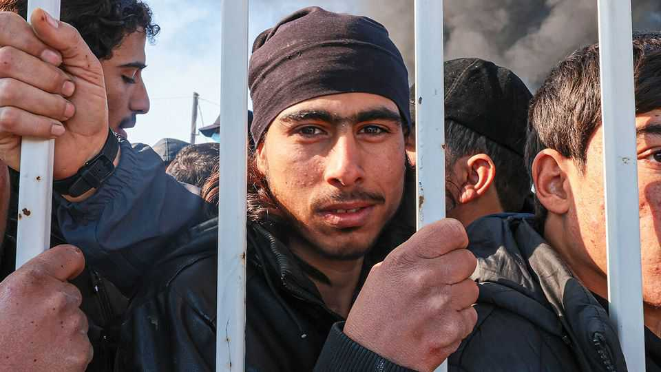
■
一个区域关押着卷入战争的叙利亚人和伊拉克人，另一个区域——“附属营”——则关押着外国极端分子，其中许多人仍忠于伊斯兰国的残暴意识形态。近十年来，这些人一直处于法律真空状态。库尔德人无法审判他们，也不愿释放他们。大多数西方政府尽管面临美国压力，仍拒绝将本国公民接回。但只要难民营安全，这个问题便被忽视。这种现状上周彻底瓦解。随着政府军重新夺回被叙利亚民主军（SDF）控制的领土，霍尔（al-Hol）及其他拘押点易主。库尔德看守逃离，忠于叙利亚临时总统阿赫迈德·阿尔-沙拉（Ahmed al-Sharaa，前极端分子）的武装力量进入。他们似乎更同情囚犯。上周，本报驻地记者目睹数十名女性从外国极端分子的附属营中爬出。■
其他人则被戴面罩的人带走，显然正前往伊德利卜，那是沙拉亚先生的旧势力范围。“请姐妹们，回屋去吧，”一名守卫恳求道，裹着头巾的妇女正从围栏缺口处溜走。华盛顿近东政策研究所的德沃拉·马格林（Devorah Margolin）表示，一些政府可能现在才意识到，他们有道德和安全义务处理本国公民的问题。但她警告称，另一些政府仍会继续将问题转嫁给他人，这风险正变得愈发危险。美国正将多达7000名最危险的被拘留者，主要是外国男性，转移至伊拉克。伊拉克情报部门本周表示，叙利亚目前有约1万名武装分子（较一年前的2000人有所增加）。收押这些囚犯是一项预防性安全举措。一些被关押在阿勒霍尔（al-Hol）的囚犯并未犯下任何罪行，有些人出生于此，另一些人则是年幼时就抵达此地。■
一位蓝眼睛的15岁少年自称是波斯尼亚人（Bosnian），但他不会说波斯尼亚语，几乎不明白护照是什么。在铁丝网后度过了八年，他几乎无法回忆起外面的生活。唯一似乎急于收容这类男孩的只有招募人员。长期忽视这些难民营的危险正变得显而易见。■ 注册《中东简报》（Middle East Dispatch），每周获取关于这个复杂且举足轻重地区的重要信息。
§038 欧洲原题：To protect itself, Europe needs the systems that make warfare work · 板块：Europe · 栏目：欧洲
欧洲已无暇顾及。随着美国、俄罗斯与乌克兰在阿布扎比的会谈中几乎未见欧洲参与，时间正在流逝。在特朗普第二个任期的第一年，欧洲各国政府试图通过购买时间来完善自身防御体系。然而格陵兰危机的最新发展彻底改变了这一计算方式。美国对跨大西洋安全架构的退缩与敌意，使欧洲政府难以跟上变化的步伐。
Nico Lange与Fabrice Pothier撰文指出，这意味着要大幅增加在卫星、情报网络等领域的投入，但需精打细算。
他们帮助乌克兰得以生存。然而，生存与安全是两个不同的概念。如果欧洲大陆希望在接下来的十年里实现持久稳定，就必须直面一个令人不适的现实：欧洲仍严重依赖美国提供现代战争所需的系统。欧洲拥有兵力、装甲、战机，以及日益增长的政治意愿。所缺乏的是将这些资源整合为可信作战力量的“战略赋能”要素：卫星、情报网络、电子战能力及远程打击能力。这些关键要素仍主要掌握在美国手中。这种依赖性如今尤为重要。北约欧洲成员国终于开始认真投入国防开支。但如果新增资金只是强化以美国为骨干的现有北约计划，欧洲仍将停留在安全消费者而非提供者的角色上。■
这就是为何国防开支的激增必须主要用于构建欧洲的战略赋能体系，依托欧洲的技术、工业与协作能力。支持乌克兰与构建这些能力并非相互竞争的目标，而是同一项目的不同组成部分。欧洲自身防御所需的系统，正是乌克兰生存所必需的。以太空领域为例，现代战争依赖卫星进行图像获取、安全通信、导航和预警。美国运营约250颗专用军事卫星，而欧洲仅有约50颗，其中多数为满足特定国家任务设计，而非共享目标。卫星是现代防御的基础架构，它们支撑着三个核心要素：感知、连接与精确时间。乌克兰的经历印证了这一点。■
若缺乏西方卫星支持——主要来自美国——乌克兰将难以追踪俄军动向、协调部队行动或保卫领空。欧洲同样面临相同限制。若无主权空间资产，欧洲无法在危机中独立行动。欧洲商业航天产业正蓬勃发展，但除非国防预算用于构建共享的欧洲空间架构，欧洲仍将受限于有限的态势感知和借来的韧性。向乌克兰提供欧洲卫星数据与通信系统，应成为欧洲自身必须依赖的系统之试金石。若空间提供战略视角，ISR（情报、监视与侦察）则赋予战术清晰度。卫星展示局势，ISR则解析其含义。这包括无人机、信号截获飞机和电子传感器。■
日益增多的军事行动也涵盖民用基础设施——从高速公路摄像头到声学传感器，这些设施能够探测破坏行为、部队调动或无人机入侵。开源情报（如社交媒体和船舶追踪数据）如今正通过实时验证功能，补充这些工具。电子战（EW）又增添了另一层关键能力，而欧洲目前尚未在该领域形成规模优势。电子战可使部队干扰通信、扰乱无人机并保护自身系统免受干扰。在乌克兰，电子战已成为决定性因素。欧洲并不缺乏创意。全欧洲各地的初创企业正在开发复杂的电子战系统，从反无人机干扰器到机动式电子攻击平台。问题在于系统整合。国防部门难以识别可行的技术方案，采购体系又因流程缓慢而难以及时采用这些技术。■
在乌克兰部署这些工具，是测试、完善和规模化应用它们的最快途径——同时构建欧洲自身的新型生态系统。关于欧洲安全的讨论往往聚焦于远程导弹。现有系统虽性能强大，但大多源自美国，产量有限且成本高昂。正如乌克兰每日展现的现代战争，本质是一场持久战。它需要具备高精度、低成本且足够简单的打击系统，以便大规模生产。乌克兰已通过低成本无人机和可穿透敌方防线的导弹实现了这种能力。欧洲拥有相应的工业基础，也能做到这一点。汽车制造商、机器人公司和先进制造商已能以低成本大规模生产高精度部件。他们懂得如何可靠地制造数百万件产品——这是传统防务承包商难以企及的。
将这些产业与欧洲防务初创企业及导弹设计师对接，有望打造出符合现代战争需求的远程打击系统规模。协助乌克兰研发并部署这些系统将加速技术积累，推动工业化进程，并减少欧洲对美制巡航导弹和轰炸机的依赖。这一议程蕴含机遇。欧洲拥有资金、技术及工业产能，缺乏的是紧迫感和协同机制。拥有自主空间基础设施、独立情报与电子战能力以及批量生产的远程打击系统的欧洲，将主导局势而非被动应对。这将使其成为美国更可靠的伙伴——而非依赖者，并更有效遏制威胁于边境之外。援助乌克兰与强化欧洲实为同一任务。欧洲已展现团结意志。■
现在它需要展现出担当。■ Nico Lange（尼科·朗格）是IRIS的创始人，曾任德国国防参谋长。Fabrice Pothier（法布里斯·波蒂耶）是Rasmussen Global首席执行官，曾任北约政策与规划负责人。
§039 欧洲原题：Europe’s long-awaited free-trade deal with India · 板块：Europe · 栏目：欧洲
纳伦德拉·莫迪（Narendra Modi）在印度共和国日（1月26日）的贵宾名单中，迎来了常规的阅兵仪式——直升机在头顶盘旋，超音速导弹装载在卡车上。然而今年，这支队伍中还加入了少量身披欧盟旗帜的士兵。欧盟两大要员亲临现场：欧洲委员会主席乌尔苏拉·冯·德莱恩（Ursula von der Leyen）和欧盟理事会主席安东尼奥·科斯塔（António Costa）。次日的峰会期间，双方宣布了一系列协议，其中包括一项自由贸易协定。■
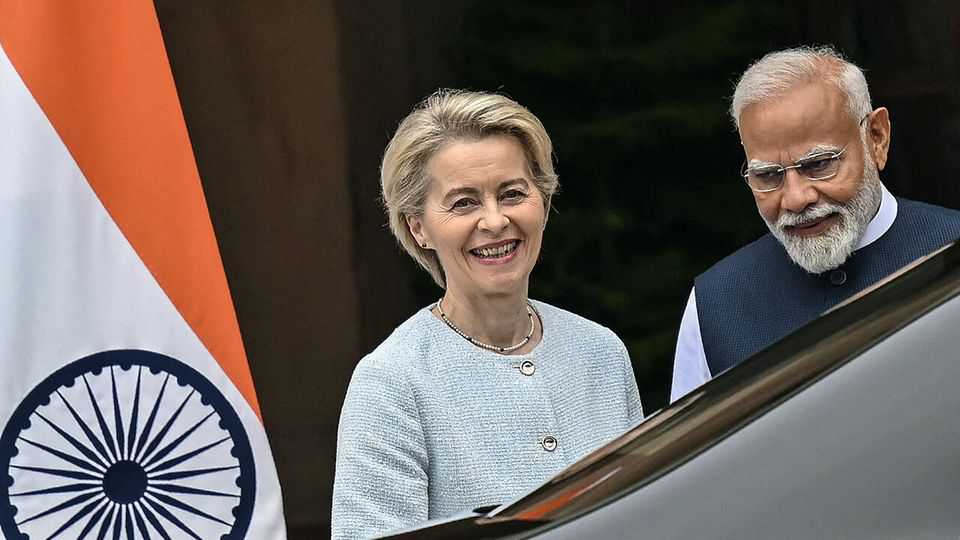
唐纳德·特朗普值得一些肯定：若没有他一贯的征税偏好和疏远盟友的作风，美中之间或许不会达成协议。欧洲和印度面临类似困境。“他们试图在各自领域保持战略自主权，印度与中国在印太地区对抗，欧洲与美国在大西洋对抗。”英国智库查塔姆研究所（Chatham House）的奇蒂吉·巴杰帕伊（Chetan Bajpaee）如此表示。印度正日益将贸易关系转向西方，同时避开亚洲竞争对手。欧盟则在任何地方寻找机会。1月17日，欧盟与拉美贸易集团南方共同市场（Mercosur）签署了协议。短期内，欧印协议对双方影响有限。印度目前仅是欧盟第九大贸易伙伴，对印出口额约760亿欧元（910亿美元），仅占欧盟GDP的0.4%。■
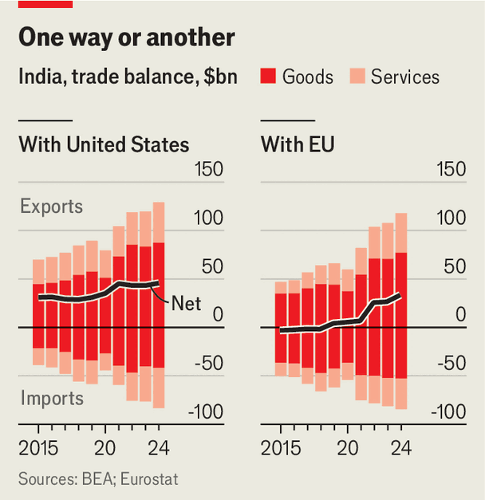
目前欧洲对印度出口的平均关税率仅为约9%。但部分关税削减仍具意义：欧洲汽车的关税将逐步从110%降至10%，但受配额限制。非关税壁垒更为严重，例如印度的质量控制指令可能导致出口货物在港口滞留数周。协议承诺部分改善，但多数争议性监管领域仍被回避。对印度而言影响更为显著。它正试图缓解唐纳德·特朗普在其全球关税行动中对印度征收的50%关税冲击，以及针对购买俄罗斯石油国家的惩罚性关税。印度2024年对欧盟的商品与服务出口额约1050亿欧元，大致与当年对美国的1290亿美元出口额相当。目前欧盟对印度进口商品的平均关税仅为4%。鉴于印度实行高度保护主义政策，该协议的深度逊于欧盟近期签署的其他贸易协定。■
有争议的领域，包括许多农产品，被排除在外。其他领域则保留用于单独协议，特别是保护集体品牌的地理标志，例如希腊的菲塔奶酪或印度的巴吉拉米香米。这项协议主要着眼于推动长期合作。自由贸易协定同时签署了安全与防务伙伴关系。德国马歇尔基金会（German Marshall Fund）的加里马·莫汉（Garima Mohan）表示，此举“显示出更高程度的信任”。印度希望其大规模生产能力能与欧洲军火生产商形成互补。关于技术移民的协议也已签署，主要涉及年轻印度人向老龄化欧洲的移民。扩大印度参与欧盟旗舰科研资助计划“地平线”（Horizon）的协议正在探讨中。双方仍有许多分歧待解决。■
印度不会因俄罗斯在乌克兰的战争而放弃与该国长期建立的关系。欧盟最新一轮针对俄罗斯的制裁措施中包含了三家印度实体。印度方面则认为，欧盟新推出的碳边境调节机制——对生产过程中排放大量温室气体的进口商品征税——实为以环保为名的保护主义。但本周的交易却令人瞩目：它们表明，全球超级大国的后起之秀也拥有自己的选择空间。■ 为掌握欧洲最大新闻动态，请订阅我们的周度会员专属简报Café Europa。
§040 欧洲原题：Near the front line, Russians are growing tired of war · 板块：Europe · 栏目：欧洲
科津卡看起来像俄罗斯别尔哥罗德地区的其他村庄：红砖房、学校和幼儿园、一家标着营业时间的杂货店。但房屋一片漆黑，杂货店从未营业。这个距离乌克兰边境不足1公里的村庄，去年被当局关闭。曾经居住于此的千余名居民中，如今只剩不到十人，他们处境危险。撤离者曾被承诺房屋补偿，但至今仍在等待。乌军曾两次进入科津卡，分别在2023年和2024年。村庄部分区域在交火中被毁，但乌军未袭击平民。
■
亚历山德拉·塞韦里娜（上图），一位87岁的前居民，回忆起乌克兰士兵驾驶装甲车驶入村庄的情景。他们没收了手机，却将它们堆放在树下，供村民在撤退时收集。“我们一直与乌克兰人和谐共处，他们是好人。”卡特里娜·马特维耶夫娜说，她仍住在村庄残存的部分。像边境地区大多数居民一样，她使用苏尔日克方言——一种融合俄语和乌克兰语的方言，并在另一侧有朋友和亲戚。他们曾一起唱圣诞颂歌，过境去购物：乌克兰的香肠更便宜，俄罗斯的汽油更便宜。如今，无人机在道路上盘旋，尼古拉说，他驾车往返于科津卡和边境城市别尔哥罗德之间，该城市距边境40公里。“如果是乌克兰的无人机，嗡嗡声像蚊子；如果是俄罗斯的，嗡鸣声则像蜜蜂。”■
过去四年间，别尔哥罗德市（人口曾达40万，如今更少）居民已习惯战争。但自1月初乌克兰导弹袭击该市热电站以来，该地区一度面临断电危机。电力和供暖基本恢复，但根据别尔哥罗德州州长维亚切斯拉夫·格拉多夫的说法，储备电力仍不足以满足所有需求。1月13日，格拉多夫警告称若电力中断，城市可能需要疏散。这一警告在俄罗斯媒体引发关注，但当地居民依旧照常生活。他们每天清晨仍照常上班，对空袭警报视若无睹。事实上，别尔哥罗德如今比两年前更热闹——两年前该市曾遭乌克兰导弹袭击，作为对俄军袭击哈尔科夫（见下图）等城市的报复。25人遇难的地点附近，立着一座玩具和鲜花组成的纪念物。■
许多当地居民对州长最新计划的担忧不亚于对无人机袭击的担忧。1月12日，格拉德科夫（Gladkov）宣布要打击“内部敌人”及“煽动不满”的人。没人知道在前线附近描述日常艰辛是否构成煽动叛乱，因此多数人选择保持沉默。初步被列为“煽动恐慌”的对象包括讨论居民问题的社交媒体群组，以及由流亡记者尼基塔·帕尔门诺夫（Nikita Parmenov）运营的Telegram新闻频道Pepel，该频道拥有10万名订阅者，依赖本地信息提供。政府对Pepel的不满更多在于其协调志愿者向受损房屋运送饮用水的角色，而非内容本身。当局对基层运动持怀疑态度，试图抢走帕尔门诺夫的风头，推出了官方的“志愿者计划”。■
政府正将别尔哥罗德（Belgorod）塑造为英雄前线重镇。城市主公园内的一场照片展展示着士兵保卫国家的场景，但鲜有人驻足观看。一名路人用围巾遮住脸说：“大家都感到疲惫，当初支持的人现在大多感到失望。”本地新闻网站Fonar在1月开展的读者调查中显示，四分之一受访者表示“心碎且失望”，相似比例的人认为自己的生活停滞不前。仅有6%的受访者表示曾向参与俄罗斯“特别军事行动”的人员提供援助。别尔哥罗德政治活动家兼律师伊利亚·科斯图科夫（Ilya Kostyukov）称，许多士兵向他求助终止军役合同，但过去一年就连伤员也不被允许离开。他坦言：“你们可以头撞墙、付我数百万，但最终都不会成功。”■
为掌握欧洲最重要的新闻动态，请订阅我们的周度专属订阅新闻通讯《Café Europa》■
§041 欧洲原题：Viktor Orban may lose his next election · 板块：Europe · 栏目：欧洲
位于布达佩斯的马蒂亚斯·科文纽斯学院（Mathias Corvinus Collegium，简称MCC）是维克托·奥班的支柱机构，这位匈牙利极右翼民粹主义总理的私人机构主要由国家石油天然气公司10%的股份资助，为国家保守主义思想提供智库支持，并作为奥班领导的匈牙利公民联盟（Fidesz）精英培训基地。然而在最近一个下午的斯克鲁顿咖啡馆，两位MCC学生表示，他们对另一政治力量的崛起感到兴奋：由彼得·马加尔（Peter Magyar，见图）领导的反对党蒂萨党（Tisza）。马加尔曾是匈牙利公民联盟的叛逃者，公开谴责奥班为腐败独裁者。■
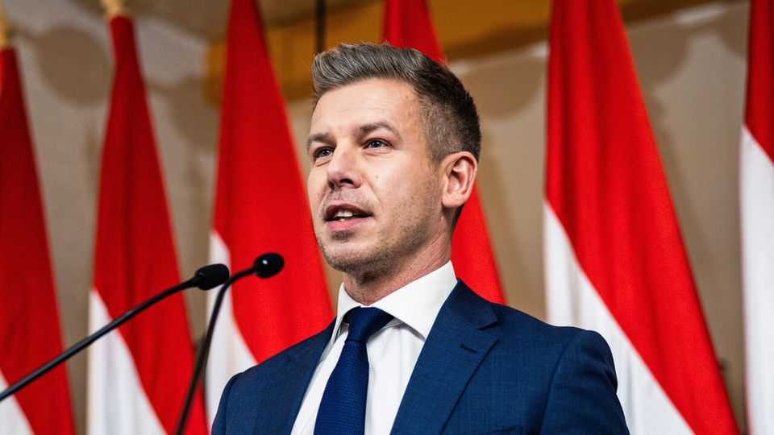
当被告知我们的记者身份后，他们突然拒绝讨论政治话题。马加尔先生（Magyar）正激励着匈牙利人，尤其是年轻人，自2010年奥班先生（Orban）重新掌权以来，他是唯一能与之媲美的政治人物（他曾于1998-2002年担任过一届）。蒂萨党（Tisza）领导人的崛起部分归功于他的个人魅力。他体态健壮，衣着得体，通常穿着卡其裤和修身白衬衫，与逐渐白发的奥班先生形成鲜明对比。他精力充沛，过去两年来在全国各地连绵不断地举办集会。但他的吸引力主要来自于对腐败的抨击。自奥班掌权以来，执政党自由党（Fidesz）已基本掌控了司法和媒体；总理的亲信们变得极为富有。法治的破坏导致欧盟暂停了数十亿欧元的援助。
如果马加尔（Márton György Magyar）在4月12日的选举中获胜，他承诺将彻底整顿政坛，打通欧盟资金渠道，并重启匈牙利停滞的经济。"当经济状况良好时，人们不太介意腐败问题，"一位在奥地利长期居住的商人表示。但自2022年底以来，匈牙利的GDP增长一直疲软。去年3月，政府审计发现与该国央行相关的基金会存在大量不规范操作，涉及超过10亿美元的资金去向不明。在最新排名中，透明国际（Transparency International）连续第三年将匈牙利列为欧盟最腐败的国家。马加尔正处在一个可以利用公众愤怒情绪的有利位置。他于2024年初崭露头角，当时他揭露了匈牙利自由党（Fidesz）试图保护掩盖儿童性侵案件的官员。■
作为长期隶属于曾将妻子任命为司法部长的政党的成员，他掌握内部信息。他接手当时仅是微不足道分裂党派的蒂萨党，经过数月的激烈竞选，于2024年6月欧洲议会选举中赢得30%选票。此后马加尔先生行事谨慎。他的政治立场属于中右翼，避开了诸如批评奥尔班先生对乌克兰敌对态度等明显自由主义立场。相反，他聚焦于腐败、通胀及公共服务恶化，尤其是医疗体系。他彻底与过去十年领导反对费迪斯党（Fidesz）的政党划清界限，无论这些政党是自由派还是社会主义派。蒂萨党在11月选出的议会候选人大多是政治新手，但在各自社区中拥有显著地位。过去一年多来，民调显示蒂萨党领先于费迪斯党。■
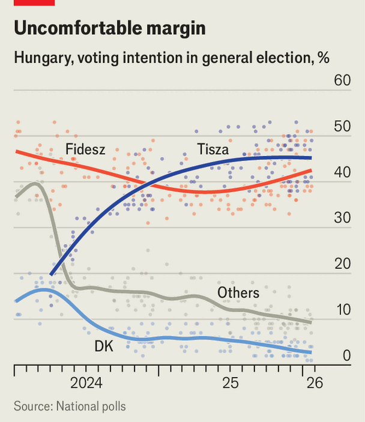
民调机构Median最新民调显示，新势力领先40%对33%。支持Fidesz的媒体指责马加尔在离婚期间涉及勒索和家暴，但马加尔否认这些指控，公众也未对此过于关注。私人股权投资人士克里斯蒂安·奥班（与总理无亲属关系）表示：“马加尔展现出特氟龙般的特质，就像特朗普一样。”但民调领先并不等于最终胜利。“这将是一场自由但不公正的选举，”布达佩斯智库Political Capital的彼得·克雷科警告道。Fidesz在资金和宣传上占据巨大优势。奥班正在分发福利：原本针对三孩以上母亲的终身所得税豁免政策，现将扩展至二孩母亲。1月养老金者获得额外13个月工资，2月将再获14个月工资。■
公共广播机构成为匈牙利青年党（Fidesz）的扩音器，几乎所有乡村地区的本地报纸也扮演着类似角色。最关键的是匈牙利选举制度对青年党的系统性偏袒，奥班总理为此耗费了十余年时间进行完善。在旧制度下议会共有386个席位，其中176席由单选区选举产生，其余通过比例代表制分配。2011年青年党推动通过法律，将席位数削减至199个，其中106席代表单选区。作为最大政党，青年党通常能占据多数单选区席位，夸大自身优势，同时通过划分选区进一步扩大胜算。咨询公司欧亚集团（Eurasia Group）认为，蒂萨需领先青年党4至5个百分点才能在议会取得多数席位，目前来看这似乎是个稳妥的赌注。■
奥班试图将马加尔污蔑为欧盟的傀儡。蒂萨党领袖则似乎有意避免与国际自由主义者有任何关联。在访问匈牙利之前，本报驻记者曾安排与多名蒂萨党候选人进行采访。抵达布达佩斯后，所有采访均被突然取消。■ 为掌握欧洲最大新闻动态，请订阅我们的周度专属简报《Café Europa》。
§042 欧洲原题：The Paris Metro is getting a dazzling extension · 板块：Europe · 栏目：欧洲
光之城
巴黎地铁的新站点——维莱吉夫-古斯塔夫·鲁西站，以其闪烁的扶梯晶格结构和圆形玻璃天窗，成为一座明亮的建筑杰作。据建筑师多米尼克·佩鲁（Dominique Perrault）介绍，设计灵感源自“倒置摩天大楼”的概念：邀请乘客在不陷入黑暗、恐惧或与城市脱节的状态下，向地下延伸。即便站台以金属管状结构横跨扶梯空间，其上仍设有通向空气流通中庭的窗户。12月，维莱吉夫站荣获“巴黎凡尔赛奖”（Prix Versailles），被评为了“世界上最美的车站”。 ■
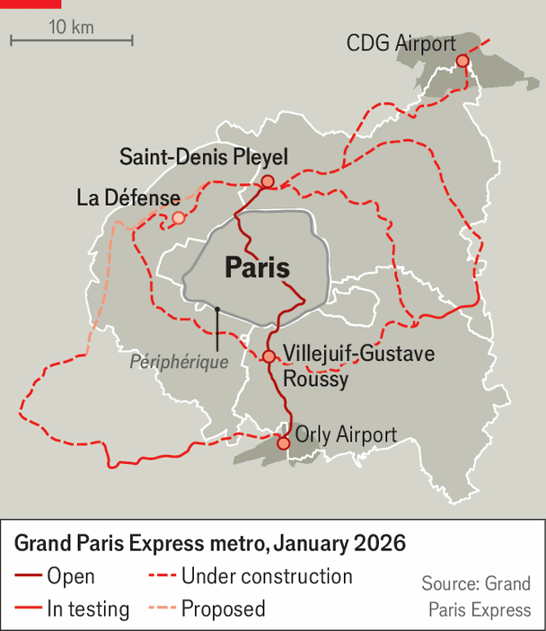
大巴黎正在建设首都地铁网络近半个世纪以来最大规模的扩建工程。维莱杰夫站（Villejuif）作为地铁14号线延伸段的一部分，未来将与正在建设的四条全新无人驾驶地铁线路之一相连。这六十八座新站将使地铁系统总长度增加200公里（120英里），形成环绕外郊的环线（见地图）。这是欧洲规模最大的公共工程之一，总预算预计将达到400亿欧元（480亿美元）。巴黎地铁的标志和入口长期以来一直是标志性景观，但其车站本身却较少被关注。赫克托·吉莫尔（Hector Guimard）设计的花卉装饰新艺术运动风格入口，最初于1900年启用。20世纪20至30年代则出现了灯杆上悬挂的铸铁“METRO”标识。其他新站也颇具视觉吸引力。■
一、位于巴黎北部工业气息浓厚郊区的圣但尼普莱尔站（Saint-Denis Pleyel）曾获得建筑奖亚军（与悉尼加迪加尔站、广州白云站一同获奖）。位于巴黎商业区的拉德方斯站（La Défense）如今拥有一座令人惊叹的教堂级规模的快线延伸站体，站台采用竹材装饰。如今的现代化车站不仅展现设计美学，更旨在打破巴黎市区——即 périphérique 环线内的高端区域——与首都常陷困境的外围郊区之间的隔阂。巴黎大区主席瓦莱丽·佩切雷斯（Valérie Pécresse）去年推出统一票价政策，以避免对长途通勤者造成额外负担。■
她表示，这一切都是为了打造“一个无国界的地区……无论居民身处何地，都能享有同等尊严”。在法国，这意味着风格，而不仅仅是便利。■ 要了解欧洲最重要的新闻，请订阅我们的周度专属简报《Café Europa》。
§043 欧洲原题：How its long-lost empires still shape · 板块：Europe · 栏目：欧洲
试想，如果欧洲拥有统一的军队。这个人口超过美国的富饶大陆，今日会是地缘政治上的边缘角色吗？显然不会。由数百万德国人、波兰人等组成的统一武装力量，将使胆怯的欧洲人摆脱俄罗斯的复仇主义和对美国抛弃的恐惧。可惜，如今由27个国家组成的欧盟仍保留着27支微型军队，各自在本国指挥下运作，重复着邻国的军事行动。然而，将军事事务视为纯粹的国家事务并非欧洲一体化的最初蓝图。
根据1952年签署的一项条约，当时后来成为欧盟的组织正在成立之际，法国、德国、荷兰等国同意以合并武装力量、统一指挥体系作为更紧密联盟的起点。若真实现这一设想，欧洲或将诞生一个在军事力量投射上毫不逊色于监管吸尘器功率的超级国家。欧盟之所以未能转向硬实力，很大程度上源于至今仍在塑造欧洲的帝国遗产。1954年，当法国议会准备批准统一军队条约时，问题浮出水面：将马赛或巴黎的防卫权交给部分由德国控制的军事力量，这在二战后不久便令人心生不安。
但更大的担忧是，这支欧洲军队可能不愿执行维持法国殖民地秩序的脏活。卢森堡军官会镇压阿尔及利亚异见者吗？比利时士兵会应命射杀印度支那叛军吗？答案恐怕是否定的。法国最终放弃了这一计划，欧洲转而专注于整合煤钢资源而非坦克，至今仍依赖美国的善意来保障安全。欧洲大部分昔日的大国早已在数十年前就承认了那些要求独立的海外领地的独立地位。但该大陆的殖民历史以无数方式影响着当下。曾统治全球大片地区的帝国——一个世纪前，法国、英国、葡萄牙、荷兰等国的帝国统治着全球三分之一的人口（非欧洲地区）——一些国家在处境受限后难以适应。■
偶尔，昔日帝国的残余仍会引发关注，如丹麦最近与格陵兰的事件。美国总统唐纳德·特朗普宣称：“他们500年前曾用船登陆那里，这并不意味着他们拥有这片土地。”（实际上更接近1000年前，而如今却如此。）帝国终将消亡，但帝国思维有时仍存于世。殖民时代最持久的后遗症或许是人们对昔日辉煌的执念。一些（主要在西方）欧洲国家仍以全球大国自居，尽管他们早已应将自身定位为区域强国。地图上，众多遥远领土仍保留着欧洲国家的颜色。凭借在太平洋地区少数领地，法国试图在整个印太地区扩大影响力，这让希望其专注欧洲防务的美国人感到沮丧。
昔日权力的幻象对英国打击最重。殖民帝国的纽带让英国在数十年间游离于欧盟之外，它将目光投向前殖民地寻求欧洲以外的贸易机会。2016年，脱欧派向选民描绘了一幅愿景：英国可脱离欧盟，转而与英联邦国家贸易。可惜一些人信以为真。如今帝国的痕迹可见于马德里、布鲁塞尔或伦敦的街头。拥有殖民地并非吸引大量移民的必要条件；例如德国从无殖民关系的土耳其引进工人。但帝国创造了语言和商业的联系，这使得阿尔及利亚人迅速涌入法国、安哥拉人涌入葡萄牙、巴基斯坦人涌入英国等现象成为可能。对大规模移民持怀疑态度的人士认为这是帝国的反扑，一种令人不快的历史回响。但通常而言，这种联系是福音。■
当西班牙经济需要劳动力时，它大量接纳了讲西班牙语的委内瑞拉人；本地人无需开始用英语点他们的浓缩咖啡。帝国的记忆仍具有分裂的力量。一个分歧存在于各国内部。对许多人，尤其是左翼人士而言，殖民时代是耻辱的源头。埃马纽埃尔·马克龙在2017年竞选法国总统期间，将殖民主义称为“对人类的罪行”。右翼人士则更倾向于强调殖民者在偏远地区修建的铁路、学校和教堂——却不愿提及镇压和掠夺。（少数前殖民者，包括荷兰人，曾为自己的行为道歉；但更多时候只是含糊其辞地表达“悔意”。）另一道裂痕存在于欧洲国家之间，将曾经拥有帝国的国家与未曾拥有帝国的国家对立起来。
偶尔，那些曾拥有殖民地的国家仍低声细语地将它们视为非正式影响力范围的一部分。作为西非前帝国的法国，相较于瑞典等国，始终更可能在受邀情况下派兵驻守该地区。在华沙、塔林乃至基辅，这种思维模式被视为与俄罗斯对前帝国（包括乌克兰及中欧大部分地区）的主张如出一辙。欧洲人应从过往帝国时代汲取的教训是：沦为更强大势力的猎物往往比想象中容易。几个世纪以来，欧洲通过征服塑造了外部世界。如今却感觉是外部力量在重塑欧洲。将欧洲称为“美国的数字殖民地”的说法，若说有什么不准确之处，那也只是低估了现实。■
特朗普强加的“实力至上”地缘政治回归，让人联想到欧洲人曾经掠夺世界的年代。但若帝国时代真的重临，这次或许轮到欧洲成为被掠夺的对象。■《经济学人》订阅者可订阅我们的观点电子报，汇集最佳评论、专栏文章、特稿及读者来信。
§044 欧洲原题：Lots of world leaders are attacking Europe. Why? · 板块：Europe · 栏目：欧洲
众多世界领导人正攻击欧洲。为何？往往，针对欧洲的批评最能从美国、中国等国的国内政治中找到解释。
在和平奖风行的当下，有人应该为欧洲提名这一奖项。在分歧四起的时代，纷争中的世界领袖们却共享一个信念：欧洲人软弱又令人讨厌。唐纳德·特朗普称欧洲人不感恩且自取灭亡，移民让欧洲城市“面目全非”。西方外交官在北京的悲观分析中指出，中国领导人习近平视欧洲为易分化的无竞争力大陆。甚至让俄罗斯与乌克兰找到共同立场。
■
欧洲领导人早已习惯听到弗拉基米尔·普京指责他们阻碍特朗普在乌克兰的和平努力。但当乌克兰总统弗拉基米尔·泽连斯基在达沃斯世界经济论坛上公开批评欧洲盟友只说不做的时候，这却令他们感到震惊。不可否认，欧洲大陆确实面临难以解决的难题。在国际舞台上，欧洲各国政府往往显得自满且缺乏自省，他们做出的承诺却缺乏实现的手段，尤其是英国和法国这两个趾高气昂的国家，如今已陷入财政吃紧的困境。由27国组成的欧盟运作机制迟缓，常常被谨慎态度和琐碎的国家利益所拖累。当特朗普的财政部长斯科特·贝森嘲笑该集团决策缓慢、依赖诸如“令人畏惧的欧洲工作组”等地缘政治工具时，他的讽刺确实切中要害。
尽管如此，这种对欧洲的贬低显然过度了。它既反映了抛出侮辱性言论的领导人自身，也反映了现实中的欧洲。特朗普、习近平、普京和泽连斯基等总统往往不是冷静评估该地区的优势与缺陷，而是频繁谈论本国的政治选择。在达沃斯论坛上，特朗普称丹麦“不感恩”，因为美国在1945年将格陵兰岛归还丹麦，而该岛此前曾被美军占领：“我们当时怎么那么傻，把格陵兰岛还给丹麦？”他愤愤地说道。特朗普还称北约联盟是一场单方面交易，称：“我知道我们会为他们挺身而出，但我不确定他们是否会为我们挺身而出。”在同一篇（冗长的）演讲中，他转向了美国人支付的高昂处方药费用，抱怨欧洲人购买相同药物的成本仅为美国的几分之一，因为美国“在补贴世界”。■
美国国务卿马可·鲁比奥痛恨欧洲国家的搭便车行为。他特别点名法国和德国，称这两个富裕国家削减国防开支，以避免削减福利计划、失业救济金、提前退休至59岁等福利。确实，与美国的联盟使欧洲领导人对国家安全问题在苏联解体后变得过于自信。但欧洲人并未操控美国，使其按他们的意愿行事。美国认为，掌控一个强大的北约符合其自身利益。如果特朗普认为将格陵兰岛交还给丹麦是愚蠢之举，他的不满对象应是时任总统哈里·杜鲁门，因为正是他的决定。特朗普在达沃斯论坛上向听众表示，格陵兰岛如今的战略重要性比1945年时更高。实际上，杜鲁门曾对交还格陵兰岛深感忧虑，因为该岛控制着关键的空中和海上通道。
但他也反对帝国主义，因此放弃了购买格陵兰岛的提议，转而支持一项确保美国在该岛设立基地的条约。杜鲁门认为，仁慈是美国的超级力量。战争结束后多年，他仍惊叹于自己的国家如何“彻底击败”德国和日本，又“将它们重新带回国际社会”。他坦言：“我愿意相信，只有美国能做到这一点。”政治选择是欧洲人药品价格较低的主要原因：欧洲的大规模公共健康体系能与药企谈判获得折扣，但代价是欧洲人对新药和高价疗法的获取受到限制。直到2023年，美国为老年人设立的医保计划（Medicare）才被禁止谈判折扣。至于国防与福利之间的权衡，美国若愿意，完全可以承担法国式的失业救济和提前退休政策。■
像鲁比奥这样的共和党人长期以来都将此类支出视为自残行为。鉴于法国严峻的公共财政状况，他们或许言之有理。至于中国，随着其领导人追求国家伟大与自给自足，他们选择压低工人工资、容忍严苛的劳动条件，并将公共支出转向航母和导弹等军事项目，而非高质量的医院和养老金体系。对中方领导人而言，淡化欧洲更温和社会契约的益处是一种安慰。普京对欧洲的蔑视有诸多根源。但其偏好的意识形态追随者承认，被欧洲集团排斥的失落感是其中之一。正如亲克里姆林宫学者谢尔盖·卡拉加诺夫所言，俄罗斯不得不放弃对欧洲的“幻想”，接受其作为面向东方的欧亚大陆强国这一现实。■
泽连斯基的不满或许可以理解：欧洲曾对俄罗斯威胁反应迟缓。但他也过于苛责。如今欧洲国家已成为乌克兰最慷慨的援助者。他批评欧盟缺乏统一是不明智的，称其为“由众多中小国家构成的碎片化万花筒”。乌克兰渴望加入该组织的诉求本身已属雄心勃勃，若欧盟是联邦超级国家并拥有统一规则，其入盟难度将更大。对一个在反腐与治理问题上回避艰难抉择的国家而言，或许最现实的入盟希望，是灵活的欧盟给予其特殊临时成员资格。向贝森特询问忽视欧洲的风险。他不久前调侃美国要求拥有格陵兰岛的诉求被工作组回应，可信的贸易战威胁令市场暴跌，特朗普最终退让。欧洲确实令人头疼。■
并非注定会弱。■ 《经济学人》的订阅者可订阅我们的Opinion通讯，该通讯汇集了我们最优秀的社论、专栏、特稿和读者来信。■
§045 英国原题：How London can rise again · 板块：Britain · 栏目：英国
“我们始终将纽约列在推介清单中并试图为其辩护，但显而易见的是，主要发行人会选择伦敦而非纽约。”2007年一位匿名银行家向麦肯锡咨询公司如此表示，表面上他是在谈论企业上市地点的选择，但这句话揭示了更深层的现实。当时伦敦正处于上升期，纽约市长迈克尔·布隆伯格觊觎其成功，因此要求咨询公司分析纽约如何重夺领先地位。最终报告犹如一封情书般赞美伦敦，盛赞其稳定的监管体系、卓越的法院系统以及对全球人才的磁吸效应。■
近二十年后，布鲁门特里特先生的担忧似乎来自另一个世界。自2007年以来，伦敦经济经历了严峻考验，先后受到金融危机、脱欧和疫情的冲击。其股市跌幅尤为剧烈：2025年伦敦跌出全球首次公开募股（IPO）市场前20名，被墨西哥和阿曼超越。但伦敦的问题远不止于证券交易所。2007年前十年，伦敦居民每小时产出增长30%。然而此后，该市劳动者实际产出却持续下降：2023年每小时产出比金融危机前水平低2%。伦敦经济或许有所下滑，但尚未彻底衰落。它仍保有麦肯锡报告中列出的诸多优势。■
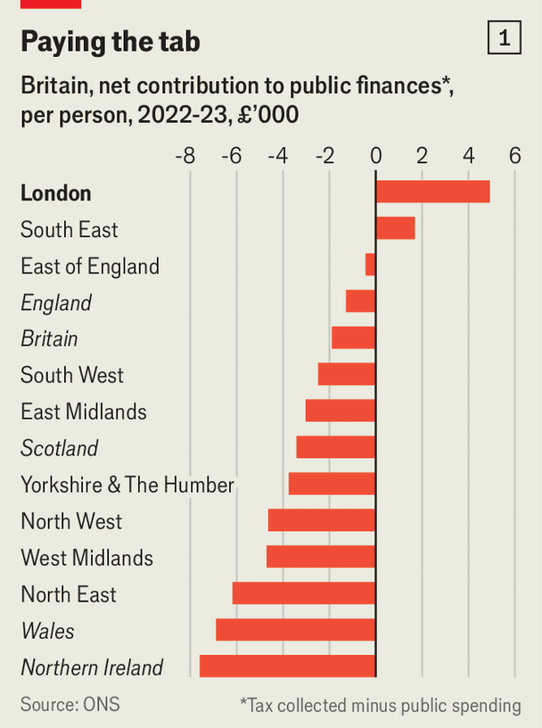
乘坐地铁前往泰晤士河畔的温莎，四周的哥特式法院大楼和爱德华时代的大厅构成了全球法律中心：全球40%的商业和金融交易受英国法律管辖。从那里步行15分钟抵达西区，这里是全球最大的剧院区，2024年售出1700万张门票，比百老汇多出40%。穿过海德公园即可抵达帝国理工学院，该学院在QS世界大学排名中位列全球第二。支撑这些优势的是伦敦深厚的人才储备：该市劳动力中超过60%拥有大学学历，而纽约则不足45%。伦敦增长的最大希望在于留住这些高智商人才。要做到这一点，工党政府需要优先推动伦敦的发展，并解决当前制约城市发展的因素。■
英国首相基尔·斯塔默（Keir Starmer）去年9月在党大会演讲中仅提及伦敦一次，用以论证政府应加大对其他地区的投资。此举或许安抚了不满的北方议员，但实属错误。伦敦历来是英国经济增长的引擎，一旦其经济放缓，整个英国经济也将随之拖累。2007年至2019年间，伦敦生产力增长的流失占全国经济放缓的42%。经济多元化虽属必要，但需时日。若工党希望在本届议会期间提振增长，便无法承受首都经济迟滞的代价。伦敦的强劲增长对公共财政也至关重要：该市是仅有的两个地区之一（另一为东南部），政府收入高于支出（见图表1）。伦敦当前的问题在于就业岗位质量，而非数量。■
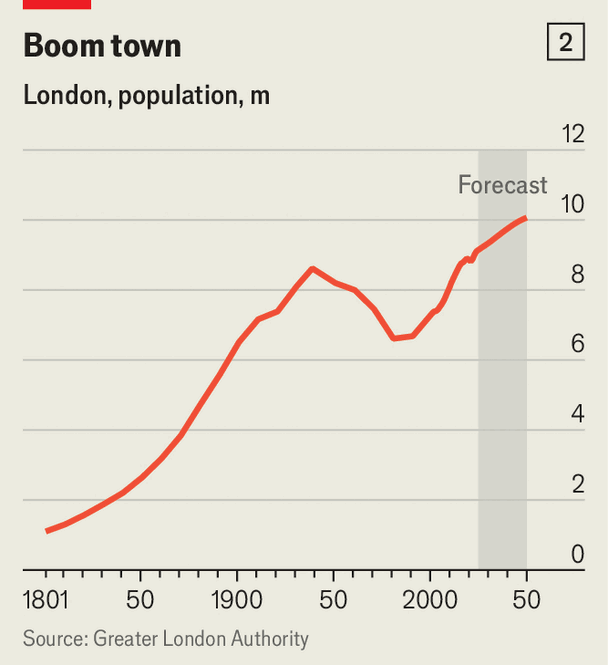
在战后长期人口下降之后，自20世纪80年代以来，伦敦人口迅速增长，预计在持续的国际移民背景下仍将保持增长态势（见图表2）。伴随失业率下降，伦敦劳动力规模从2010年的480万人增至2025年的640万人。然而尽管就业市场出现显著扩张，伦敦整体经济增长率却从1999年至2007年间的年均4%降至近年来的略高于2%。原因在于生产率下降。伦敦金融服务业的困境无疑解释了部分生产率问题。2008年至2024年间，该行业人均产出年均下降超过2%，降幅超过其他所有主要行业（公用事业除外）。部分原因在于金融危机前过度冒险带来的激增增长不可持续。■
但该行业复苏进程却受到危机后高税收和全球性监管收紧的拖累。英国脱欧进一步加剧了这一困境，限制了企业向欧盟出口金融服务的能力。但伦敦的问题不能仅仅归咎于银行家。一份由牛津经济咨询公司（Oxford Economics）发布的报告指出，伦敦生产率增长放缓已波及大多数行业，从交通运输到房地产（见图表3）。要理解这一现象，不妨先思考伦敦为何对科技初创企业或工程公司而言具备生产力。伦敦人口密集，大量才华横溢的人才在近距离内共事，这为新思想的产生提供了沃土，使员工能够专精领域，并高效共享基础设施。但要让这一切发挥作用，高技能人才必须愿意在此定居，并能便捷地互联互通。■
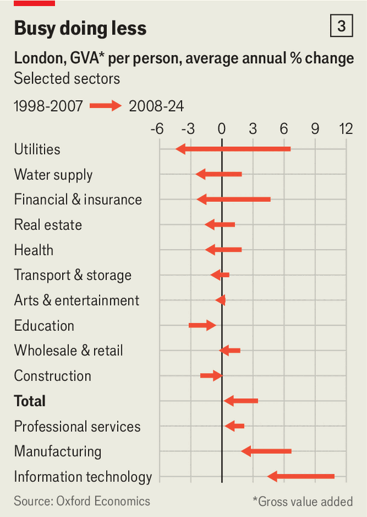
伦敦如今在两个方面都面临严峻挑战；由《经济学人》委托More in Common（更多共识）进行的一项民调显示，仅四分之一英国人认为伦敦是理想的居住地。高昂的住房成本成为人们不愿在此定居的主要障碍。根据牛津经济研究院数据，住房开支约占所有家庭可支配收入的30%，远高于巴黎（23%）和东京（24%）。尽管伦敦房价在过去几年的实际价值有所下降，但加息政策已吞噬了任何储蓄空间，租金却持续攀升。结果导致居民生活压力加剧：在扣除住房开支后，伦敦居民的消费水平比英国平均水平低7%，尽管其收入高出40%。人们正用脚投票。即便国际移民大量涌入，越来越多伦敦居民却选择迁往英国其他地区。2023年有近13万人迁出，较2010年的4万人显著增加。
其中不乏支撑城市生产力的创业者和科学家。那些选择留下的人往往只能负担得起更远距离的居住地，这意味着通勤时间增加，工作时的生产效率下降。城市基础设施问题使这些人的工作更加困难。宽带网络速度仅为纽约的一半，而伦敦则面临英国电价在富裕国家中居高不下的困境。希思罗机场（Heathrow）作为城市主要机场，目前运行负荷已达99%，是造成延误的主要原因。实验室空间短缺让生命科学公司望而却步。高昂的商业办公空间成本则挤占了促进增长的研发（R&D）和软件投资。■
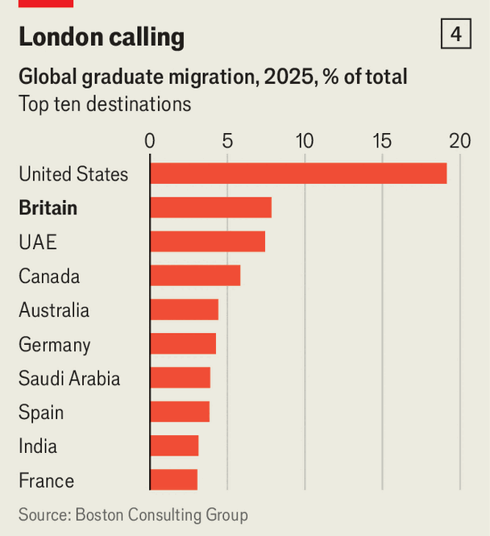
政府已采取部分措施应对这些瓶颈，包括支持希思罗机场第三条跑道建设、发布推动住房建设的计划（包括允许在车站周边增加建筑）。但这些措施仍显不足。伦敦年度住房建设目标为88,000套，但据咨询公司Molior估算，2025年实际开工的私人住宅不足6,000套。关键基础设施项目如贝克卢线延长线仍陷僵局；甚至第三条跑道也仅计划于2035年建成。若要维持伦敦对全球人才的吸引力，缓解这些制约至关重要。波士顿咨询集团（BCG）的一项调查显示，伦敦始终位居全球最具吸引力的海外工作城市榜首。■
除顶尖大学和成熟的就业市场外，潜在移民还被伦敦的地理位置和英语语言所吸引。但波士顿咨询公司（BCG）的分析也显示，尽管英国仍是仅次于美国的高技能移民第二热门目的地，但其在高技能移民中的占比去年有所下降，阿联酋（United Arab Emirates）正逐渐缩小差距（参见图表4）。高昂的住房成本削弱了伦敦的吸引力，更严格的移民规则以及脱欧的遗留影响也令其吸引力大打折扣。伦敦习惯了周期性的衰退，从1666年的伦敦大火到二战期间的不列颠空战。上世纪70年代，随着东伦敦码头关闭和工厂工作消失，伦敦的未来一度陷入存疑。然而每次危机过后，这座首都总能凤凰涅槃般实现重生。上世纪80年代，这种转型体现为金融服务业的繁荣。■
在未来的几十年里，伦敦凭借丰富的人才储备，具备良好条件参与人工智能革命。但若要让伦敦再次崛起，政界人士必须采取更多措施，使这座城市更具吸引力、宜居且交通便利。其成功取决于确保推动复兴的人能够负担得起生活成本。■ 如需获取关于英国重大事件的专家分析，请订阅我们的周度订阅者专属周报Blighty。
§046 英国原题：Sadiq Khan is not the mayor right-wingers imagine him to be · 板块：Britain · 栏目：英国
“他是个可怕的、邪恶的、令人作呕的市长。我认为他干得非常糟糕。”12月时任美国总统唐纳德·特朗普如此抨击萨迪克·汗。这位工党伦敦市长经常成为特朗普及其美国和英国追随者发泄的对象。在萨迪克·汗所管辖的城市中，他似乎在这些人的脑海中占据着比实际更重要的位置。2024年5月，近110万伦敦市民投票支持他，获得44%的选票，赢得第三个任期，成为英国政坛获得直接授权最多的政治人物。然而他的权力有限，且使用这些权力时颇为克制。 ■
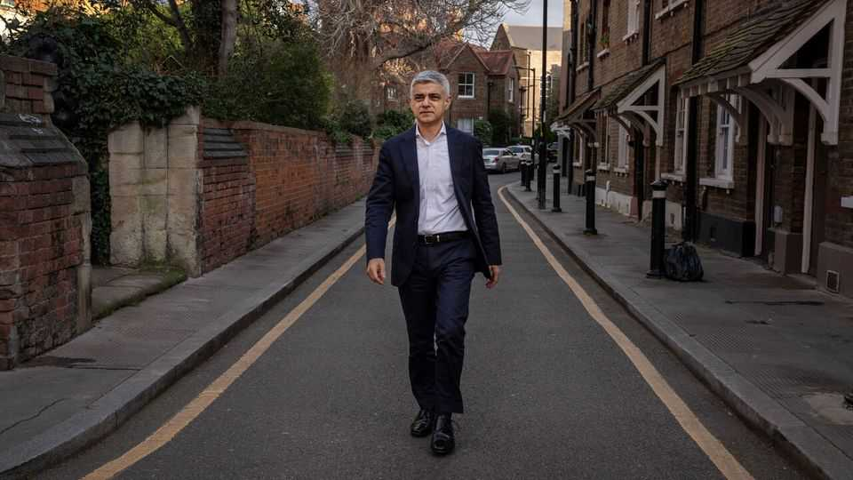
肯·利文斯通于2000年成为伦敦首位直选市长，几乎可以说是这个职位的缔造者。他的继任者鲍里斯·约翰逊充分利用了自己的公众形象，但几乎没怎么过问城市管理。相比之下，萨迪克爵士的影响力更弱。伦敦政治讲师杰克·布朗表示，这位市长多次呼吁中央政府下放更多权力，但很少真正推动落实。在任期内，萨迪克爵士曾组建伦敦金融委员会，该委员会得出结论认为伦敦应被允许征收旅游税。财政部最终于去年妥协，尽管大曼彻斯特市长安迪·伯纳姆——这位更具说服力的工党政治人物，擅长利用自身声望——的竞选活动可能起到了关键作用。■
萨迪克·汗（Sadiq Khan）也渴望掌控私人住宅租金，但幸运的是，他并未获得这一权力。他最大的成就是改善伦敦空气质量。2017年，萨迪克·汗引入了“毒性收费”（toxicity charge），对驾驶高污染车辆进入伦敦市中心的市民征收费用。2019年，收费区域扩大并更名为超低排放区（Ultra-Low Emissions Zone，ULEZ）。2023年，尽管资深工党政客担心会引发车主反弹，萨迪克·汗仍将ULEZ扩展至整个伦敦。结果是伦敦市民的健康状况改善，早逝人数减少。但这也体现了这位市长一贯专注于处理无形之事的风格。特朗普对这位市长的政绩恐怕知之甚少，也漠不关心。他攻击萨迪克·汗，只为向其种族民族主义支持者传递信号：一位亚洲穆斯林男子不可信赖。■
伦敦市长萨迪克·汗（Sadiq Khan）以与特朗普旗鼓相当的强硬姿态，通过捍卫这座城市免受这位在伦敦深孚众望的总统攻击，赢得了伦敦市民的广泛支持。这场争执对双方都有利。令人遗憾的是，伦敦因此蒙上了污名。伦敦市长的职责并非直接管理城市，而是代表伦敦，甚至成为其象征。萨迪克在这方面表现突出，或许他本人或伦敦市民都尚未意识到这一点。前市长利文斯通（Ken Livingstone）刻意迎合伦敦的刻板印象——爱说大话的伦敦佬（Cockney wheeler-dealer）。约翰逊（Boris Johnson）则唤起另一种刻板印象，即放荡不羁的自由派（他重返全国政治后，虽仍放荡，却不再自由派）。萨迪克代表的伦敦市民，正是他们真实的样子。他思想进步，乐于主持骄傲游行（Pride parade），谴责种族主义。但他在实践中却显得保守。萨迪克常提及自己的信仰与家庭——与特朗普不同，他似乎并非虚张声势。■
他在校期间便与妻子萨迪娅·汗（Saadiya Khan）开始交往。在赢得第三届任期后，他向家人道歉，为竞选期间他们所经历的困扰。伦敦兼具自由开放与虔诚信仰的特质。首都仅有27%的人表示无宗教信仰，而英格兰和威尔士其他地区则为39%。城市家庭关系更为紧密。2021年最新人口普查显示，伦敦63%的儿童生活在由已婚夫妇组成的家庭中，这一比例高于英国其他任何地区。萨迪克爵士性情古怪。他允许自己对政敌的厌恶表露无遗，有时甚至流露出更个人化的疑虑。他曾表示，若早知竞选市长需付出的代价——包括自由受限与死亡威胁——或许就不会参选。但若他显得不满，伦敦市民同样如此，他们报告的生活满意度低于平均水平。■
首都的自由派、传统派、脾气暴躁的市民终于找到了一位让他们感到合适的人选。■ 如需获取更多关于英国重大事件的权威分析，请订阅我们的周度专属简报Blighty。
§047 英国原题：London is Labour’s last bastion · 板块：Britain · 栏目：英国
伦敦居民常被刻板印象所描绘。他们很可能拥有高薪职业，比如律师（或政客）。他们大概会吃素，支持伦敦某支足球队（比如阿森纳队），并在时尚街区的酒吧或咖啡馆（比如肯特郡镇）闲逛。对许多英国人而言，想象一个典型的伦敦人，可能会联想到看起来与斯基·斯塔默极为相似的人。因此，民调显示，如果今天举行选举，伦敦是唯一一个可能重新选斯塔默政府的英国地区。 ■
《经济学人》的统计模型显示，在常规情况下，工党（Labour）可能赢得英国98个席位，其中五分之二将在伦敦产生。这些数字掩盖了工党在首都的弱点。五月份的地方选举可能给工党带来重大损失。作为工党领袖，凯尔·斯塔默（Sir Keir）对他的家乡伦敦态度含糊（这也是他与许多伦敦同乡共有的特点）。他呼吁将权力分配和投资扩展至伦敦及东南部以外的地区。这反映了英国选民重心自2015年大选后向英格兰北部转移的趋势。随着选民围绕脱欧议题分化——多数伦敦居民反对脱欧——伦敦的选情转向工党。伦敦的边际选区占比从2015年的14%降至2024年的8%。■
与此同时，政界人士争相争取那些在脱欧公投中投下支持票的北部城镇选民。即便如此，将伦敦人描绘成固守传统的工党支持者这一刻板印象并不准确。基尔领导的工党在2024年伦敦地区获得43%的选票，这是自2010年以来该党在大选中获得的最低支持率。此后，民调平均显示这一数字已降至约27%。尽管工党的选票在伦敦的表现比其他地区更为稳固——可能得益于其在富裕选民和少数族裔群体中的表现——但该党正面临左翼和右翼的双重威胁。远非铁板一块，伦敦如今已成为英格兰政治分化最严重的地区。这座城市尤其对绿党极具吸引力，因为绿党在年轻选民、学生和毕业生群体中表现突出。绿党激进的领导人扎克·波兰斯基是伦敦议会成员。■
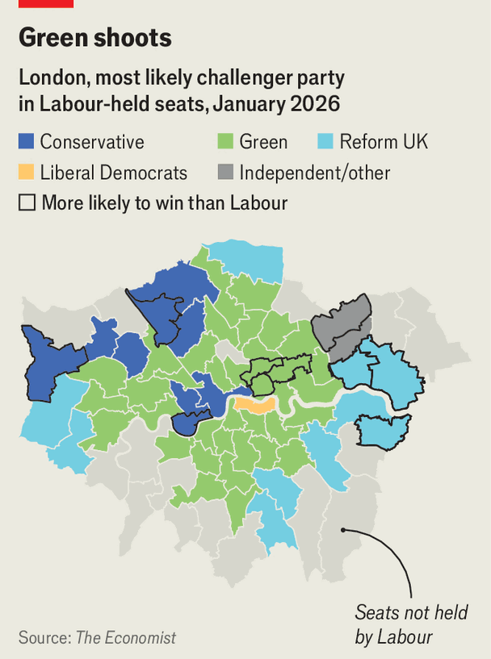
该党在市中心周边的“波西米亚式”街区拥有坚实的支持基础，从哈克尼（Hackney）到皮克汉姆（Peckham）（见前页地图）。左翼独立候选人也在伦敦取得成功。前工党领袖、被逐出党的杰里米·科尔宾（Jeremy Corbyn）于2024年以独立议员身份连任伊斯灵顿北选区议员；莱恩·莫哈德（Leanne Mohamad）在伊尔福德北选区以支持加沙的平台接近击败现任卫生大臣韦斯·斯蒂灵（Wes Streeting），仅差几百票。尽管右翼政党难以在左翼倾向的城市获胜，但他们仍有大量潜在选民可能给工党制造麻烦。在伦敦西部富裕地区，保守党希望夺回2024年失去的席位。该党近年来在印度教徒和犹太人中表现尤为突出，其中许多人居住在城市的西北部。■
改革英国党已选定两年后伦敦市长选举的候选人，可能在伦敦外围地区工薪阶层占多数的白人选区从工党手中夺取席位。对基尔·斯塔默而言，最糟糕的情况是各反对党都能在各自选区取得成功。这正是工党在5月伦敦32个区的1817名市议员选举中面临的挑战。这些席位上次选举是在2022年，当时工党在全国民调中的支持率超过当前的两倍。伦敦多数选区选举多名市议员，这种制度可能放大工党的潜在损失。受多名工党市议员叛逃支持而士气高涨的绿党正积极寻求突破。工党寄望于本地组织力量的强大，能动员足够选民压倒分裂的反对阵营。■
然而，对于对中央政府感到厌烦的伦敦市民来说，区议会（borough councils）或许成了最理想的出气筒。■ 如需获取更多关于英国重大新闻的专家分析，请订阅我们的订阅者专属周报Blighty。
§048 英国原题：London is far safer than violent viral videos will have you believe · 板块：Britain · 栏目：英国
如果你在TikTok上搜索“伦敦模拟器”，会出现一系列视频。多数是视频游戏片段，其中角色持刀、匕首或剑四处奔跑，击杀敌人。这就是伦敦的网络声誉：暴力频发之地，尤其是刀具犯罪。民粹主义政客煽风点火。前改革英国党议员鲁珀特·洛（Rupert Lowe）最近在X平台（原推特）上称伦敦“越来越像第三世界国家”，并“绝非女性安全之地”。他获得230万次浏览。数据却讲述另一番故事。伦敦的暴力犯罪率已连续多年呈下降趋势。
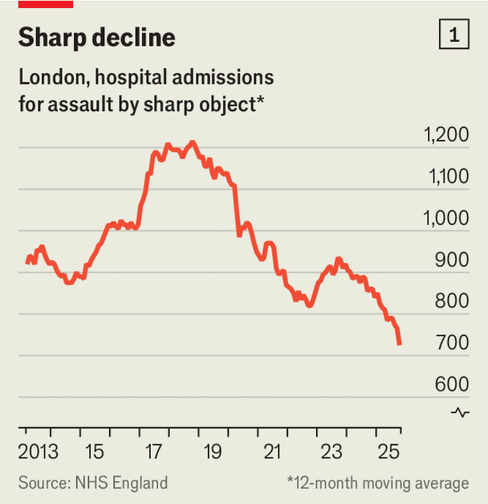
伦敦的年度入室盗窃案数量自2010年以来保持稳定，尽管人口增长了约100万。2024年因“利器袭击”入院的人数是近十年最低。每10万人中有1.1起谋杀案，为可比记录以来最低，伦敦比巴黎（1.3）或柏林（3.2）更安全。纽约是与伦敦规模相近的城市，曾以显著改善治安闻名，但其谋杀案数量几乎是伦敦的三倍。伦敦仍存在一些问题。游客被警告注意电单车劫手机事件，且盗窃案激增。但伦敦充斥暴力犯罪的感知似乎主要源于社交媒体擅长夸大其词。《经济学人》爬取了2020至2025年间所有提及“伦敦”及暴力犯罪关键词的X（原推特）帖子。■
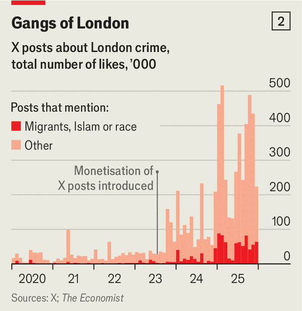
去年此类帖子数量是2020至2024年年均的两倍。这类帖子的受欢迎程度也显著上升。2025年平均每条帖子获得的点赞和转发量几乎是2024年的两倍。部分网络上的负面言论可归咎于移民问题。提及“伦敦犯罪”并同时涉及伊斯兰教、移民或种族的帖子比例，自2023年以来翻了一番。提及“伦敦斯坦”（右翼圈子用来哀叹首都所谓伊斯兰化现象的术语）的帖子数量自2020年以来也翻了一番。持续发布悲观言论能带来收益。煽动性内容更易获得点击量。如今X平台（即推特）已开始向创作者支付其帖子带来的互动收益。剑桥大学的乔恩·鲁岑贝克表示，这催生了大量以盈利为目的发布煽动性内容的虚假账号。■
要判断这些病毒式内容中有多少来自机器人或蓄意制造混乱的外国势力并不容易，但最具影响力的发帖人似乎都是英国本土的普通网民。机器人约占伦敦犯罪相关帖子的20%，但它们的帖子很少引起关注。YouGov最近的一项民调显示，目前61%的英国人认为伦敦不安全（较2014年的39%有所上升），改革党选民中这一比例更是攀升至85%。仅有三分之一的伦敦市民持相同看法，而绝大多数（81%）表示所在区域安全。正如往常一样，对抗网络恐慌的最佳良药是一剂新鲜空气——也许就是悠闲地沿泰晤士河漫步。■ For more expert analysis of the biggest stories in Britain, sign up to Blighty, our weekly subscriber-only newsletter.
§049 英国原题：How London became the rest of the world’s startup capital · 板块：Britain · 栏目：英国
在初看之下，伦敦的创业生态似乎是个讽刺。Home Grown Club，一家专为“值得结识的人”设立的私人会员制商务社交场所，提供奢华晚宴、“流动瑜伽”以及名为“从隐形到有影响力”的活动。Opus，一家为创业者打造的精选社群，董事会成员包括贝特丽丝公主（Princess Beatrice），最近还扩展至迪拜。若仅凭这些，很容易将英国首都视为依赖过往辉煌、拙劣模仿硅谷的空壳。但这种印象大错特错。伦敦是全球最适合创业的城市之一。■
它已诞生的独角兽企业（估值超10亿美元的初创公司）数量超过柏林、巴黎和东京的总和。其校友们正催生第二代企业。据数据提供商Dealroom统计，伦敦是全球第四大风投中心。2025年其初创企业共融资177亿美元，仅次于湾区、纽约和洛杉矶。伦敦面临挑战，它过早流失最具潜力的企业。为英国人提供外卖服务的Deliveroo近期被旧金山的DoorDash以29亿英镑（约39亿美元）收购；它是少数在伦敦日益萎缩的股票交易所上市的科技公司之一。尽管脱欧，伦敦仍是欧洲创业者的摇篮。连续政府打击商业信心，人工智能时代硅谷再次拉开差距，竞争对手的创业中心则迅速追赶。然而伦敦的创业群体依然蓬勃发展。■
伦敦持续成功的三大要素。最关键的是人才。伦敦不断吸引来自英国及全球的优秀人才。英国大学仍是创新的重要引擎：自2010年以来，获得超过1亿美元融资的深科技初创企业中，有43%源自高校衍生企业。（鉴于特朗普政府对科研经费的削减，这类企业对美国学者的吸引力也在上升。）机器学习领域专家的集中，吸引了全球AI企业如OpenAI，其首个海外办事处选择伦敦。Palantir则因伦敦的人才储备，将最大海外基地设于此。英国在富裕国家中也出人意料地开放。它仍是欧洲创业者最青睐的第二目的地，仅次于美国。■
为创业者提供的签证政策和对早期投资者的税收优惠有所帮助，而这座城市本身的吸引力同样不可忽视。除了丰富的文化氛围，伦敦还拥有可接受的气候（降雨量少于巴黎）、全民医疗保障和相对安全的街道。 Ipsos（调查公司）最近对31个国家的调查发现，伦敦是世界上最吸引人前往旅游、工作或居住的城市。这构成了第二个优势：文化。伦敦是全球最具多样性的创业中心之一。英国增长最快的初创企业中，超过一半由移民创立。多元化的公司通常创新速度更快，也更开放于全球市场。创业日历上充满了黑客马拉松、氛围编程活动以及从硅谷引进的速配式商业活动。■
像哈里·斯特宾斯（Harry Stebbings）这样的英国风投人士推崇中国“996”工作制——每周六天，从早上9点到晚上9点。创业者们通过诸如Opus这样的网络紧密联系在一起，该网络成员需经过“诚信、野心与原创性”的筛选，每年还会受邀参加达沃斯论坛与全球精英互动。资本是第三要素。伦敦在后期融资方面面临挑战（因此出现人才流失问题），但在早期阶段则擅长培育企业，并开始吸引更多专业投资者。自2020年以来，英国人口仅占全球1%，却已获得全球量子科技风投资金的18%。成果在密集的校友网络中显现，成功企业的员工离职后会成为下一代创业者的种子。■
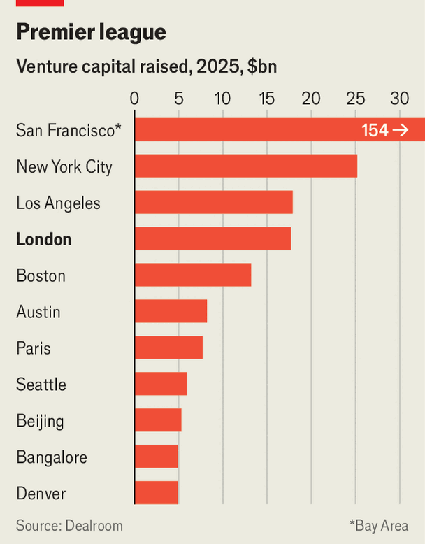
伦敦金融科技独角兽企业Revolut和Wise的前员工已创立超过230家初创公司，是柏林或巴黎的三倍。Revolut总经理詹姆斯·吉布森指出，该公司的员工被期望带着创意入职，竞标资金并内部运营小型企业。股权出售使早期员工得以套现（9月一次出售后，Revolut估值达750亿美元）。他们随后可成为天使投资人，或自行投资初创企业，如被称作Revolut“最激进的百万富翁”的艾伦·张，他便投资了可再生能源公司Fuse Energy。除金融科技领域外，2014年被谷歌收购的AI公司DeepMind也催生了一批雄心勃勃的初创企业。长期以招募毕业生并培育创始人著称的帕兰蒂尔和Uber，如今也在伦敦展开类似操作。
Palantir前工程师中曾身着连帽衫的群体正在布局聚焦国防、AI代理及气候风险分析的初创企业。然而，英国创业者吸引风险资本仍面临挑战。尽管工党政府不断强调增长，但其对创业者的态度却常显敌意；在秋季预算前，关于“退出税”的传闻已令许多创业者忧心忡忡。英国电信公司Virgin Media对2000家企业的调查发现，56%的初创企业表示对英国作为扩张之地的信心下降，60%的企业在过去一年曾考虑迁往海外。欧洲创业者可前往巴黎或斯德哥尔摩等仍属欧盟的新兴中心。迪拜等海湾枢纽凭借低税率吸引寻求提前退休的创业者（Revolut首席执行官Nik Storonsky近期已迁居此地）。但这些地方也在吸引年轻创业者。■
2025年，阿联酋宣布发起一项计划，目标是在2031年前成为全球创业中心。旧金山的吸引力最强。英国早已习惯大企业被加州抢走，如今创业者们更是夸张地提前离场。哈兹·霍布勒（Haz Hubble）如今已近三十岁，15岁便开始卖房，后在伦敦创办了创业公寓，吸引有志创业者共度睡眠剥夺的时光。2025年他搬到旧金山。“AI发展速度如此之快，如果你不在旧金山，就会落后数月。”他说。在伦敦，他用了三年才筹到60万美元；在旧金山，六个月便获得110万美元投资。16岁的英国编程天才托比·布朗（Toby Brown）在卧室创办AI初创公司后，获得硅谷100万美元投资，随即迁居湾区。伦敦仍是卓越的创业温床，但无法懈怠。■
如需了解英国重大事件的专家分析，请订阅我们的周报Blighty（布莱蒂）。■
§050 英国原题：The cost of the cost-of-living obsession · 板块：Britain · 栏目：英国
当北约因特朗普对格陵兰岛的意图而惊慌失措时，基尔·斯塔默爵士向英国发出声音。这位首相更像马丁·刘易斯——这位知名个人理财专家，其创办的Money Saving Expert网站提供消费建议。基尔·斯塔默爵士的演讲从西方安全话题跳转到生活成本问题，以及工党承诺削减铁路票价和冻结处方药价格。他说：“今天应对生活成本问题也意味着在国界之外展开行动。”仿佛Money Saving Expert即将转型为现代东印度公司，拥有自己的军队。■
生活成本问题始终潜伏在政府决策背后，无论是关乎国家大计还是派系斗争。工党大曼彻斯特市长安迪·伯纳姆（Andy Burnham）未能参选下议院议员并非因为有意取代基尔爵士（Sir Keir），而是因为在他继任者选举期间正值生活成本危机，成本过高。有时这不过是选举投机主义的体现。负责地方事务的内阁部长史蒂夫·里德（Steve Reed）以成本为由推迟地方选举，他写道：“他们想要毫无意义的选举，工党只想修补道路坑洼。”这精准概括了工党右翼空洞政治的本质：追求选举胜算却避开选举本身。对生活成本的过度关注，是执政党在民意崩盘边缘押注的赌注。工党在上台前曾承诺推动经济增长，但这一承诺却难以兑现。
现在它承诺提供折扣。英国左翼智库ippr将该策略称为“对账单的战争”，这一策略曾被澳大利亚工党成功运用。选民若物价上涨会归咎于政客，因此无论政客能做多少努力来维持低价都是值得的。有时这种做法显得荒谬，正如伯纳姆先生的阻挠和里德先生的愤世嫉俗所证明的那样。但过去三位保守党首相都因“cozzie livs”（注：指生活成本上涨）而下台。基尔爵士希望成为例外。在这一视角下，荒谬是微不足道的代价。然而，这种代价依然存在。净零排放已从一项社会事业转变为成本节约的举措。净零事务大臣爱德·米利班德表示，“生活成本危机是英国面临的最大问题”，同时推出计划使英国住宅更易供暖。政府将投入15亿英镑（约合21亿美元）通过太阳能板贷款等手段略微降低账单。■
在议会关于该方案的辩论中，生活成本被提及了13次，而排放量仅被提到两次。政策本身并无变化，因此气候专家们对此感到满意。与其说是为了拯救地球，政策的主要信息是省钱。如果仅涉及资金问题，选民可能会认为有更高效的方式使用150亿英镑。为拯救地球而花钱是一回事，为他人安装太阳能板则是另一回事。有时这种逻辑既循环又危险。若物价过高，工党当前的思路认为应通过提高工资来匹配。财政大臣以生活成本为由，为已处于世界前列的全国最低工资再次上调辩护。拉切尔·里夫斯表示，这“仍是工人们最关心的问题”。物价与工资之间的平衡，工党曾清楚地意识到必须把握。
哈罗德·威尔逊（Harold Wilson）这位曾担任工党首相的政界人士曾表示：“一个人的工资上涨，对另一个人来说就是物价上涨。”但在这位工党政府的思维中，不存在这样的权衡。工党习惯于将成本压在系统的一端，却在另一端抱怨物价上涨。财政大臣领导的政府承诺降低生活成本，却让从中国购买廉价商品变得更加困难。里斯女士表示，政府将“对低附加值进口商品采取行动”。企业已承受雇主国民保险费用的大幅上涨，超市等雇佣兼职员工的企业因需缴纳该税种而受到最严重冲击。房东面临越来越严格的监管，租金却不断上涨。一些工党成员希望提高用工成本能促使企业增加投资，但更可能的结果是物价进一步上涨。■
致力于降低生活成本的政府至少可以停止增加额外开支。对生活成本的短视执念意味着工党（Labour）将选民视为顾客而非公民。税收不再被视为文明社会的代价，而仅仅是一笔可以随意取消的订阅费。在这样的世界里，当国家失灵时，这并非公民权的侵犯，而只是再普通不过的事。负责改善英国疲态公共服务的工党部长达伦·琼斯（Darren Jones）称，国家提供的“公民体验”令人无法接受。对新自由主义者而言，这或许并非坏事；但对社会民主主义者而言，国家本应是重塑社会的工具，这种说法则充满风险。过去十年，英国政治始终笼罩着一个悖论：选民对国家的信任降至历史低点，却期望其承担越来越多的责任。■
基尔·斯塔默政府正沉溺于英国选民最糟糕的习性，主张国家应从出生到退休全程包办，连去Tesco超市的每趟行程都需国家兜底。更甚者，将这一目标强加于国家每个部门，无论是财政部还是国防部。马丁·刘易斯（Martin Lewis）如今竟拥有核武器。从根本上说，英国政府正在重蹈其前任的覆辙，承诺掌控其实在无能为力的领域。生活成本的波动由远超基尔·斯塔默掌控的市场力量决定。此处潜藏转机。基尔与工党或许能幸运破局：天然气价格可能进一步下跌；食品成本或有所回落；乌克兰和平局势若出现转机，将带来额外红利。这些都将为英国人带来国家难以企及的意外之财。■
若命运未拯救政府，选民将责怪部长们，即便他们所能做到的寥寥无几。责任而无权力，结局通常不佳。■ 订阅者可注册我们的Opinion电子通讯，汇集了我们的社论、专栏、读者来信及特约评论文章的精华。■
§051 韩国的史诗级牛市能否熬过能源冲击原题：Will the smartphone survive the AI age? · 板块：Business · 栏目：商业
当劳伦·鲍威尔·乔布斯（Laurence Powell Jobs）近期在采访中询问山姆·奥尔特曼（Sam Altman）和乔纳森·艾夫爵士（Sir Jony Ive）正在推进的人工智能“大趋势”时，两人均表现得含糊其辞。但作为OpenAI掌门人的山姆·奥尔特曼暗示，使用这款新设备的体验将与乔纳森·艾夫和劳伦·鲍威尔·乔布斯已故丈夫打造的全吞噬式iPhone有所不同。他将智能手机的体验比作穿越时代广场（Times Square），充斥着闪烁的灯光和喧嚣的噪音。山姆·奥尔特和乔纳森·艾夫并非唯一在探索替代方案的人。取代智能手机的竞赛已全面展开。
■
过去二十年来，iPhone及其仿制品已主导了消费者与数字世界的互动方式。这一结果造就了商业史上最为有利可图的双巨头垄断格局，由苹果公司（Apple）凭借iPhone和谷歌（Google）凭借安卓操作系统（Android）构成。后者几乎掌控了所有其他智能手机，包括自家的Pixel设备。双方都没有动力打破现状，谷歌每年向苹果支付大量现金，以确保其搜索引擎成为iPhone的默认选项。事实上，智能手机时代的“ Lennon和McCartney”（指苹果与谷歌）在人工智能时代正加深合作。本月他们宣布，苹果将使用谷歌的Gemini大语言模型来升级其Siri语音助手，该功能计划于今年推出，同时还将推出其他新功能。但这并未阻止挑战者的行动，他们希望打破这一双巨头垄断。■
1月19日，OpenAI表示其设备将在今年下半年发布，目前进展顺利。两天后有报道称，苹果公司正在开发一款可穿戴设备，旨在应对Altman先生和乔尼爵士正在研发的项目。作为全球最大的社交媒体公司和另一家模型制造商，Meta正在开发AI驱动的智能眼镜，并正将资源从虚拟现实（VR）头显设备转移，以加快这一进程。作为全球最大的电商平台，亚马逊已将自家AI助手Alexa+推出至Echo智能音箱，并计划不久后扩展至Echo智能眼镜和耳机。智能手机行业在接下来的几年内已面临严峻挑战。Counterpoint Research分析师杨·王预计，今年全球智能手机出货量将下降6%，比他此前预测的2%降幅更为严峻，且他预计2027年不会出现反弹。2025年，出货量增长了2%。■
部分原因在于，内存芯片价格因数据中心投资激增而大幅上涨，吞噬了供应。王先生估算，过去15个月，智能手机中常见的12GB DRAM成本上涨了70美元。廉价手机制造商可能不得不提价，压制销量。但即便利润率丰厚的苹果公司，也难以避免利润空间被压缩。这一压力还因所谓“代工厂战争”而加剧。苹果和三星等智能手机厂商曾是台积电等半导体代工厂的最大客户，但如今英伟达等AI芯片设计公司正蚕食市场份额，其硅片价值更高，对代工厂而言利润更丰厚。■
智能手机制造商在客户中的重要性逐渐下降，可能导致其更难获得所需的芯片。苹果和谷歌的潜在颠覆者正加剧这种压力。挑战者获得的不仅限于潜在的收入来源。部分企业对智能手机抽成体系存在长期不满。开发者需向苹果支付高达30%的佣金，用于其操作系统上应用的购买交易。目前主要依靠消费者订阅收入的OpenAI，必须将通过iPhone或安卓设备购买的订阅收入中的一部分上缴。而以广告收入为主的Meta则免于这种耻辱。■
但自2021年苹果推出新功能以来，Meta一直在寻求减少对智能手机双巨头的依赖。该功能允许用户选择不被其他应用和网站的开发者追踪活动，这使得社交媒体巨头更难大量收集数据。此外，转向更适合竞争对手商业模式的设备形态也是一大趋势。Meta对智能眼镜的兴趣并非偶然。这类设备内置摄像头、能够显示WhatsApp消息的镜头以及定向声音的扬声器，使用户更方便在社交媒体上分享自己的动态，并关注他人的活动。对Meta而言，用户在平台上的时间越长，广告收入就越多。■
亚马逊同样乐见其Echo音箱进驻每家家庭、智能眼镜佩戴在每个人脸上，以收集更多数据用于广告业务，并进一步简化其电商平台的购物流程。而OpenAI若能让人们放弃屏幕、转而依赖聊天机器人处理与数字世界的互动，将获益良多。至少目前来看，对苹果和谷歌的威胁仍微不足道。汇丰银行（HSBC）估计，全球智能眼镜用户约1500万；而苹果公司（Apple）在本文发表后公布了最新季度财报，仅去年就售出25亿部iPhone。若其近期与谷歌达成的合作协议能改善Siri的体验，使其不再令人困扰，或将吸引更多用户购买iPhone。与此同时，其他设备制造商仍需克服诸多挑战。■
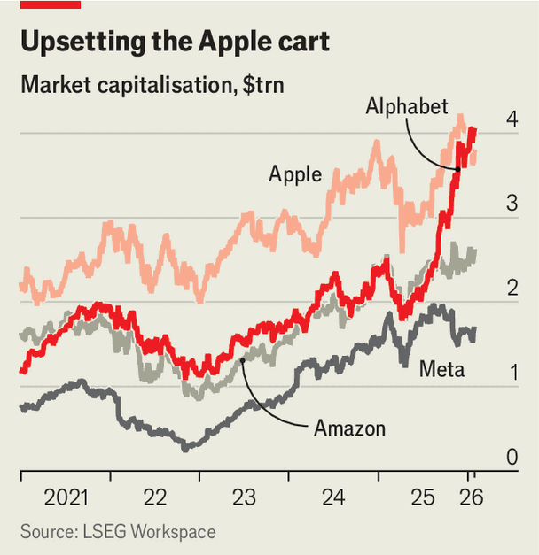
谷歌的智能眼镜于2014年推出，一年后因内置摄像头引发隐私担忧而被叫停。这些担忧至今仍未消散。技术难题同样存在。智能手机发热虽可能影响用户体验但尚可接受，而眼镜则无法承受高温。为确保佩戴舒适，眼镜必须轻便，这导致电池空间极为有限。过热和电池续航不足也是导致Humane公司2023年11月高调推出的AI眼镜项目失败的原因（该公司去年已倒闭）。高通公司（Qualcomm）芯片业务负责人亚历克斯·卡图齐安（Alex Katouzian）预计，这类“边缘设备”将逐渐普及，但需依赖额外的“小配件”或甚至口袋中的智能手机完成大部分计算任务。■
事实上，Meta的马克·扎克伯格（Mark Zuckerberg）表示，他认为采用智能眼镜的人不会丢弃智能手机，而是会减少盯着它们看的时间。毕竟，智能手机的出现并未阻止消费者购买个人电脑。此外，苹果和谷歌也并非静止不动。除了传闻中的智能眼镜产品，苹果还被曝正在研发自有智能眼镜，基于其2024年推出的Vision Pro VR头显所开发的技术。10月，谷歌推出了Android XR操作系统，该平台旨在为三星等厂商制造的VR头显和智能眼镜提供支持。它还最近推出了搭载Gemini芯片的新一代智能音箱。或许人工智能对硬件行业最大的影响，可能在于改变双巨头内部的利益分配格局。■
通过将Gemini嵌入苹果和安卓生态系统，谷歌有望获取海量数据，使模型更加智能。字母母公司（Alphabet），谷歌的母公司，近期市值一度超越苹果（见图表）。作为iPhone制造商，苹果或许会后悔将如此多的权力交予谷歌。■ 为追踪塑造商业、产业与技术趋势的动态，订阅我们的周度会员专属简报《The Bottom Line》。
§052 商业原题：Ryanair might be the world’s most successful airline · 板块：Business · 栏目：商业
迈克尔·奥利里（Michael O’Leary）多年来常被形容为“直言不讳”和“颇具争议”。最近这位瑞安航空CEO已稍退居幕后，但正如埃隆·马斯克最近发现的那样，他仍是个难缠的对手。在马斯克称其未在廉价航班上安装星链卫星Wi-Fi系统为“蠢货”后，奥利里回敬了这一 insult，发起了一场“大傻瓜”促销活动，并感谢马斯克威胁要收购瑞安航空以报复，为他带来了“免费公关周”。作为非欧盟公民的马斯克无法收购这家爱尔兰航空公司。 ■
但如果他能实现这一点，这将是一项绝佳投资。过去30年里，奥利里先生（Mr O’Leary）将瑞安航空（Ryanair）从一家几乎无利可图的小型航空公司，打造成了全球最成功的航空运营商之一。目前，瑞安航空是欧洲规模最大的航空公司，机队规模超过640架飞机，占据欧洲五分之一的运力。其最新季度财报显示，截至4月的财年，公司预计运送乘客将达到2.08亿人次，约为竞争对手易捷航空（EasyJet）的两倍，是其主要廉价航空竞争对手维兹航空（Wizz Air）的三倍。其净利率约为15%，远高于全球平均净利率4%。自2023年初以来，瑞安航空股价已上涨130%，远超全球航空业表现（见图表）。■
与埃隆·马斯克（Elon Musk）类似，后者并未发明电动汽车，却革新了其制造方式，奥利里先生（O’Leary）则借鉴了美国西南航空（Southwest Airlines）的低成本模式，并加以完善以尽可能降低票价。瑞安航空（Ryanair）不仅将乘客视为可自助装载的货物，更通过使用更便宜、人气较低的机场、仅运营单一机型（波音737）以降低维护和飞行员培训成本、尽可能保持飞机满载并持续飞行，实现了这种“激光般的成本聚焦”。咨询公司Aviation Strategy的凯思·麦克马伦（Keith McMullan）指出，这正是其成功的基础。与马斯克因自动驾驶出租车和人形机器人等事务分心而偏离汽车制造不同，奥利里始终坚守其商业模式。投资公司伯恩斯坦（Bernstein）指出，欧洲航空业享有“应得”的“价值毁灭”声誉，而瑞安航空则独树一帜。■
马斯克试图通过称奥利里为“会计师”来贬低他。但另一家咨询公司航空倡导（Aviation Advocacy）的安德鲁·查尔顿表示，这位爱尔兰人过去精打细算的作风，反而帮助他的航空公司在这个充斥着诸多“梦想家”的行业中蓬勃发展。奥利里本人则表示，他并非被航空业所谓魅力所诱惑的“航空情圣”，并坦言自己并不特别喜欢飞机。事实上，瑞安航空是一家思想保守的企业。它只提供一种产品：飞机上的座位。尽管如今已拓展至中东和北非部分地区，但其一半的座位仍从英国、意大利和西班牙三个国家出发。乘客不仅无法使用Wi-Fi，还必须放弃手机充电和可调节的座椅。然而，即便规模庞大，瑞安航空依然保持灵活高效。■
飞机迅速调配至收益最高的航线，推动其服务机场或希望吸引该航线的机场之间展开竞争。西班牙多个区域性机场今年将削减运力，因对费用上涨存在分歧。低成本航空公司也迅速抓住了竞争减弱的机遇。2021年意大利国家航空公司阿尔提亚（Alitalia）的破产，使瑞安航空（Ryanair）在国内市场占有率提升至40%。它还敏锐地进军瑞典和丹麦，利用斯堪的纳维亚竞争对手sas在疫情后的疲软。伯恩斯坦（Bernstein）的亚历克斯·伊文（Alex Irving）表示：“如果竞争对手在流血，就趁机捅上一刀。”规模优势使瑞安航空在供应商面前更具话语权。健康的资产负债表——其拥有约10亿欧元（约合12亿美元）现金，并希望在5月前实现无债务——帮助它渡过了风暴。■
在疫情期间，瑞安航空（Ryanair）保留了大部分飞行员和员工，而其他航空公司则裁员，这使它能够迅速抓住航空旅行复苏的机遇。其强大的财务实力帮助它以低价购买飞机，包括在波音公司急于获得订单时。如今，奥利里（Mr O’Leary）不再像过去那样通过装扮成爱尔兰精灵或声称要引入站立式座位并收取飞机厕所使用费来博取关注。但他的咄咄逼人行事风格，为瑞安航空的股东们带来了显著收益。他与飞行员就薪资和工作条件展开过激烈争论；与在线旅行社打过法律战，以确保机票销售保留在瑞安航空官网；并经常批评欧洲政界人士，最近更指责他们提出“疯狂、非法”的提案，要求免费携带随身行李。■
瑞安航空的非凡崛起势头不减。这家航空公司近日获得一项巨额订单，订购多达300架波音737 MAX的更大、更省油版本，这些飞机预计于2027年开始交付，将进一步降低运营成本，助力其实现2034年每年运送3亿乘客的目标。奥莱利先生近日表示，他可能继续担任CEO直至2030年代中期。在此期间，马斯克或其他人不太可能取代他。■ 要追踪塑造商业、工业和技术趋势，可订阅我们的周度专属读者通讯《The Bottom Line》。
§053 商业原题：How porn stars can survive in the age of AI · 板块：Business · 栏目：商业
在许多方面，一年一度的AVN博览会与其他会议并无二致。与会者领取胸牌，涌入灯火通明的酒店，排着队在咖啡站领取温吞的饮品。但另一方面，它又截然不同。着装规定不涉及是否需要西装领带，而是明确哪些身体部位必须遮掩。舞台上使用的缩写包括AI，也包括BDSM。闭幕夜的颁奖典礼被1998年曾出席的作家大卫·福斯特·华莱士（David Foster Wallace）形容为色情产业的奥斯卡奖。自1984年起，这场汇聚1000亿美元成人娱乐产业的年度聚会便在拉斯维加斯举行。
■
自那以后，成人内容行业经历了多次技术变革。首先迎来互联网的兴起；随后是类似YouTube的平台如Pornhub；再后来是连接观众与表演者的订阅平台如OnlyFans。随着行业逐渐摆脱由大型制片公司主导的高预算电影模式，参展者表示，如今的展会已失去部分活力，展位、明星和观众数量都减少了。“这是一场令人咋舌的缩水展会，”资深成人明星Tommy Gunn说道。如今，人工智能正威胁着成人内容行业可能面临的最大变革。近期关于埃隆·马斯克旗下xAI开发的Grok机器人未经同意被用于数字剥削的争议，凸显了该技术被用来制作色情内容的便捷性。今年的AVN Expo则透露了行业如何应对这一挑战的线索。■
■ 1月21日至24日，Virgin Hotels（没错，真的）举办的活动更像是科技展而非狂欢。在每处展示摊位上，男人们排队与穿着性感的表演者合影的同时，另一些摊位则由初创企业展示新发明。赫森AI（Hesen AI）这家机器人公司展示了拥有医用级硅胶皮肤、可移动眼睛，甚至具备一定对话能力的性爱娃娃。Beyond AI这家软件初创公司则推出了一款帮助表演者创建数字分身的工具，这些分身可生成露骨内容。成人玩具制造商展示了能与聊天机器人联动的设备，将虚拟对话延伸至现实中的互动。讨论焦点大多集中在AI是否会取代表演者的岗位。一些人开始注册商标保护自己的舞台名，并与制片方重新谈判合同，确保未经本人同意，其影像不会被用于训练AI模型。
但另一些人则拥抱这项技术。许多人正用它来剪辑视频并与在线粉丝互动。知名表演者切丽·德维勒（Cherie DeVille，昵称“互联网的继母”）表示，如果能找到一家提供有利条件的AI公司，她愿意创建数字双胞胎。“我相信这将是未来。”她说。关键在于人们是否觉得AI女孩性感。另一位明星艺人凯西·卡尔弗特（Casey Calvert）则担心自己无法与AI竞争。“AI女孩永远热情，永远可用。”她指出。即便粉丝希望与真人互动，在线性工作也变得愈发困难。另一位成人内容创作者罗西·雷妮（Roxy Renee）表示，粉丝期待她能即时回复消息并精准提供所需视频，正如AI机器人一般。有位粉丝曾要求她出示证明自己是人类的证据：一张她举着三根手指和一把勺子的照片。■
色情明星们又有了一个区别于AI竞争对手的新方法：以真人身份现身。詹妮弗·怀特（Jennifer White，年度最佳女表演者）在颁奖典礼上大部分时间都在与粉丝自拍。她某晚悄悄离开，前往号称全球最大脱衣舞俱乐部的Sapphire，那里聚集了大批男性观众，为她欢呼并投掷现金。在AI时代，面对面的互动可能比以往任何时候都更重要。■ 要追踪塑造商业、工业与科技趋势的动态，请订阅我们的周度专属电子报《The Bottom Line》。
§054 商业原题：How big a threat is AI to entry-level jobs? · 板块：Business · 栏目：商业
如果你对组织结构和几何学感兴趣，那么现在正是充满机遇的时期。传统的企业层级结构呈金字塔形：底层人员众多，逐渐向上收敛至顶端的单一节点。但人工智能可能使企业所需员工大幅减少，这意味着金字塔结构或将逐渐式微。一些观点认为，未来的企业组织形态可能更接近方尖碑，形状相似但每层人员更少。若你相信创业者能独自创建巨型公司，未来的企业形态或许会变成一个点。但最能反映当前最大担忧的，是钻石形状。
若初级职位和初级岗位受AI冲击更为显著，白领机构可能最终呈现顶部和底部变窄、中间层扩大的趋势。目前的数据尚不明确。斯坦福大学埃里克·布兰乔夫森（Erik Brynjolfsson）及其同事去年晚些时候发表的一篇论文显示，美国22至25岁群体在软件工程和客户服务领域的就业人数出现大幅下降。另一项近期研究显示，英国对AI依赖程度更高的企业更可能削减初级岗位招聘。但匹兹堡大学摩根·弗兰克（Morgan Frank）及其合著者的新研究警告称，AI相关行业毕业生前景在2022年ChatGPT发布前已出现恶化迹象。■
AI并非经济不确定性的唯一来源；年轻员工总是在资深员工固守现有岗位时首当其冲。然而，基于第一性原理，我们有充分理由担忧AI对初级职位的影响（这一话题我们将在最新一季的播客Boss Class中探讨，该播客聚焦职场与管理）。大量初级员工在初入职场时需承担繁琐的文书工作以积累经验。如今，机器能以更高效且成本更低的方式完成这类工作，且从不质疑企业对可持续发展目标的进展。若初级员工聪明，他们或许已开始利用AI完成工作，那么他们究竟学到了什么？■
若钻石象征未来形态，为何不将培养初级员工的任务交给他人，稍后再吸引他们加入贵组织？事实上，管理者有三大充分理由不削减初级职位。首先，无人能预判人工智能对长期工作的具体影响。其次，企业始终面临高价培训员工后流失的风险，但缺乏未来人才储备的风险可能更甚。第三，尽管裁员看似是削减人力成本最不具破坏性的途径，却并非获取具备AI素养员工队伍的最佳方式。初级员工因缺乏工作经验，难以形成职业习惯。尽管许多年轻人对AI抱有类似对父母的深恶痛绝，但他们实际使用AI的频率却高于年长员工。■
根据OpenAI的数据，18至29岁的群体在工作中使用ChatGPT的概率是50岁以上人群的两倍以上。Indeed（一家招聘市场）AI部门负责人Hannah Calhoon表示："我们认为初级人才是推动变革的重要杠杆。"她鼓励同事不要盲目用经验相当的候选人取代资深离职者，但至少应考虑引入年轻人才带来的新视角。在乐观情况下，初级岗位本身将得到改善。英国的实习律师传统上花费大量时间做研究、做笔记和起草合同，肖斯密茨律师事务所（Shoosmiths）的Samantha Hope指出，但当AI开始承担大量琐碎工作后，实习律师应能将更多时间用于更高层次的任务，如与客户沟通或谈判。■
Shoosmiths正在考虑扩大培训生的轮岗安排；在创新或法律科技团队工作数月，或许能为未来更大的变革做好准备。企业高管正面临将人工智能应用转化为实际利润的压力。许多人可能会倾向于削减初级岗位。更优的选择是重新思考初级员工的工作内容。■ The Economist的订阅者可注册我们的观点通讯，汇集了最佳的社论、专栏、特邀评论及读者来信。
§055 商业原题：The Gulf’s family businesses have a growing succession problem · 板块：Business · 栏目：商业
1995年11月，马吉德·阿尔-福图阿伊姆（Majid al-Futtaim）开设了他的第一家购物中心，当时已是迪拜最大的购物中心。就在几个月前，这位阿联酋商人因商业纠纷与表兄发生激烈争执，甚至引发王室介入。他随后打造了一个横跨迪拜酋长国购物中心（拥有室内滑雪场的奢华购物中心）、酒店和住宅的庞大集团，业务遍及海湾地区乃至更远。2021年，年仅87岁的福图阿伊姆去世，其多个继承人再次爆发激烈争执。去年夏天，政府介入重组该集团。 ■
继承权之争并非海湾地区首次，但类似争执正变得愈发关键。家族企业是经济的关键支柱。在阿联酋，家族企业贡献了60%的GDP。拥有190亿美元资产、超过4万名员工的马吉德·阿尔-福图阿廷集团（Majid al-Futtaim group）是该国最大的雇主之一。沙特的家族企业则贡献了逾四分之一的GDP，并吸纳了约半数劳动力。这类企业往往结构松散，缺乏当族长去世时的接班计划。随着海湾地区的谢赫和王子们希望摆脱对石油的依赖，构建更广泛、更稳固的经济体系，推动接班计划已成为一项紧迫任务。然而，这一任务并不容易。据非营利机构沙特家族企业研究中心（National Centre for Family Businesses, NCFB）统计，沙特近三分之二的家族企业缺乏接班计划。■
多妻多子的家庭（多个妻子，众多子女）使情况更加复杂。伊斯兰继承法也加剧了这一问题。例如，男性继承人会比女性继承人获得更多份额，部分原因在于他们被期望照顾妻子和母亲。高管们表示，几家大型沙特企业内部正暗流涌动。据瑞士银行UBS估算，阿联酋的企业主中九成难以公平分割资产，相比之下，全球范围内只有六成。随着企业规模扩大，不作为的成本也水涨船高。到2035年，该地区将有5000亿美元至7000亿美元的资产从创始人转移至继承人。麦肯锡咨询公司弗朗西斯科·马拉泰斯塔指出，对许多人而言，这将是首次经历此类资产传承。官员们担心，若资产陷入纠纷，将造成经济损害。■
根据迪拜国际金融中心（Dubai International Financial Centre）的预测，到2030年，海湾地区约四分之一的家族企业将“无规则转移”。这可能导致490亿美元资本未被认领，1230亿美元陷入法律程序。国家家族企业委员会（NCFB）负责人艾斯·穆巴拉克（Ayth al-Mubarak）表示：“所涉及的金额巨大，我们希望确保无论所有者如何变化，这些企业都能持续存在。”该机构去年设立了争议解决流程，已有170个家族通过该程序。官员们不愿被视作干预者，但正敦促商人清理公司治理结构，将个人资产与企业资产分离。同时也在讨论是否应为家族企业（尤其是“太大而不能倒”的企业）设定最低、具有法律约束力的治理标准。
一些最初以个人企业形式创立的大型公司，至今仍以小型企业的方式运作。2022年，阿联酋（United Arab Emirates）推出家族企业指导方针和法律，明确了股份回购、多重股权类别、董事权利和所有权等规则；沙特阿拉伯（Saudi Arabia）也在2023年采取了类似措施。去年，阿联酋官员会见了多位知名家族，鼓励他们推进传承计划。一位顾问表示，借助这些工具和法律，海湾地区的家族或许可以效仿瑞典的瓦伦贝格家族（Wallenbergs），其第六代成员正逐步接管家族企业与基金会。但让海湾地区的不同世代达成共识却更为困难。多数年轻继承人并不想接手父亲经营的食品加工或石油服务类企业，他们更倾向于投身科技初创公司和数字资产领域。一些人甚至希望引入外部资本，或选择退出家族企业。■
马莱斯塔先生表示，失去控制的念头让父辈们感到不安。什么都不做可能更糟。■ 要追踪塑造商业、工业和科技趋势，可订阅我们的周度专属读者通讯《The Bottom Line》。
§056 商业原题：Silicon Valley wades into a trade spat with South Korea · 板块：Business · 栏目：商业
对韩国人而言，酷派是家喻户晓的公司。然而在美国，这家电商巨头2021年上市后却鲜为人知。作为韩国的“亚马逊”，这家年销售额超350亿美元、员工约10万名的企业，却意外卷入了一场国际争端——硅谷科技巨头联合特朗普政府盟友，正与韩国政府展开对抗。这是一幅令人警醒的图景：企业正深陷全球贸易政治化的漩涡。■
Coupang的问题始于11月，当时该公司披露一名前中国员工曾获取约3400万韩国客户的资料。该数据泄露未被发现长达五个月。韩国媒体称此次数据泄露是该国历史上最严重的一次，但Coupang表示仅有3000个账户的数据被访问，且已删除且未与第三方共享。总统李在明政府对此采取了严厉措施。据称Coupang可能面临至少1万亿韩元（约7亿美元）的罚款，是SK Telecom因影响超过2300万用户的数据泄露事件所受罚款的七倍。韩国公平贸易委员会，这家反垄断监管机构，也已启动对Coupang与数据泄露无关的调查。该公司市值已从去年峰值600亿美元降至约370亿美元。■
Coupang的傲慢回应反而对其不利。尽管其韩国业务首席执行官在数据泄露事件后辞职，但其最高负责人金伯（Bom Kim，美籍韩裔亿万富翁）却拒绝出席议会调查。此举将企业丑闻升级为政治角力。Coupang向3400万名用户发放价值35美元的优惠券，部分人讥讽此举仅为促销噱头。在数据泄露事件前，该公司已面临指控称其虐待仓库及配送工人（其予以否认）。公众愤怒情绪高涨。美国籍临时负责人哈罗德·罗杰斯（Harold Rogers）去年底在韩国议会听证会上遭严厉抨击，据悉他近日已返回首尔应警方传唤。此次风波已波及太平洋两岸。■
1月22日，Coupang的两大硅谷支持者Greenoaks和Altimeter两家风投公司，合计持有该企业价值15亿美元的股份，威胁起诉韩国政府，指控其违反《美韩自由贸易协定》（KORUS），该协定于2012年生效。他们指责韩国政府试图摧毁Coupang，将政府的行动描述为“美国投资者可能从委内瑞拉或俄罗斯等极权对手那里看到的攻击”。他们将这些行动视为韩国政府对美国科技公司更大规模打压的一部分，并要求美国贸易代表办公室介入。副总统J.D.万斯已表态，据报道警告韩国总理金敏燮不要惩罚像Coupang这样的美国企业。
1月26日，特朗普总统威胁要将韩国的关税从15%提高至25%，原因是韩国未能迅速批准去年达成的新贸易协定。（他并未提及Coupang。）如果Coupang在韩国的待遇带有政治意味，那么美国的回应同样如此。风险投资界试图将文在寅总统描绘成反美亲华的政客，这有助于吸引特朗普政府的注意，布鲁金斯学会（Brookings Institution）韩国问题专家安德鲁·叶（Andrew Yeo）指出。但在韩国，文在寅被视为更偏向中间偏左的务实派。如同其他依赖出口的国家，韩国可能别无选择，只能寻求与中国更紧密的关系，以对冲特朗普的贸易强硬立场。■
叶耀中称，Coupang的辩护者援引KORUS协议违规条款，这种行为颇为讽刺，鉴于特朗普曾将关税作为对韩国的贸易武器。但全球贸易的现状令人沮丧。韩国可能在打压一个受美国支持的成功案例，美国也可能在打压亚洲的重要盟友。无人得利。■ 要追踪塑造商业、产业与科技趋势的动态，请订阅我们的周度专属商业简报《The Bottom Line》。
§057 商业原题：How IBM became an AI darling · 板块：Business · 栏目：商业
商业
■
从创立至今115年间，IBM始终展现出惊人的自我革新能力。1990年代中期，这家大型机先驱在面临崩溃危机时，通过转向蓬勃发展的IT服务业务实现自救。十年后，它又将陷入困境的PC部门出售给中国联想。过去五年左右，"蓝色巨人"又经历了一次引人注目的转型。2010年代，云计算的兴起颠覆了其业务模式，不仅冲击了大型机销售，更在印度低成本外包商蚕食市场份额的背景下，削弱了其设备维护业务。营收与利润率持续下滑，投资者再度失去兴趣。
过去三年间，这一切发生了巨变。IBM的股价已翻倍上涨。以净利润为基准计算，其估值如今与微软及其他软件巨头相当（见图表）。1月28日，IBM公布2025年营收和净利润分别增长8%和14%，这与其多年停滞不前的态势形成鲜明对比。IBM是如何实现这一转变的？这一战略始于2019年收购Red Hat（一家平台公司，除其他功能外，还帮助企业管理数据中心的工作负载）。IBM并未试图与亚马逊、谷歌和微软在所谓的公有云市场直接竞争，而是构建了一层中间架构，使用户能更便捷地在超大规模云服务商之间灵活切换，同时继续使用本地主frame或专用私有云（包括由IBM运营的私有云）处理敏感任务。■
2024年和2025年收购HashiCorp与Confluent两家软件公司的交易，进一步巩固了IBM作为混合云协调者的地位。IBM在人工智能领域也占据了一席之地。该公司长期涉足AI技术——包括1997年曾利用AI击败国际象棋冠军加里·卡斯帕罗夫——但错失了大语言模型的最新浪潮。而非直接与OpenAI等模型开发商竞争，IBM推出了Granite系列小型语言模型，专为商业应用场景设计，对计算资源需求较低。这些及其它开放权重模型（公开其数值参数）均可通过其watsonx平台访问，企业可借助该平台构建基于自身数据训练的AI代理。■
IBM在人工智能领域日益增强的实力，得益于过去几年另一项重大战略调整——对其服务部门的重塑。2021年，IBM剥离了陷入困境的外包业务，现名为Kyndryl（Kyndryl），当时该业务占其员工总数的四分之一。此举使IBM保留了专注于技术专长的咨询部门，这在客户应对人工智能挑战时显得尤为重要。自2023年中以来，IBM已签订超过100亿美元的与生成式人工智能相关的咨询合同。同时，IBM还利用该技术实现内部咨询人员工作的数字化，该部门负责人将此举描述为向“软件化服务”转型。与此同时，IBM继续在原有核心领域——硬件上进行创新。其在大型机领域仍占据绝对领先地位，去年推出的z17型号广受好评。■
它提供了对IBM最新Spyre芯片的访问权限，这款芯片专为运行AI模型而设计。此外，IBM在量子计算机领域处于领先地位。麦肯锡预测，到2035年，该技术市场规模可能接近1000亿美元。IBM认为，通过销售设备和出租算力，有望占据约20%的市场份额。它希望于2029年推出Starling量子计算机（具备容错能力，可识别并纠正技术固有的错误）。近期，传统科技公司的投资者对AI带来的颠覆性影响愈发焦虑。过去三个月内，美国标普500指数中的软件企业市值已缩水七分之一。全球最大的IT服务提供商埃森哲的股价在过去一年内下跌了四分之一，担忧机器人可能很快取代公司大部分业务。■
但凭借独特的企业组合，IBM在应对这场动荡中处于有利位置。■ 要追踪塑造商业、工业和技术趋势的动态，敬请订阅我们的全球商业周报《The Bottom Line》。
§058 商业原题：Don’t be fooled. AI bosses are regular capitalists · 板块：Business · 栏目：商业
新闻稿几乎无法揭示一家公司的真实运作方式。要真正揭开公司面纱，必须让企业陷入法庭纠纷。以埃隆·马斯克与OpenAI的法律斗争为例，本月便披露出大量文件。马斯克要求ChatGPT的制造商（他共同创立的公司）支付巨额赔偿，称其背弃非营利性质构成欺诈。这份案卷读起来就像一本八卦的电子畅销书。为何OpenAI选择与微软而非亚马逊合作？“我认为杰夫有点儿不靠谱，”马斯克在2016年曾这样评价其创始人。
■
山姆·奥尔特曼，OpenAI的CEO，对与埃隆·马斯克公开的争执有何感受？“这真的让人痛彻心扉，”他在2023年坦言。投资者们对人工智能的革命性潜力充满期待，有人甚至几乎只谈论这一点。揭示其先锋力量运作机制的关键证据因此值得深入研究。越来越多的批评者担忧，人工智能的发展将比其支持者预期的更加缓慢且可预测：换句话说，它将是一种普通技术。但研究OpenAI行为的企业人类学家将发现，硅谷甚至更不愿承认的事实：其高管们不过是普通资本家。当加州陪审团在4月聆讯此案时，“正常”绝不会是他们留下的第一印象。
2017年，伊利亚·苏茨凯弗（Ilya Sutskever）在考虑OpenAI治理结构改革时曾写道，他与另一位联合创始人格雷格·布罗克曼（Greg Brockman）的讨论可能是“人类历史上最高风险的对话”。2018年的一份投资备忘录警告投资者，OpenAI无法确定“金钱在人工智能（AGI）超越人类完成所有经济价值任务的世界中将扮演什么角色”。然而，围绕OpenAI灵魂的争夺战揭示了，尽管人工智能变得愈发非凡，但其最著名公司的运营方式却日益趋于普通。这家企业最初于2015年成立时被设想为一家由硅谷捐赠者资助的文明拯救型非营利机构。几乎从成立之初，如何在增长与慈善之间取得平衡就迫使它陷入企业运作的复杂境地。一种设想是发行加密货币，另一种则是与特斯拉（Tesla）——埃隆·马斯克（Elon Musk）的汽车公司——建立类似“企业糖爹”的合作关系。■
两者都没有发生。最终，微软及其他公司通过交易投资了OpenAI旗下子公司，最初这些交易将他们的回报上限设定为不近人情的100倍。10月，这家模型开发商进一步重组为公益性质公司（PBC）。尽管非营利实体仍保有形式上的控制权，OpenAI现在以营利性企业运营，承诺在股东利益与“全人类”之间取得平衡。开发Claude聊天机器人的Anthropic同样是一家PBC，其章程对全球所有人同样模糊地承担义务。硅谷有充分理由将追求利润最大化的本能披上虔诚外衣。Anthropic可能是行业内最热衷做善事的实验室，但同时也是其最热门新产品Claude Code的开发者。■
公众对人工智能可能影响就业和电价的不满情绪令人担忧，尤其因为这可能引发监管。最终有四个因素解释了为何人工智能的领军人物如今更像普通的股东资本家。首先是自利心理。很难相信掌权者是出于利他的动机。布罗克曼在日记中曾思考：“什么才能让我达到十亿美元？”（该日记被马斯克的诉讼部分披露）而2017年OpenAI正考虑其未来。他本应思考如何达到马斯克如今要求的1340亿美元，这一数字基于OpenAI约5000亿美元的估值，部分依据其自身银行家的乐观评估。估值中超过四分之一属于非营利实体——而马斯克称其中大部分归他所有。仅凭3800万美元的捐赠，这已是相当可观的回报。再加上竞争因素。
OpenAI和Anthropic采用的宪法均以模糊措辞为基础。然而，模型制造商之间日益激烈的竞争已显而易见。当高尚承诺遭遇现实的商业挑战时，前者注定会沦为装饰而非自我约束。围绕监管的争执以及法庭上关于版权等议题的较量，也将迫使管理层更加明确立场。为保持竞争力，模型制造商需要资本——第三个解释。投资者要求回报，因此现金流目标已迅速取代安全顾虑，成为行业的核心关注点。若OpenAI和Anthropic如传闻所指考虑上市，市场对其运营的约束力将显著增强。■
向那些尖锐的华尔街激进投资者或零售投资者解释，为了整个物种的利益而牺牲季度利润，恐怕并不容易。最后，最近的历史毫不留情地对待那些假装忽视利润底线、追求更高使命的高管们。人工智能行业与2020年代初达到顶峰的环境、社会和治理（ESG）运动有着更多共通之处，而非它愿意承认的那样。当时，高管们发出关于气候变化和不平等的生存警告。一些人甚至拥抱了新的企业形式，包括公共利益公司（PBC）。ESG运动的大部分内容都缺乏足够的韧性，难以经受住唐纳德·特朗普回归的考验。没有人喜欢被称作“正常”，尤其是亿万富翁们。■
那些认为若不加以控制人工智能可能危及人类的人，或许会对这一评估感到沮丧：认为AI管理者能像华尔街对待防止金融危机那样严谨地应对灭绝级风险，这种想法令人担忧。然而，若人工智能只是由普通资本家掌控的常规技术，真正的风险可能呈现出不同的性质。这表明人工智能热潮是炒作、过度投资以及最终崩盘的正常周期的一部分。这不会是世界末日，但依然会带来痛苦。■ 订阅者可注册我们的Opinion新闻简报，汇集了最佳的社论、专栏、特稿及读者来信。
§059 人工智能会摧毁白领工作吗原题：Why AI won’t wipe out white-collar jobs · 板块：Finance & economics · 栏目：财经
自2022年11月ChatGPT问世以来，人工智能技术以低廉且近乎即时的速度，将普通英语的简短查询转化为可用的软件应用或数据丰富的幻灯片演示文稿，引发了同等程度的兴奋与恐慌。希望削减成本的老板们对其青睐有加，而程序员、PowerPoint制作人员等久坐办公室的员工则忧心忡忡。近期，世界经济领域的重要声音开始发声。过去一周左右，国际货币基金组织总裁克里斯拉娜·格奥尔基娃（Kristalina Georgieva）警告称，人工智能正“如同海啸般冲击劳动力市场”。
■
摩根大通首席执行官杰米·戴蒙预测，美国最大银行即将减少员工数量。而Anthropic公司负责人达里奥·阿莫代伊则表示，他所在公司主导开发的技术可能摧毁"所有初级白领岗位的一半"。人工智能确实可能对白领劳动力造成冲击，但与其让许多岗位变得不那么赚钱，甚至被取代，它更可能重塑这些岗位。人工智能办公室将不再像机器人，而更像人机结合体，融合人类与计算机的最佳能力：如同《六百万美元人》而非《天网终结者》。要理解其中原因，可回顾过去三年白领工作的变化，对比以往技术革命的模式，并分析这些趋势对未来的影响。尽管存在诸多担忧，白领群体目前仍保持良好状态。■
自2022年底以来，美国新增了约300万个白领岗位——包括管理、专业、销售和办公类职位——而蓝领就业人数则保持平稳（见图表1）。一些常被视为AI早期受害者的岗位却表现亮眼。美国软件开发人员增加了7%，放射科医生增加了10%，法律助理增加了21%。近期学术研究发现的某些初级白领岗位招聘放缓现象似乎早于ChatGPT的出现，因此更可能与利率上升和全球商业环境的不确定性有关。专业人士的薪资也保持稳定。自2022年底以来，专业及商业服务领域（如销售人员、会计师等）的实际（通胀调整后）薪资上涨了5%，办公及行政人员薪资则上涨了9%。■
控制教育水平、年龄、性别、种族等其他因素后，我们计算出白领员工目前的收入比蓝领员工高出三分之一（见图表2）。这一差距是上世纪80年代初的近三倍，并在过去三年持续扩大。换句话说，人工智能尚未剥夺办公室员工长期存在的收入优势。这些发现对技术变革史学家而言并不意外。计算机时代初期同样充斥着对大规模失业的悲观预测。1982年诺贝尔经济学奖得主瓦西里·里昂惕夫（Wassily Leontief）曾警告称，“人与机器之间的关系正在发生根本性转变”，随着计算机开始承担“从简单到日益复杂的脑力任务”。然而事实证明，数字化自动化反而为办公室工作带来了福音。
自上世纪80年代以来，管理、专业、销售和办公岗位的就业人数已超过两倍，其薪资水平在扣除通胀因素后上涨了约三分之一。在早期的数字时代，白领工作之所以蓬勃发展，一个重要原因是计算机很少一次性取代整个岗位。它们主要自动化那些可以转化为明确规则、由机器执行的常规性与重复性任务。当一个岗位完全由常规性工作构成时，这类岗位会消失（如打字员的岗位）。但大多数专业岗位由多种任务组成，其中仅部分可被自动化。结果并非岗位替代，而是岗位升级：计算机提高了生产率，使人力投入转向更高价值的活动，如分析与判断。
空管人员的例子印证了这一模式：软件协助处理飞行数据，人类仍掌握高风险决策的最终控制权，薪资随之上涨。更重要的是，计算机通过提升生产率和削减成本，也拓展了企业能以盈利方式开展的活动范围。电子商务催生了物流、供应链规划和数字支付等新岗位，智能手机造就了应用设计师，社交媒体则带来了数字营销人员和网红。结果是白领就业的持续增长。麻省理工学院的达龙·阿克丘卢（Daron Acemoglu）与波士顿大学的帕斯卡尔·雷斯特雷波（Pascual Restrepo）指出，美国1980年至2010年间约有一半的就业增长源自全新职业的诞生。人工智能比旧有的数字技术更为精妙。■
但同样的技术变革逻辑似乎也适用于此次人工智能的发展。首先，当前的人工智能系统具备所谓“锯齿状智能”，其表现参差不齐且不一致。仅在95%的任务中表现优异尚不足以应对剩余5%的关键边缘案例和判断。Anthropic的实证数据印证了这一点，该机构基于数百万条匿名交互数据发现，仅有约4%的职业在超过四分之三的任务中使用AI，几乎没有岗位能被完全自动化。与计算机技术类似，AI正在降低特定认知活动的成本——如起草文本、编写代码、收集信息或执行标准分析——而非取代整个岗位。近期劳动力市场数据也支持这一观点。■
我们分析了美国自2022年下半年以来超过100个大型白领职业的就业和工资趋势。样本中的就业人数增长了4%，实际工资增长了3%。为了解AI对不同岗位的影响，我们根据职业描述，将白领岗位按所涉及的任务组合分为四类：技术专家、管理者与协调者、护理工作者以及后台员工。随后我们追踪了2022年底以来各类岗位的就业情况，采用六个月移动平均数。兼具技术专长与监督协调职能的岗位增长最为显著，项目管理人员和信息安全专家的就业人数增长了约30%。其他融合数学相关领域深度专业知识与问题解决能力的岗位也表现强劲（见图表3）■
人际护理类工作和需要判断与协调的工作岗位并未减少，只有例行的后台工作出现萎缩（见图表4）。过去三年左右，美国保险索赔职员人数减少了13%，秘书和行政助理则减少了20%。人工智能已催生全新岗位，企业正招聘“数据标注员”以标记数字信息供AI解析，“前线部署工程师”协助客户推进AI应用，并在高管层设立“首席AI官”。■
近年来增长最快的白领职业往往缺乏明确名称。"其他数学科学职业"自2022年底以来人数增长约40%，实际工资上涨约五分之一。"其他计算机职业"如系统架构师和IT项目经理也呈现快速增长态势。"业务运营专员（其他类别）"——涵盖流程设计、协调与分析等职能的综合岗位——就业人数几乎增长60%，薪资涨幅同样显著。这并不意味着所有白领都能高枕无忧。在那些包含极少边缘案例且自主权有限的任务组合中，AI可能很快就能实现全流程自动化。当前新型模型已能完成数小时的自主工作，结合编码、分析与工具使用，仅需有限的人工干预。■
由METR研究小组制定的基准测试显示，AI能够连续五小时独立编写软件，这一能力每七个月左右翻一番。Anthropic的Amodei（Amodei）推测，AI可能在今年内就能完成软件工程师的大部分工作。初级职位同样面临类似风险，此前技术变革的受益者也遭遇了同样的困境。美国从事文书和行政工作的人员占比，已从1980年代的18%降至10%，预计将进一步缩减。Centre for the Governance of AI智库的Sam Manning和Tomás Aguirre最新研究显示，这类从业者适应能力最弱，可迁移技能较少，难以转向高价值岗位。这种变革对受影响群体而言将带来痛苦。■
但这种情况与一些人预言的劳动力市场混乱局面相去甚远。将人类判断与机器智能结合，短期内可能比单纯依赖人工智能创造更多价值。人类的责任感和参与度仍将在市场中占据溢价地位。白领工人展现出高度适应性，人工智能将再次重塑他们的工作内容，但不会彻底取代他们。■ 更正（1月27日）：本文先前版本称办公室及行政人员的实际（通胀调整后）工资比2022年底高出17%，实际上该数据为名义工资，通胀调整后的增幅为9%。
§060 财经原题：Just how debased is the dollar? · 板块：Finance & economics · 栏目：财经
唐纳德·特朗普（Donald Trump）喜欢展现强势。但唯独在美元问题上，他似乎是个例外。1月27日，当被问及美元近期疲软时，总统表示美元“表现很好”。然而在该表态之后，美元以特朗普式的“很好”方式进一步走弱——兑一篮子货币跌至近四年来的最弱水平。自特朗普去年就职前的峰值以来，美元已累计贬值约12%。尽管财政部长斯科特·贝森特（Scott Bessent）坚称美国奉行“强美元政策”，特朗普似乎仍认为弱势美元有助于提振美国出口、抑制进口，从而缩小贸易逆差——这一直是他的长期关注点之一。
■
许多投资者担心这反映了更深层的恶兆：他对美国欧洲盟友的蔑视、对美联储独立性的攻击以及对其他制度规范的侵蚀。交易大厅正热议“贬值交易”这一术语，指代押注美国金融例外主义衰落的投机行为。若贬值交易者所言属实，那么美元抛售才刚刚开始。贬值交易的典型案例是金价飙升。一盎司黄金目前价格超过5500美元，比年初上涨28%——甚至还未到2月。如今这个古老的价值储存手段不仅在坏消息中上涨，甚至在好消息中也会上涨。自去年4月2日特朗普全球关税政策曝光以来，标普500指数中大型美国企业股价已27次下跌超1%。■
在抛售期间，黄金价格平均每天上涨0.6%。在标普500指数单日涨幅超过1%的24个交易日内，黄金价格仅上涨0.2%。然而，若黄金讲述的是一个故事，其他资产则讲述着另一个故事。美国证券并未出现明显抛售。尽管美元在过去12个月持续走弱，标普500指数却上涨了15%。1月27日，该指数再次刷新历史高点。美国十年期国债收益率（与债券价格呈反向变动）已低于特朗普上任一年前的水平。为何美元看似疲软，美国资产却表现强劲？一个解释是，美元实际上并未那么弱。尽管过去12个月美元有所贬值，但考虑到各国通胀差异的实际汇率，其水平仍比过去30年的平均水平高出13%。
根据《经济学人》的巨无霸指数（Big Mac Index），以全球麦当劳快餐价格为基准，美元对70种货币中的49种被高估。另一种解释涉及外国投资者在2007-09年全球金融危机后大量购买美国证券时如何对冲汇率风险。一种基本的对冲方式是外汇掉期（foreign-exchange swap），这是一种衍生品，允许投资者今天锁定未来某个时间点的汇率。若在购买证券时即进行对冲，不会影响汇率；但若在投资组合后期才进行对冲，由于金融数学原理，情况则不同。■
6月，国际清算银行（Bank for International Settlements）发布的一项研究显示，特朗普4月发动的关税攻势导致美国资产暴跌，美元随之走弱。投资者在事件后大规模对冲货币敞口，美元疲软可能并非“抛售美国”（"sell America"），而是“对冲美国”（"hedge America"）。实际汇率和对冲行为表明，美元仍有进一步下跌空间。若按历史标准衡量，美元当前并不疲软，但若美联储降息，美元可能更弱，尤其是若特朗普如愿以偿，美联储削减短期利率（其于1月28日维持利率不变）。这是因为外汇掉期价格与短期利率走势一致。■
更便宜的保险意味着更多外国投资者将想要一些——尤其是当美国资产持续升值时。但他们在外汇掉期上购买得越多，美元的贬值压力就越大。如果这种自我强化的循环持续足够长的时间，“对冲美国”最终可能演变为“抛售美国”。如果特朗普先生持续削弱美国金融体系的可信度，这一时刻可能会提前到来。在此期间，贬值交易者最好做好准备。■ 订阅《经济学人》的读者可注册我们的Opinion通讯，汇集了我们的社论、专栏、特邀评论和读者来信中的精华内容。
§061 财经原题：The West and Ukraine are capsizing Russia’s shadow fleet · 板块：Finance & economics · 栏目：财经
1月22日，"Grinch"号在西班牙近海航行时，两架法国海军直升机悬停在上空。士兵冲入船舱搜查，随后将该船引导至靠近马赛的港口，目前该船在武装护卫下停泊。"Grinch"号被制裁，悬挂科摩罗（Comorian）国旗，载有73万桶俄罗斯石油。这是本月至少有五艘此类船只被西方捕获的案例。该舰队自2010年代起由伊朗组建，专门负责在西方制裁下运输石油，自2022年中以来规模已扩大逾一倍（见图表1）。
目前，这类油轮数量已接近700艘，主要为老旧船舶，通过壳公司控制，这些壳公司掩盖了实际受益人（若计入偶尔运输走私原油的船只，数量可达1500艘）。这些油轮频繁伪造位置、更换船名和涂装，并在监管薄弱的海域秘密转移货物。尽管面临多轮制裁，这些油轮仍持续运作，使伊朗和俄罗斯——目前最大的用户——得以向中国和印度输送原油。2025年初，它们曾协助委内瑞拉政权，在唐纳德·特朗普撤销（后重新发放）的出口许可期间，帮助该国运输部分石油。12月，这些油轮运送的被制裁原油日均达近500万桶，相当于全球海上原油运输量的11%，据数据公司Kpler统计。风向公司（Windward）的米歇尔·博克曼认为，全球五分之一的国际航运油轮属于“暗箱操作”。■
如今，这支船队正面临一场完美风暴。西方国家正大规模将船只列入黑名单。美国对伊朗和俄罗斯石油公司实施了“次级处罚”，遏制了买家。船旗登记制度正在整顿，可疑船只面临被封锁关键航道的风险，导致整个体系瘫痪。暗船正成为乌克兰袭击的目标，正如《绿野仙踪》中的怪兽发现的那样，西方军事突袭也令它们陷入危险。从波罗的海到加勒比海，那些臭名昭著政权的运宝船正在被追捕。它们能否被彻底击沉？首先从制裁开始。在未能遏制贸易中间商后，西方国家开始直接针对油轮本身。2025年首次有623艘船只被加入制裁名单，相较2024年的225艘大幅增加。
去年运输俄罗斯石油的油轮中，约40%已被至少一个政府列入黑名单；伊朗的这一比例则达到三分之二。漏洞正在关闭，这将使更多油轮陷入制裁网络。10月，美国对俄罗斯两大石油公司实施次级处罚。叠加既有的限制措施，目前约80%的俄罗斯石油运输船面临潜在制裁风险。这意味着它们无法获得认证、购买保险或与合规机构合作。特朗普还宣布对与伊朗贸易的国家征收“次级关税”。1月21日，欧盟禁止所有由俄罗斯石油制成的产品进口，切断了来自土耳其、印度和中国经俄罗斯原油提炼后流入欧盟的产品渠道。■
其下一轮制裁措施预计2月公布，可能禁止欧盟保险公司为运输俄罗斯石油的油轮提供服务（目前他们可继续为油轮提供服务，但需确保燃料售价低于特定水平）。被制裁的油轮必须采取更长的航线以规避检查，并频繁转运货物以掩盖货物来源。由于买家和港口担心违反制裁，滞留在海上（尤其是中国沿海附近）的俄罗斯和伊朗石油数量创纪录（见图表2）。Kpler估算，被加入欧洲黑名单的油轮在六个月内生产力下降30%（以吨英里为衡量标准，是航运业基准），被加入美国黑名单的则下降70%。生产力下降意味着需要更多油轮。供应受限推高了价格。■
由C4ADS研究小组收集并经《经济学人》审核的近期交易清单显示，被制裁的老旧暗船在转售时价格反而上涨——这与通常情况相反。制裁的影响因西方国家试图让被制裁油轮无国籍而加剧。国际海事法要求船舶必须在某国注册。民用船只需持有国旗才能合法进入港口并航行于外国海域；若被怀疑缺乏有效国籍，任何海军均可在其领海或国际水域登船检查。过去，许多影子油轮曾注册在巴拿马和利比里亚等宽松港口。然而一年前，在美国和英国的压力下，这些国家开始认真地将被制裁船只从注册名单中移除。这些船只最初转向质量较低的国旗如科摩罗——但就连这些国家也开始驱逐它们。■
Windward公司测算，2025年有近700艘船舶在2至6个月内更换了国旗。这些船只随后转向欺诈者购买伪造的船旗证书（见图表3）。其中许多被冒充的海事当局，如圭亚那和圣马丁的，均未向外国船舶开放注册。此类伪造船旗的船舶在法律上属于无国籍状态。自12月起，美国以无国籍为由扣押至少7艘油轮，其中一艘被追至加勒比海至冰岛附近海域。英国皇家空军协助了此次行动，后表示已找到类似法律依据扣押影子船，此类船只每天有12艘通过多佛海峡。1月10日，德国阻止一艘疑似伪造注册并驶向黑海终端的油轮进入其波罗的海海域——这是欧盟首次采取此类行动。■
乌克兰正采取更加大胆的军事行动。自11月下旬以来，其已至少袭击了九艘油轮，其中七艘属于影子舰队的船只，使用水雷及海军与空军无人机实施攻击。部分袭击发生在远离乌克兰海岸的海域，包括一次在地中海的袭击。被伏击的油轮通常会遭受严重损害。“基辅认为这种战术奏效了，”国际战略研究所（International Institute for Strategic Studies）的查理·爱德华兹表示。乌克兰新任国防部长米哈伊洛·费多罗夫希望获得更多无人机，以对俄罗斯领土进行打击。无人机袭击也给其他船只带来额外成本。过去一个月，俄罗斯黑海地区的战争风险保险费率已飙升至油轮船体和机械价值的1%，而一年前仅为0.4%。高风险但无冲突海域的费率通常不超过0.05%。■
阿格斯媒体（Argus Media）整理的数据显示，近期从黑海向印度或中国运输一桶原油的成本大幅上升（见图表4）。这使得俄罗斯主要原油品种乌拉尔原油每桶价格较布伦特原油（国际基准）低27美元（见图表5），创下自2023年4月以来的最大价差。由于全球原油供应过剩，这一价差对石油市场的影响相对有限。若未来几个季度布伦特原油价格因供过于求进一步下跌，乌拉尔原油价格可能跌破每桶30美元，低于2024年平均水平的一半。前俄罗斯财政部经济学家雅各布·内尔（Jacob Nell）预计，俄罗斯的油气收入可能很快跌破每月100亿美元。这将严重冲击该国本就因乌克兰战争而紧张的财政状况。■
为确保其市场通道安全，俄罗斯正将更多影子舰队纳入直接控制。自12月中旬以来，32艘受制裁的油轮已出现在俄罗斯海事注册名单上。鉴于俄罗斯的注册制度为“封闭式”——即通常仅接受俄罗斯所有船只，许多影子油轮最终可能落入俄罗斯手中。新成立的俄罗斯公司——该公司的前身是本月早些时候被扣押的“马里纳拉”号油轮的所有者——自12月以来已至少收购一艘新船。仅服务于俄罗斯的油轮占比正在上升。俄罗斯国旗将使影子舰队变得不再隐秘，而是更具战略意义。克里姆林宫可能派遣潜艇和战斗机保护部分船只。这将使西方势力介入变得更加困难。但俄罗斯注册的船只几乎无法投保，军事护航成本高昂。这将进一步掏空克里姆林宫的财政。■
若一切顺利，不断攀升的成本将让俄罗斯陷入困境。 ■ 如需获取更多关于经济、金融和市场领域重大事件的专家分析，请订阅我们的周度专属通讯《Money Talks》。
§062 财经原题：The fate of Japan’s $6trn foreign portfolio rattles global markets · 板块：Finance & economics · 栏目：财经
日本是全球投资巨头。其金融机构持有价值6万亿美元的外国证券，这一数字在过去20年翻倍，因极低利率和弱势日元压低了国内回报。其中一半投资于美国资产，另有五分之一存放在开曼群岛，主要作为美国投资的通道。若日本投资者突然将资金撤回国内会怎样？这一问题已不再只是假设。 ■
1月20日，日本30年期国债收益率达到3.8%，创25年新高，市场消化了2月8日提前举行大选的可能情景，这可能强化一个挥霍无度的政府。近期，美国财政部长斯科特·贝森特（Scott Bessent）将日本市场动荡归咎于美国借贷成本的上升。研究显示，若外国投资者单月对美国国债的抛售规模比通常多1400亿美元，短期收益率可能短期内上升约0.5个百分点。对日本投资者而言，这意味着需抛售12%的美国国债，相当于其对外证券投资的2%。这种情景在非全面金融危机下不太可能发生，但相较以往已略显可能。原因在于日本对外投资性质的转变。■
过去，许多此类投资通过货币互换进行对冲，以确保在美元走弱时以日元计价的回报。这类互换的价格反映了两国短期利率的差异。差异越小，对冲成本越低。当日本和美国的利率均接近零时，偏好对冲的日本投资者，如寿险公司，大量增持海外资产。然而，新冠疫情后通胀回升，美国短期利率大幅高于日本，导致货币互换成本变得过高，这些投资者对海外投资的兴趣骤降，甚至对已持有的资产也失去了对冲意愿。2021年至2024年间，日本寿险公司对海外债券投资的对冲比例从60%降至40%。■
更重要的是，尽管对冲型日本投资者减少了对外资产的配置，那些原本就很少进行对冲的机构，如养老基金和投资信托，却在增加对冲比例。例如，政府养老金投资基金（GPIF）持有1.8万亿美元资产中，非日本债券和股票占比达到50%，而2012年仅为22%。自2014年法律改革给予投资信托税收优惠后，这类信托产品逐渐受到家庭投资者青睐，目前持有约1.3万亿美元的外国证券，主要为美国股票。不进行对冲的另一面是，对国内利率上升和日元升值更为敏感。如果当前未对冲的投资者抛售海外资产转投本地资产，日元将走强。这会使得回流国内资产更具吸引力，加速海外证券的抛售。■
这种螺旋式上升并非不可避免；日本30年期国债收益率已从上周的峰值回落。但日本对外国资产的无尽需求也并非不可遏制。■ 如需获取关于经济、金融和市场领域重大事件的权威分析，请订阅我们的每周专属订阅者简报Money Talks。
§063 财经原题：Why is the yen still so weak? · 板块：Finance & economics · 栏目：财经
若观察日本的专家们普遍认为，日本经济存在异常。日本拥有世界级企业，但经济增速微乎其微。其净公共债务占GDP比重高达130%，位居全球前列，但利率却处于全球低位。即便日本银行（BoJ）在过去两年将利率从-0.1%上调至0.75%，理论上应吸引追求收益的资本并推高日元汇率，但日元仍几乎与2024年中触及的38年低位相当。■
在贸易加权基础上并考虑通胀因素，日元是全球最疲软的货币之一，布鲁金斯学会（Brookings Institution）智库的罗宾·布鲁克斯（Robin Brooks）指出。其疲软程度甚至引发日本与美国考虑联手干预市场的传闻。部分人士，包括布鲁克斯本人，认为日元持续走弱反映了缓慢演进的财政危机。为终结通缩，日本央行（BoJ）多年来持续购买日本政府债券（JGBs），此举有效压低收益率，从而控制政府债务偿付成本。尽管自2024年起，日本央行的购债操作已呈现净负效应（扣除自然债券赎回节奏后），但其仍每月购入2.9万亿日元（19亿美元）的JGBs。因此收益率维持低位，日元需求疲软。布鲁克斯的判断是否成立？好消息是，近期日本的财政状况在多项指标上已有所改善。
自2020年以来，净债务占GDP的比例每年都呈下降趋势。年初的初级预算赤字（不含利息支出）仅为GDP的0.9%，较2019年的2.4%明显下降。政府要感谢通货膨胀。在多年维持零或负值后，年度通胀率在过去一年中大部分时间都高于3%，高于许多主要经济体的水平。物价上涨更迅速地转化为税收收入的增加，而非支出的增加。它们还推动了名义经济增长，这一增速远高于日本多年来锁定在债务上的低利率。因此，即使存在小幅初级赤字，债务增速仍低于GDP增速。另一种方式是考虑实际利率。2024年3月，日本银行（BoJ）废除了“收益率曲线控制”政策，该政策曾要求无限量购买债券以将十年期收益率压低至1%以下。■
自那以后，该收益率已从0.7%攀升至2.3%，接近德国十年期国债2.8%的水平。然而同期通胀却显得更为根深蒂固。因此，经通胀调整后的收益率仍显得偏低，这符合低增长经济体的特征。日本的十年期实际收益率仅为0.2%，而德国为1%，美国则接近2%。在五年和十年期的对比中，与美国的差距约两个百分点，近四年基本维持不变。低实际收益率为日本提供了部分财政弹性空间。同时，日本也拥有缓冲能力。其公共部门持有大量资产，包括土地和外国企业债券等，其中并非全部资产都被计入官方净债务统计。■
■ 由圣路易斯联邦储备银行的伊莉·陈、哈佛商学院的文欣·杜和斯坦福大学的哈诺·卢斯提格估算，2024年日本整合后的公共部门净负债仅占GDP的78%。资产可直接出售或转移其现金流以偿还债务。通胀本身或许能解释日元疲软的另一层原因。自2024年以来，日本物价涨幅在约三分之二的时间内超过其最大贸易伙伴中国、美国和欧盟。这导致日元的购买力流失速度快于人民币、美元和欧元。但坏消息是，这种替代性解释存在漏洞。日元疲软程度远超近期通胀所能解释的范围。事实上，仅凭购买力衡量，日元应远比当前更便宜。
根据我们的"巨无霸指数"，日本股市大约被低估了50%。更精细的估算结果也显示类似趋势。高盛银行认为，长期公允价值约为每美元90日元，而当前汇率为153日元。或许投资者担忧接下来的发展。日本面临三大脆弱性。首先是实际利率。如果日本央行履行职责，通胀率将降至2%。这可能推高实际收益率，并对预算造成压力，特别是若实现目标仍需采取更紧缩的货币政策。学术界估计，2010年代央行的债券购买使十年期收益率下降了1至3个百分点。卢斯蒂格博士认为，这种影响相当于大幅降低了日本公共部门的融资成本。目前尚不清楚是否能在不引发危机的情况下逆转这一效应。■
日本面临的第二个问题是其资产囤积的另一面，其中大部分存放在国外。这些投资使日本看起来像一家发行廉价债务以追求高回报的对冲基金。陈建及其同事认为，低利率、日元贬值和资产价格强劲增长使日本在过去十年中每年平均获得GDP的6%，帮助弥补财政赤字。但随着条件变化，这些资金流动可能逆转。“公共部门资产负债表上的巨额久期和货币错配，使日本面临显著的市值重估损失，可能引发财政危机，甚至日元挤兑，”他们写道。最后的风险来自政治因素。日本税收相对较低，意味着相比其他富裕国家，日本更容易收紧预算。■
日本首相岸田文雄（Takaichi Sanae）宣布提前举行大选，旨在争取财政扩张的授权。财政刺激措施将引发通胀压力。为应对这种通胀，不得不采取的额外货币紧缩政策最终将反噬财政预算。日本虽曾从高通胀中获益，但这并不意味着可以掉以轻心。若实际利率随名义利率同步上升，日本终将意识到所谓“正常状态”同样暗藏风险。■ The Economist 订阅者可注册我们的 Opinion 通讯，获取本刊领袖文章、专栏、特稿及读者来信的精华内容。
§064 科技原题：For the first time in half a century, astronauts are going to the Moon · 板块：Science & technology · 栏目：科技
如果飞往月球就像横渡英吉利海峡，那么自阿波罗17号于1972年在太平洋溅落以来的53年间，没人会游出40米远。这一局面即将改变。如果一切顺利，阿尔忒弥斯二号任务将在未来几周内将四名宇航员送回月球附近。严格来说，他们不会真正着陆——这是一次测试飞行，旨在检验太空发射系统（SLS）火箭与搭载其上的奥赖恩飞船在载人情况下能否正常运行。
■
宇航员将采用“自由返回”轨道，使飞船绕月球形成八字形轨迹，随后在月球引力作用下被弹射回地球，十天后在太平洋海域完成溅落。1960年代美苏之间的月球竞赛本质上是一场超级大国的公关竞赛。阿耳忒弥斯计划（Artemis）于2017年宣布，以月神阿耳忒弥斯（Artemis）命名，她是太阳神阿波罗（Apollo）的姐姐。该计划最初并未以相同方式构思。它部分是为了给SLS和Orion火箭提供任务，因为这两项硬件本质上都是国会拨款项目。SLS火箭主要由升级的航天飞机部件构成，目的是在航天飞机2011年退役后保留就业岗位。但形势已发生变化。美国如今感到自己被推入了第二次太空竞赛。■
中国在1960年代曾被视为无关紧要的国家，如今却拥有自己的先进航天计划，其中一项目标是于2030年前将人类送上月球。阿尔忒弥斯计划（Artemis）已证明成本高昂且进展缓慢，因此下一批在月壤上留下足迹的宇航员可能属于中国航天员（taikonauts）而非美国宇航员（astronauts）。正如美国国家航空航天局（NASA）新任负责人贾雷德·艾萨克曼（Jared Isaacman）12月所言：“我们正置身一场激烈竞争……如果我们犯错，可能永远追不上。” 阿尔忒弥斯二号任务的确切发射时间尚未明确。截至1月26日，任务团队仍处于隔离检疫状态，等待最终指令。但在此指令下达前，火箭必须通过多项检查测试，并成功加注液氢与液氧推进剂。此外，只有特定时段适合发射，最早可从格林尼治时间2月7日凌晨2点41分开始。■
如果SLS火箭推迟至三月底后仍无法按计划发射，整个项目可能需要重新返回机库更换部分电池，这将导致进一步延迟。当红色启动按钮最终被按下时，计划是让SLS将Orion飞船送入低地球轨道（LEO），随后宇航员将对Orion飞船及其搭载的欧洲服务模块进行检查。欧洲服务模块提供电力和推进系统。与直接从低地球轨道飞往月球的阿波罗任务不同，Orion飞船将自行进入更高轨道，这种轨道更便于改变轨道平面以抵达月球，同时宇航员还将与废弃火箭级进行编队飞行。阿耳忒弥斯二号任务将是Orion飞船第三次飞行。■
阿尔忒弥斯一号（Artemis I）任务在2022年的第二次试飞同样遭遇技术难题。任务期间多次出现电路故障，甚至一度因地面接收设备问题与地球失去联系。但最令人担忧的是，用于抵御再入大气层时极端高温的热防护盾在穿越大气层过程中出现严重且意外的损伤，表面布满大范围的坑洞。尽管防护盾并未完全失效，但其表现与设计预期严重不符——这对关键设备而言是危险信号。后续调查导致阿尔忒弥斯二号任务推迟一年多。而美国国家航空航天局（NASA）的应对方案——通过调整飞船再入轨迹而非直接改造防护盾——并未获得普遍支持。■
前宇航员兼隔热罩专家查尔斯·卡马达（Charles Camarda）在公开信中向艾萨克曼（Isaacman）指出，奥里昂（Orion）飞船的隔热罩仍存在“重大风险”。不过，若最坏情况得以避免，真正实现宇航员登月的将是2027年计划执行的“阿尔忒弥斯三号”（Artemis III）任务。但鲜有人认为该时间表能如期实现。在阿波罗计划时代，所有登月所需装备均可搭载单枚火箭完成。而如今奥里昂飞船舱体比阿波罗指令舱（仅载3名乘员）更重，太空发射系统（SLS）的运载能力也弱于阿波罗时代的土星五号（Saturn V）火箭。因此，该任务必须分为两阶段执行。其中将宇航员送往月球表面的“载人登月系统”（Human Landing System，HLS）将率先发射。
当“门户”安全抵达月球附近后，第二枚搭载宇航员的火箭将被发射，旨在与之对接。美国宇航局授予SpaceX公司（由埃隆·马斯克创立的火箭企业）“门户”计划（HLS）合同。该公司计划将旗下巨型可重复使用星舰（Starship）的上层推进器改造为执行此任务的工具。该推进器将垂直着陆，如同1950年代漫画书中的火箭飞船（见图）。然而，尽管SpaceX自2002年成立以来彻底革新了航天技术，但这一革新过程中屡屡出现延误。此次也不例外。按照一贯作风，“门户”计划再次延期，SpaceX尚未展示出一些关键的技术能力。首要的是轨道加油技术。星舰的“门户”版本将消耗大部分从地球获取的推进剂，为继续前往月球，必须由其他星舰运送液态甲烷和液态氧气进行补充。但这一技术至今尚未实现。■
去年夏天曾有示威活动的传闻，但最终并未发生。泄露的文件显示，今年夏天将进行测试，明年将进行无人月球着陆。但即便一切顺利，2028年前实现载人登月仍看似不可能，甚至可能进一步推迟。这将使中国紧追美国，因为中国载人航天工程办公室（CMSA）表示计划于2030年实现载人登月。尽管透明度并非中华人民共和国的强项，但进展似乎颇为顺利。8月，该机构在河北将“揽月”月球着陆器悬挂在六座高塔之间，并成功进行了模拟着陆和起飞。但这并不意味着一切完美。最初计划是像阿波罗计划一样，用一枚长征九号火箭发射。■
但前NASA中国观察员、现全球空间集团（Global Space Group）咨询公司负责人帕特里克·贝沙（Patrick Besha）表示，中国国家航天局（CSMA）的工程师似乎已对长征九号失去信心。他们将改用两枚较小的长征十号火箭。其中一枚将搭载“梦舟”（Mengzhou）——一艘三座返回舱，该舱已于2020年完成无人测试；另一枚则将运送“揽月”（Lanyue），航天员将在月球轨道上搭乘登月舱。仍存在一些挑战。长征十号尚未执行首次飞行，而梦舟也尚未突破近地轨道（LEO）。但中国国家航天局的方案相较NASA的计划风险更低。“揽月”更接近阿波罗计划的短粗、蜘蛛状登月舱，而非SpaceX的边界突破型月球着陆器（HLS）。此外，无需操作推进剂补给飞船舰队。面对中国航天的进展，一些美国人士正呼吁进行激进变革。■
12月，前NASA局长迈克尔·格里芬（Michael Griffin）向国会表示：“我们已经浪费了大量时间，可能无法在中方完成首次登月之前重返月球。”他称“阿尔忒弥斯计划（Artemis）是一个毫无意义的计划”，建议彻底放弃该计划及门户月球着陆系统（HLS），重新设计更简单的架构。但这种情况似乎不太可能。正如行星学会（Planetary Society）空间政策主管凯西·德里尔（Casey Dreier）所言：“阿尔忒弥斯计划并非以成本或效率为优先，而是以政治生存为首要目标。”无论谁先抵达月球（或重返月球），接下来的问题是：“之后呢？”美中两国均声称希望建立月球基地。1月13日，美国国家航空航天局（NASA）宣布将开发核反应堆为这类基地供电。
2027年，尽管白宫试图取消，NASA仍计划启动月球轨道空间站“门户”（Lunar Gateway）的组件发射任务。该空间站的用途存疑，将环绕月球运行。航天历史爱好者对此持怀疑态度。NASA曾在阿波罗计划鼎盛时期提出过月球基地计划，但最终未能实现。月球上并无多少有价值资源，一旦美国赢得登月竞赛，地球上的问题似乎更紧迫。能否持续存在，很大程度上取决于中国是否比苏联更具韧性。“我认为中国是长期战略，”贝沙博士（Dr Besha）表示。超级大国竞争曾推动人类首次登月，这次或许能维持这种存在。■ 好奇世界？订阅我们的周度专属科学通讯Simply Science，畅享拓展思维的科学报道。
§065 AI实验室该当危险动物之主吗？原题：Should the Arctic be refrozen? · 板块：Science & technology · 栏目：科技
特朗普称，北极的融化构成严重威胁，因为它让俄罗斯和中国得以进一步扩大影响力。诸多理由表明，这种宣称的担忧更像是借口而非真实关切。无需再增添不采取行动阻止大规模融化的实际偏好。但另一些人认为，现在正是采取行动的时机。■
2023年，由一群年轻的芬兰气候活动人士组成的"北极行动"（Operaatio Arktis）发布了一份名为"气候修复"的宣言，提出旨在寻找稳定冰川和冰盖、从大气中去除二氧化碳以及通过减少入射阳光来冷却地表的方法。他们强调了壮丽自然景观的内在价值及其所支持的生活方式。他们进一步阐述了"临界点"带来的威胁，包括海冰完全消失或海洋环流发生灾难性变化。他们呼吁同行活动人士及全球社会以新的态度看待此类气候干预措施，这种态度建立在拒绝接受已排放温室气体造成损害的基础上。在赫尔辛基讨论该组织"北极终局"文件的参与者中，包括埃克塞特大学的马修·亨利（Matthew Henry）。■
他注意到，当讨论转向太阳辐射管理时，人们往往聚焦于一种设想：将二氧化硫气体喷入平流层，使其形成微小的反射性颗粒。他也注意到，许多人对这种依赖制造硫酸并最终返回地表的“平流层气溶胶注入”（SAI）技术存在强烈且合理的疑虑。另一种形式的太阳辐射管理则显得更为温和：“海洋云增亮”（MCB）。该技术可能通过飞机或更可能通过船舶甲板向对流层（大气层低层）添加微量海盐颗粒，这些颗粒会形成反射性雾霭，使云层中的水滴更小且数量更多，从而使云层寿命延长、反射性增强。■
这意味着更少的阳光能到达下方的海域。目前尚无人能制造出能够输送所需超细盐分的硬件设备。但这对计算机模型而言并不重要。受赫尔辛基会议启发，亨利博士及其同事向三个地球自然系统的模型提问：在原则上，海洋云雾增效（MCB）是否能维持北极海冰。在温室气体水平以相对现实的方式上升的同时，虚拟的海盐气溶胶被喷洒至北极所有开放水域上方的空气中。在所有三个模型中，该方法均有效（见图表），海冰覆盖得以持续。更重要的是，该区域外的影响微乎其微。从全球尺度来看，MCB的一个缺点是，要让各地略微降温意味着对最易受影响地区进行大幅降温。但就限制北极降温带来的副作用而言，这种区域性特征反而显得是个优势。■
MCB的结果与模型预测的剧烈变化形成鲜明对比，这些模型通过平流层气溶胶注入（SAI）模拟北极降温。在北纬60度平流层喷洒二氧化硫同样会降低北极温度，但同时会破坏臭氧层——可能不会造成灾难性影响，但几乎肯定会造成显著损害，并在高纬和中纬度地区的人群及生态系统中沉积大量硫酸盐。该措施还会使北半球降温足够，从而改变“赤道辐合带”（ITCZ）的位置，即南北半球天气系统的边界。这会改变热带地区的降雨和干旱模式。模型提出了解决方案：通过在南纬60度进行反向喷洒二氧化硫，同时冷却南半球。以这种方式加倍努力似乎能维持赤道辐合带的位置。■
若地质物理现状得以维持，地缘政治格局却未必如此。赤道辐合带（ITCZ）不再只是地球自然状态的一部分，而成为某人某地需承担责任的事项。鉴于此，为何还要关注极地太阳辐射管理（SAI）？一个答案是，与缺乏硬件支持的MCB不同，从技术角度看，向极地大气中注入气溶胶几乎显得过分容易。在高纬度地区，可用日常航班将硫化物送入平流层。而在热带地区，对流层与平流层的边界——对流层顶（tropopause）——位于约20公里高度，远高于普通飞机的飞行上限。但其高度随纬度变化而降低。当抵达北纬60度和南纬60度时，对流层顶已低至民航客机可轻松飞越的高度。■
在研究太阳辐射管理（Solar Geoengineering）的学者中，普遍认为应对太阳辐射干预（SAI）的最佳方案是将气溶胶喷洒至低纬度和高纬度地区，从而大致均匀地覆盖全球。但这一方案需要能够将二氧化硫运送至目前无法抵达的高空的飞机。即便仅设计制造几架此类飞机，成本也将高达数亿美元，甚至数十亿美元。而这些飞机的用途仅限于探索SAI的可能性。在缺乏这类飞机的情况下，仅限极地的SAI是否比什么都不做更好？它可能有助于保护海冰，并可能降低进一步变暖削弱海洋环流关键部分的风险。与此同时，它将遭到那些关注大规模融化可能带来的新渔场、贸易路线和原材料获取机会的国家和企业的强烈反对。■
加州大学洛杉矶分校法学院教授泰德·帕森斯指出，这种做法也显得违法。北极圈内及周边国家均已签署《长距离跨界空气污染公约》（CLRTAP）。该公约的哥德堡协议规定，这些国家的领土硫排放量远低于太阳辐射管理（SAI）所需水平。至于两极以外的地区，也会产生一定程度的降温效果，这至少是一个潜在的益处。由伦敦大学学院研究员阿利斯泰尔·杜菲领导的最新研究显示，通过喷气飞机在13公里高空投放每年1200万吨二氧化硫，其中一半在北纬60度、另一半在南纬60度投放，可使全球平均气温降低0.6°C。
但若能将硫磺注入北纬30度和南纬30度（恰好也超出了CLRTAP的管辖范围），只需一半的硫磺量便能达到相同效果，从而减少污染和对臭氧层的损害。这还将导致热带地区进一步降温，而热带地区正是最易受气候变化影响的人口聚集区。太阳辐射管理技术目前并未列入任何人的短期议程。要实现这一目标，不仅需要一些先进的新型飞机，更需要广泛推行“拒绝接受损害”的Operaatio Arktis立场。但如果这种情况发生，争论的焦点或许应转向全球整体降温，而非仅仅某个特定区域，尽管该区域可能具有特殊意义。■ 好奇世界？想享受我们的科学拓展内容，请订阅我们的周度专属简报Simply Science。
§066 科技原题：How to get power naps right · 板块：Science & technology · 栏目：科技
温斯顿·丘吉尔曾深信不疑。这位前英国首相在享用完酒心午餐和雪茄后，会爬上床进行午睡。他作息的最后阶段或许值得效仿。白天睡觉通常是夜班工作者和猫的专利。但科学证据表明，办公室职员也能从中受益。2023年的一项随机对照试验发现，午睡者醒来后情绪、警觉性和记忆力均有改善。规律午睡或许也明智。2007年哈佛大学公共卫生学院的一项研究发现，健康成年人若定期午睡，患心脏病死亡的风险比不午睡者低37%。
■
《睡眠健康》2003年发表的一项研究指出，习惯性午睡甚至可能通过减缓大脑随年龄增长而萎缩的速度，延长寿命。不过时机至关重要。睡眠科学家普遍认为，时长在10到30分钟之间的“短时补觉”效果最佳。例如1994年美国国家航空航天局（NASA）发现，26分钟的短时补觉能提升飞行员的生理感知和操作表现。睡眠过久则会进入90分钟睡眠周期的深层阶段，醒来时会感到昏昏沉沉，甚至可能影响夜间入睡。长期规律性地进行较长午睡还可能产生负面影响。2016年的一项元分析指出，每天持续超过一小时的午睡会增加患糖尿病及相关心血管疾病的风险。■
2023年的一项研究涉及1400名参与者，发现频繁的长时午睡与阿尔茨海默病风险增加存在关联。闹钟是健康意识强的人的重要工具。一些睡眠专家认为，人类天生就有午睡的倾向。他们指出，午后出现的注意力下降，这是昼夜节律波动导致的。那些发现短时午睡不会干扰夜间睡眠的研究，似乎进一步支持了每天午睡两次的做法。然而，在午睡普遍的国家，人们仍需在夜间保证推荐的7小时睡眠。马修·沃克（Matthew Walker）在《为什么我们睡觉》（Why We Sleep）一书中问道：人类放弃双相睡眠（将每日睡眠分为两段的作息方式）后，造成了哪些健康后果？许多人能感受到午后的倦怠感；但很少有人真正午睡。
如今午间小憩并非总能实现——上班族几乎难以抽出时间主动脱离意识状态。一些人则选择短暂的微睡眠。但研究表明，获得不到五分钟的睡眠好处很快就会消退。咖啡是应对午后嗜睡的常见解药。一杯浓缩咖啡或许效果更佳。2008年发表的一项研究发现，午睡的效果比咖啡因更能提升警觉性和记忆力。去年发表的研究甚至指出，午间小憩可能逆转糟糕睡眠带来的影响。“午间短暂的休息与睡眠”，丘吉尔在自传中写道，“比漫长的夜晚更能唤醒人的精神。”现代睡眠专家可能不会如此推崇。但若你有时间来一场丘吉尔式的午睡，或许能带来一定益处。
请记得设置闹钟。■ 在获得一份免费、基于证据的健康与 wellness 指南后？订阅我们的每周《Well Informed》通讯。
§067 如何通过阅读了解下一份工作原题：What to read to understand the Arctic · 板块：Culture · 栏目：文化
近几周来，特朗普对丹麦属地格陵兰的咄咄逼人态度，使冰封的北极再次成为地缘政治的焦点。欧洲各国已向该岛派遣部队，北约正考虑启动一项新任务——北极哨兵，以监控该岛周边空域与海域。特朗普以两点理由主张对格陵兰的主权。其一是格陵兰对美国防务的重要性。该岛的地理位置使其处于俄罗斯向美国发射核导弹飞行路径的下方。其二是欧洲无力保卫该岛。“你知道丹麦最近为加强格陵兰安全采取了什么措施吗？”
“他们又添了一辆狗拉雪橇，”特朗普先生咆哮道。（事实上，这些雪橇属于丹麦一支特种部队单位。）每位作者都梦想自己的作品能捕捉时代精神。记者兼战地记者肯尼斯·罗森（Kenneth Rosen）的时机可谓恰到好处。他的新书《极地战争》（Polar War）正逢特朗普将北极地区推向全球关注的焦点。这本由多篇报道汇编而成的书，内容涵盖从阿拉斯加到挪威斯瓦尔巴群岛，从瑞典拉普兰到格陵兰的北极地区。全书串联成一部关于大国在这一地区争夺的故事，而这片区域严酷的地理环境甚至对超级大国的能力也构成限制。罗森写道，北极并没有明确的定义。有些人将其定义为北极圈以内的区域。■
有人认为这是半干旱草原向寒冷苔原过渡的区域，边界随气候变化而变动。这种地理上的不确定性反映了人们对北极作为临界空间的普遍认知。即便在特朗普试图圈地之前，北极主权争议早已屡见不鲜：加拿大声称西北航道——一条从大西洋通往太平洋的北极海路——属于其领海；美国则主张该航道为国际航道。你听说过“威士忌战争”（Whisky War）吗？这是一场丹麦与加拿大之间关于北极领土的低级别争端，直到2022年才得以解决；双方各自在偏远岛屿上放置本地烈酒以宣示主权。尽管特朗普并非以嗜书如命著称，但他若能读一读《极地战争》（Polar War），或许能更深刻理解其外交政策的核心要点。■
一是北极地区的竞争日益加剧。全球变暖导致极地冰层融化，形成了穿越敏感区域的新航道。2014年俄罗斯入侵乌克兰并吞并克里米亚后，欧洲开启了新一轮军事竞争，俄罗斯潜艇（从科拉半岛的北极港口出击）和战机（在阿拉斯加附近进行轰炸训练）在其中扮演重要角色。与此同时，中国的崛起推动了其在该地区的经济和情报利益，2018年中国宣布成为“近北极国家”，令当地居民感到惊讶，并加速了其在高纬度地区购买土地、参与兼具民用和军事用途项目的步伐。这支持了特朗普先生的观点，即北极地区具有重要战略意义。■
但对总统而言，这本书的论点却显得颇为尴尬：该书核心论点是，美国比欧洲更忽视了对导弹防御系统的投入。以格陵兰皮图菲克太空基地为例，该基地设有大型美国雷达，使五角大楼能够监测来自太空的威胁，包括逼近的俄罗斯导弹。这套雷达，或未来的雷达系统，将是特朗普所谓“黄金穹顶”导弹防御计划的关键组成部分。然而，皮图菲克基地——在美国计划中被“视为次要事项”——实际上正濒临崩溃。其混凝土铺设在冻土之上，而如今冻土正在融化并发生位移。门框被从地板上撕裂，墙壁因持续的冻融作用而错位，跑道也因反复的冻结与融化而破碎。特朗普讥讽其欧洲和加拿大盟友的能力与实力。事实上，一位专家告诉罗森，欧洲“在北极地区 arguably（可以说）领先于美国”。■
在作者随挪威主力破冰船KV Svalbard号执行任务的两周里，这一情况变得清晰起来。该船护送美国“海伦娜”号科考船绕行俄罗斯海岸线。尽管“海伦娜”号体型更大、动力更强，但其缺陷也逐渐显现。它缺乏破冰螺旋桨，陀螺仪和雷达频繁失灵。“美国船员似乎疲惫、沮丧且沮丧，”罗斯恩先生写道。当一架俄罗斯直升机逼近船只时，美国水手们“明显被这次遭遇惊扰”，而挪威船员早已习惯此类挑衅，表现得若无其事。在这场较量中，俄罗斯正加速前进，罗斯恩先生指出。该国已重启并现代化超过50个冷战时期的北极沿岸基地，其破冰船舰队“远超其他各国的北极海事舰队”，在极寒环境下的作业能力也显著更强。■
追赶进度并不容易。本书的第二点在于，要在北极地区取得任何进展都异常艰难。这片区域是一片抗拒被驯服的边疆。卫星地面终端难以与赤道附近的卫星保持联系。在挪威斯瓦尔巴群岛的朗伊尔城（Longyearbyen），每一次呼吸都足以让人窒息，罗森先生（Mr Rosen）写道。美国第11空降师（阿拉斯加基地）的士兵中，自杀率曾一度令人担忧地居高不下。作者承认：“我待得太久，变得精神失常了。”在这样的地方生活都已艰难，更不用说在此发动战争了。■
罗森先生的观点是，尽管美国拥有财富和实力，但若没有欧洲盟友的支持，无法在北极地区取得成功。"尽管双方合作密切，美国对挪威的依赖程度远高于挪威对美国的依赖，"罗森先生指出，并提到美国在挪威北部设有雷达站、无人机基地和训练场。《极地战争》一书内容详实、引人入胜，罗森先生采访了军方官员和普通民众。不幸的是，他的文笔有时过于辞藻华丽，与荒凉的环境和严肃的主题不相称。不过，这本书仍契合当下局势。
北极地区的领土争端不太可能引发战争，但对大国而言，北极的战略意义——对美国而言是导弹防御的关键区域，对俄罗斯而言是潜艇部队的堡垒，对欧洲而言则是北部防线——意味着其他地区的冲突可能蔓延至此，正如第二次世界大战期间所发生的那样。若冲突真的爆发，特朗普先生应记住，他需要盟友在向往的这片严酷而孤寂的地区开展行动。■ 如需了解最新书籍、电影、电视剧、专辑及争议事件，请订阅我们的周度专属通讯 Plot Twist
§068 文化原题：Do Democrats need another centrist old white man? · 板块：Culture · 栏目：文化
让一位美国历史爱好者列举她最喜欢的五位总统，她会对你详细阐述每个选择的理由。但若让她列举五位最喜欢的参议院多数领袖，你可能会得到一个空白的眼神。公众的政治记忆短暂，尤其是对立法者而言。总统们一生都在聚光灯下度过；而高效的议员们则在幕后游说、交易和做出令人不快的妥协。■
据一部新传记显示，很少有议员能像哈里·里德（Harry Reid）那样深刻理解自己的职责。这位代表内华达州参议院30年的议员，其中2007年至2015年担任多数党领袖，于2021年因癌症去世，享年82岁。记者乔恩·拉尔斯顿（Jon Ralston）在新书中指出，里德是“21世纪最具影响力的国家领导人之一”。他成长环境和信仰体系使他在民主党人中显得与众不同：他是一名虔诚的摩门教徒，个人反对堕胎，并自称“总体上反对枪支管制”——这些观点在当今党内已属异端。他出生于内华达州一个偏远小镇，家中甚至没有自来水，就读法学院期间曾夜间担任国会警察。■
他是一位中间派人士：刚进入参议院不久，他就支持更为保守的阿尔·戈尔，而非迈克尔·杜卡基斯作为本党总统候选人。二十年后，一位同事寄给他一篇《母亲杂志》的文章，这本杂志他称之为“对像我这样谨慎的人来说，左倾得有点过头了……我更倾向于《华尔街日报》的读者。”在美式政治尚未演变为全国性且功能失调之前，参议员的首要职责是为家乡带回资金并维护选民利益，而他正是擅长此道。（对里德而言，这包括赌场和矿业，后者与其环保倾向显得格格不入。）他本人给人的印象是粗鲁的正直与低调的幽默感，但缺乏温情与亲和力。他以突然结束电话通话而闻名，往往不道别就挂断。■
奥巴马赞扬自己的“务实、适应力和注重实效”，而他的标志性成就《平价医疗法案》若非在16年前参议院领袖里德的巧妙谈判与妥协，几乎不可能通过。但其以结果为导向的务实主义也暗藏冷酷一面。“如果他不需要你，就会把你扔进垃圾桶。”一位对手如此评价。■
作者在书末的后记中指控，里德曾多次试图让拉尔斯顿被参议员的好友所拥有的电视台解雇。（令人惊讶的是，这段经历并未削弱作者对他的敬意。）里德也不惜夸大事实：2012年，他将有关共和党总统候选人米特·罗姆尼纳税过少的线索，歪曲成罗姆尼十年间未缴税的谣言，进一步强化了外界对这位富豪政客的刻板印象。■
许多民主党人可能乐见一位支持持枪、反堕胎的老年白人政客离开政坛，这位政客曾称赞奥巴马能“不带黑人方言，除非他想用”。（里德后来道歉，两人关系亲密到奥巴马为里德撰写悼词。）民主党人多年来对来自西弗吉尼亚州的特立独行参议员乔·曼钦（Joe Manchin）感到不满；曼钦卸任后，共和党人接替了他的席位，使民主党人重新夺回参议院的难度更大。政治的本质并非在于公开表现美德或严格遵循党派路线，而在于组建联盟以实现具体、实际的目标。《平价医疗法案》之所以得以通过，是因为里德深知何时该告诉左翼参议员，推动政府运营的保险公司不切实际，会导致法案夭折。■
他并未因追求完美而放弃务实。这为民主党提供了启示：清晰而果敢的行动与多元思想不会削弱党派，反而使其规模扩大、效率提升，从而更加强大。■ 如需了解最新书籍、电影、电视剧、专辑及争议事件，请订阅我们的每周订阅者专属新闻简报Plot Twist
§069 文化原题：Run for your life! The world, according to the Oscars · 板块：Culture · 栏目：文化
今年奥斯卡奖最佳影片提名作品描绘了一个颠倒的社会，一个在其中逃亡的男人成为世界图景的象征。这些影片中的英雄们躲避不公与偏见，逃离危险奔向救赎，其情节紧张激烈（甚至让观众也感到筋疲力尽）。在一些娱乐圈大亨担心触怒权贵的当下，这些影片将政治议题融入过山车式的故事中。文艺复兴时期，一些艺术家遵循一个名为“丰饶”（copia）的原则。他们认为，展现创作的丰富性需要多样性、复杂性和细腻性。如今的顶尖导演似乎也认同这一理念。■
许多电影标题都显得夸张。《罪人》（ pictured ）创下16项提名的纪录；《一场又一场战斗》有13项提名；《马蒂·至尊》有9项提名，所有影片时长均超过两小时。电影业应对票房困境的对策之一，显然是提供更高的性价比。但这些影片并无拖沓之处。《罪人》是一部奇幻片，讲述双胞胎罪犯（均由迈克尔·B·乔丹饰演）于1932年在密西西比州开设爵士舞厅的故事，一半是音乐剧，一半是恐怖片，融合了三K党、枪战、吸血鬼和布鲁斯音乐元素。《一场又一场战斗》中，莱昂纳多·迪卡普里奥被无情追逐，穿越城市、屋顶和沙漠。《马蒂·至尊》则是一部疯狂的犯罪喜剧，讲述1950年代初一位乒乓球赌徒（蒂莫西·查拉梅饰）的故事，包含两段竞争性爱情线和一场为偷窃的狗而展开的枪战。■
这些影片内容繁复，类型跳跃——从体育片到成长故事，从惊悚片到西部片。它们共同传达出一种观念：从今天的视角看，人生过于变幻莫测且令人窒息，难以用简洁的叙事框架或情节来呈现。这些影片也体现出一种不公平感。“觉醒思潮”如今被说成正在退潮，一些媒体高管对白宫言听计从。相比之下，这些影片毫不妥协，但它们也充满机锋，将论点包装成奇幻与历史服饰下的故事。《一场战役》设定在一个平行的美国，法律外的民兵组织追捕移民，活动人士则思考如何抵抗。（自去年影片上映以来，其描绘的反乌托邦与现实之间的差距迅速缩小。）新上映的《弗兰肯斯坦》——同样获得九项提名——也为其神话叙事注入了政治色彩。
这位科学家依赖军火商提供资金，用战场上的尸体作为资源。尽管一些政客试图扼杀这一话题，但美国对种族的讨论依然鲜活而不可遏制。隔离与剥削如影随形地缠绕着《罪人》及其幽灵般的主题。在《一场战斗》中，终极反派是一群白人至上主义者。《马蒂·至尊》中的奋斗英雄是犹太人，但世界并不友善，充斥着腐败警察、凶恶帮派和欺压百姓的财阀。该影片对犹太身份与反犹太主义的关注在一段引人注目的情节中得到凸显。在一段短暂却令人揪心的闪回中，一名集中营幸存者讲述了他如何用蜂蜜涂抹身体，喂养其他囚犯。■
整部歇斯底里的来回拉锯式剧情《Marty Supreme》在大屠杀的阴影下展开，这一插曲暗示着某种隐喻。《Sinners》拥有属于自己的大胆象征性时刻，一首布鲁斯歌曲唤起黑人艺术家过去与未来的灵魂，从西非音乐家到嘻哈DJ。在《One Battle》中，一场幻觉般的山路追逐暗示其斗争永无止境。那些敢于冒险的大众喜爱之作，如这些入围者，理应获得成功。它们也主要由男性主导，男性承担着大部分狂热的奔跑与搏斗。（在《Frankenstein》中，甚至有人类男性“生育”，某种意义上。）老套的银幕英雄主义模板似乎如同那些吸血鬼般难以消灭。所有这一切的例外是《Hamnet》（八项提名）。■
打破“不与儿童和动物合作”的旧规，这是一则关于威廉·莎士比亚（William Shakespeare）婚姻、子女出生及其子去世的故事。故事发生在木结构房屋、壁炉、皮革短外套与翻找的牲畜构成的狭窄泥泞世界中，偶尔有醉酒彻夜狂欢和抑扬五音步诗的迸发。“哈姆内特”（Hamnet）从历史望远镜的另一端窥视：其焦点并非莎士比亚的震世文坛生涯，而是家庭中的欢乐与悲剧。真正的主角是他的妻子，此处称作阿格妮丝（Agnes），由杰西·布克利（Jessie Buckley）饰演（她极有可能获得3月15日颁奖礼的最佳女主角奖）。她分娩时的哀嚎与儿子去世后的悲鸣，是影片中最尖锐的声响。静谧性也使“哈姆内特”在喧嚣躁动的同类作品中独树一帜。今年奥斯卡奖的其他作品则如海妖般喧闹。■
如需了解最新书籍、电影、电视剧、专辑及争议事件，请订阅我们的每周专属简报《Plot Twist》■
§070 文化原题：What are novels for? George Saunders has answers · 板块：Culture · 栏目：文化
小说的用途是什么？理想主义观点认为，它能让读者进入他人的思维，透过陌生人的双眼看待世界。美国作家乔治·桑德斯支持这一理论，他表示自己的目标是培养同情心和“人际连接”。他构思了一种方法，将这种共情的飞跃融入小说情节中——首先体现在2017年获得布克奖的《林肯在巴多》（Lincoln in the Bardo），如今则体现在新作《守夜人》（Vigil）中。 ■
《林肯》是他的处女作小说。（作为雪城大学创意写作教师及Substack平台作者，他亦出版过短篇小说、中篇小说及文学评论。）这部作品以一群徘徊在炼狱中的灵魂构成荒诞角色群，他们悬浮于1862年的墓地，见证威尔·林肯（亚伯拉罕·林肯之子）的安葬。在一段优美的核心场景中，两个幽灵叠坐其上，借此得以触摸彼此逝去的爱恋、渴望与悔恨。“我与这位同伴共处多年，却从未真正了解他。”其中一位灵体如此感叹。《守灵》（Vigil）进一步展开此类魔幻时刻。故事在K.J.生命的最后几小时徐徐展开■
博恩曾是大型石油公司CEO，如今却在达拉斯的豪宅中痛苦挣扎。桑德斯先生写道：“他的心跳不规则，仿佛是后添的。”他以契诃夫式的敏锐目光洞察人类各种脆弱；博恩的尿布由护理人员更换，伴随着高效而低声的协调声。再次，幽灵与浑然不觉的生者交织。这位逐渐消逝之人的妻子与女儿在此，还有叙述者——一位名为吉尔·布莱恩的女性灵魂。她的天命是协助他跨越生命之门。吉尔穿着她生前埋葬时所穿的衣物——“米色裙、浅粉色衬衫、黑色高跟鞋”——唯有其他幽灵和博恩能感知到她。当她进入“他的思维之球”时，她能窃听他的思绪，并与他进行幻觉般的对话。
在《林肯》中那场墓地顿悟的场景里，她与同伴亡灵能够进入彼此的躯体，甚至博恩的躯体，通过这种短暂的共居，分享情感与记忆。她并非唯一来自另一个世界的使者。一位法国人亡灵，他发明了内燃机却如今懊悔不已，希望博恩为他过去作为气候变化否认者的过往悔改。那些因地球被破坏而受苦的人类与动物的亡灵也纷纷现身。吉尔与那位法国人实际上在临终病床上就自由意志与宿命论展开了辩论。仁慈地，吉尔认为博恩以及所有人，都无法成为其他样子；她认为自己的唯一职责就是“安慰，因为除此之外皆为徒劳”。而博恩则尖酸刻薄，不愿悔改，对这种虚伪的安慰也毫无兴趣。
如果听起来过于沉重或晦涩，其实并非如此。作者的笔触轻快流畅，夹杂着标志性的俏皮话与机智对答。这些幽灵们清楚自身处境的荒诞，以诙谐的方式调侃着一切。吉尔穿梭于其他人生，比如邻居家婚礼上那些偷情者的生活。她偶尔也会被对自身尘世岁月的感伤回忆所困扰，那些岁月在1976年一场意外爆炸中戛然而止。小说聚焦于生命中无价的瞬间——吻、善意的话语、舞蹈——同时思考道德与死亡。《林肯在巴尔多》被广泛且恰当地视为本世纪最伟大的小说之一。而《守夜人》虽延续前作的创新，却未达到同样惊人的原创性。萨瑟兰偶尔过度渲染疯狂元素，略显失衡。■
并非所有人都能欣赏他对环境政治的见解，也未必能共情他那低沉的哀叹——“这处美丽的旧地，或许已永远毁掉了”。然而，在预言者纷纷断言小说将走向消亡的当下（据说它终将被更炫目的娱乐形式和日渐短促的注意力所取代），萨缪尔·萨尔萨却为小说的存续提供了方案，也为阅读小说提供了理由。他以文字在纸页上讲述故事的新方式，不断拓展着这一文体的边界。他以 restless invention（不倦的创造力）驱动共情机器。■ 如需了解最新书籍、电影、电视剧、专辑及争议事件，请订阅我们的周度专属通讯 Plot Twist
§071 文化原题：How Russian brainrot became a hit for children · 板块：Culture · 栏目：文化
英国游乐场通常回荡着对知名艺术家如凯蒂·佩里的夸张模仿声。但若你如今走近某个游乐场，或许会听到七岁孩童模仿某种模糊的斯拉夫口音，重复哼唱：“Sigma boy, sigma boy。” 这段歌词出自两位俄罗斯青少年演唱的电子流行歌曲（见图）。该音乐视频自2026年4月上传至YouTube以来，已获得约2.7亿次播放。欧洲各地的学者对这种现象的流行感到困惑。希腊色萨利大学的乔治·查龙尼蒂斯教授表示，有人称之为“文化入侵”。对年长听众而言，这种吸引力并不明显。
旋律重复单调，俄语歌词即便翻译后也难以理解（“我是你偶像的偶像/他们像看待比特币一样幻想我，明白吗？”）。一些家长对子女开始传唱这首歌感到震惊；“sigma”是男子气概社群（manosphere）中用来形容不遵循传统规范的独狼男性（男性）的术语。“这让我感到极度恐惧，”一位家长在社交平台上写道：“这让我开始反思我DS（亲爱的儿子）所处的环境。”“Sigma Boy”在青少年社交网络的复杂生态中迅速传播。一段网红在慕尼黑地下音乐场所播放这首歌的视频获得了数百万次播放量，AI生成的鲨鱼享受这首歌的视频同样拥有大量观看量。但有人认为“Sigma Boy”背后另有隐情。乌克兰政府称该现象由机器人农场推动，暗示其可能是俄罗斯的宣传手段。■
一名发言人表示，这首歌通过“强化年轻人对支配、阳刚气质和对‘弱者’蔑视的观念”来帮助俄罗斯。Demos智库（Democracy and Social Policy Research）的卡尔·米勒认为，这并非听起来那么牵强。他注意到近年来俄罗斯虚假信息策略发生了变化，从强调虚构事件的叙事转向更注重阳刚气质和爱国主义。至少“Sigma”事件凸显了成年人对儿童与社交媒体认知的匮乏——这并非他们的游乐场。■ 如需了解最新书籍、电影、电视剧、专辑及争议事件，请订阅我们的每周专属通讯Plot Twist
§072 文化原题：Age gaps in relationships are not as bad as you think · 板块：Culture · 栏目：文化
一开始并非一见钟情。真人秀明星尼克·维亚尔（Nick Viall）在遇见妻子娜塔莉·乔伊（Natalie Joy）时，曾坚持认为他们永远不会约会。他的犹豫部分源于年龄差距，大约相当于一代人的跨度。尼克·维亚尔于2024年与娜塔莉·乔伊结婚。如今他正尝试另一种“求爱”——吸引新观众。由尼克·维亚尔和娜塔莉·乔伊主持的约会真人秀《吸引力年龄》（Age of Attraction）将于今年晚些时候在Netflix首播。节目将追踪22至59岁单身人士的约会经历，测试“年龄只是个数字”这一说法是否成立。 ■
维亚尔先生表示，该计划将摒弃对年龄的文化偏见，专注于双方的契合度。这种浪漫的想法却触及了实证真理：年龄差距并不像人们想象的那么有害健康。正如俗话所说“物以类聚，人以群分”，人们往往与相似的人结合。研究婚姻数据的学者发现，夫妻在年龄上通常较为接近。这并不令人意外。人们经常与具有相似特质的人建立关系，包括种族、教育背景和宗教信仰。在美国，八分之一的已婚夫妇年龄相同（精确到年），三分之一的夫妇年龄相差不超过一年（见图表1）。教育体系通过将学生按年龄分组（即班级）进一步强化了这一趋势。■
然而，尽管男女通常倾向于选择与自己年龄相近的伴侣，美国最常见的婚姻模式——占三分之二的婚姻——却是年长男性与年轻女性的组合。这种模式几乎存在于全球每个国家。皮尤研究中心（Pew Research Centre）最新研究显示，全球平均年龄差为4.2年。在北美，丈夫平均比妻子大2.2岁；在欧洲，平均年龄差为2.7岁；在亚太地区则为4岁。撒哈拉以南非洲的年龄差最大，达到8.6岁。为何年龄差如此普遍？主流解释来自进化论。有人认为，男性倾向于选择生育能力较强的伴侣，而女性则更倾向选择能提供子女抚养资源的伴侣。
由于女性在年轻时生育力最强，而男性随着年龄增长积累资源，理论上一个适度的年龄差距应能带来更多的子女。数据证实了这一点。2007年维也纳大学的研究人员发表的一篇论文显示，瑞典夫妻中，丈夫比妻子大约大五岁的夫妻，其子女数量比同龄夫妻多出5%。美国的数据也呈现类似趋势（详见图表2）。在贫困国家，年长且更富裕的丈夫带来的好处可能更为显著。社会规范也起到一定作用。那些被远大或远小于自己的伴侣吸引的人，可能会选择年龄更接近自己的伴侣以避免引起非议。“你能把比你小20岁的伴侣介绍给父母吗？”慕尼黑路德维希-马克西米利安大学的社会科学家雷娜塔·托皮诺娃（Renata Topinkova）问道。所谓可接受的年龄差距，随着时间推移而变化。■
1920年美国丈夫的年龄比妻子大约4.5岁，而如今这一差距已缩小至2.2岁（见图表3）。曾经常见的“猎物妻子”——高收入男性年轻配偶——如今在美国已罕见到难以在数据中找到（尽管仍能在马阿拉戈等乡村俱乐部看到）。如今影视作品中情侣的年龄差距也比过去更小，例如20世纪40至50年代，克拉克·盖博（38岁）与费雯·丽（26岁）在《乱世佳人》中搭档，霍普金斯·博格（43岁）与英格丽·褒曼（27岁）在《卡萨布兰卡》中合作。如今影视剧中情侣的年龄差距通常在6岁左右，相较20世纪40至50年代近20岁的差距已大幅缩小。当影视作品展现戏剧性年龄差距时，往往是在颠覆传统，展现年长女性与年轻男性之间的关系。■
这包括《小女生》（女上司与实习生）、《你是我青春》（40岁男子与偶像男团歌手）以及《玛蒂·至尊》（年长女演员与年轻乒乓球选手）。这些情节并不反映现实中的普遍状况。但好莱坞的意图本就不在于真实。年龄差异较大的情侣关系是否更不健康？传统观点认为，相差数十年的伴侣可能难以共享兴趣与价值观（更不用说流行文化参照系）。权力失衡也可能出现，尤其当年长一方收入更高时。调查显示，人们往往对年龄差异持负面看法，因为他们认为年轻一方可能在寻求父母般的角色——更糟糕的是？——财富。（ Kanye West 在一首流行歌曲中唱道：“我可不是说她是个金主”，说的正是这个意思。）年龄差异至少十年的情侣报告称遭遇更多社会非议。■
乔伊女士表示，网络批评者称她为“童婚新娘”并说尽了“可怕、可怕”的话。然而证据显示，这类关系相对幸福且持续时间相当。马斯特里赫特大学2002年的一项研究发现，年龄差距较大的婚姻双方生活满意度更高。英国国家统计局的研究也显示，英格兰和威尔士的夫妻中，年龄差异与离婚率并无显著关联。美国的证据同样指向这一方向。美国疾病控制与预防中心的数据表明，年龄差距较大的夫妻反而更持久。《经济学人》基于近5000对长期同居关系的样本估算，年龄相差五岁会多维持约六周的婚姻关系。■
不过，年龄差距确实会带来一些风险。当男性比女性至少大16岁（或女性比男性至少大10岁）时，亲密伴侣谋杀案的发生率会显著上升。但这类案件非常罕见。对于大多数关系而言，其他因素更为重要：“无论是10岁的差距还是2岁的差距，你们的关系将由其他因素决定，而非年龄差异本身”，加州大学戴维斯分校教授保罗·埃斯特威克表示。比如，你们可以共同选择在Netflix上看什么节目。维亚尔先生和乔伊女士当然可以达成一致。■ 想了解更多最新书籍、电影、电视剧、专辑及争议事件，请订阅我们的每周专属通讯《Plot Twist》
§073 讣告原题：Mark Tully spoke to Indians as one of them · 板块：Obituary · 栏目：讣告
去世，享年90岁。
神学院并非马克·图利的合适选择。他曾在剑桥大学三一学院求学时立志成为神父，但发现自己对酒、女人和歌曲的喜爱实在难以克制。他得出结论，尽管信仰坚定，但自己在道德上存在明显缺陷。因此，他在印度时感到尴尬——在那里，他本就显得笨拙而庞大，却仍有人争相与他握手；孩子们会高喊“马克·图利”，追着他跑；在尘土飞扬的村庄里，他被视作圣人，与特蕾莎修女并列。但这种尊敬并非毫无缘由。
■
他以带着英国上层口音的英语，在BBC向民众讲述他们国家发生的一切。全印广播电台只会播报当权政府希望他们听到的内容，而他却告诉他们真相：关于博帕尔化学灾难、孟加拉国独立斗争、1984年印度军队袭击阿姆利则锡克教金庙，以及随后英迪拉·甘地总理遇刺身亡的事件。1992年，当极端分子在阿约提亚拆除一座古清真寺时，他的车被一群高喊要他命的人砸毁；他们将他拖出并关押在一间狭小房间数小时，他最终伪装成披肩逃出。随后爆发的宗教骚乱是他一生见过最糟糕的事。然而他仍返回现场，观察新建成的印度教庙宇的缓慢建造过程，采访所有人却始终保持中立。■
在担任BBC德里分社负责人超过20年期间，他始终致力于在人口稠密、局势动荡的印度坚持平衡报道。他的评论并非针对权贵或精英阶层，而是用六种语言向5000万听众传递信息，其中许多人不识字。他将这些听众与世界连接起来，正如他将英国听众与普通印度人连接起来，不仅从政府机构，更从茶馆、村庄和火车站等日常场所报道当天的议题。他的报道范围也涵盖巴基斯坦、孟加拉国和阿富汗，但他从未掩饰自己的归属——当然，他是个英国人，从不否认这一点。每次短暂回英期间，他行李中总会带着Marmite（一种英国调味酱）和熏肉。■
他因印度官僚机构蜗牛般的效率而沮丧，广播时耳边充斥着喇叭与乌鸦的嘈杂声也令他抓狂，更让他难以忍受的是自己对周围贫困的过度宽容。有时他会因这些事大发雷霆。但他并非外籍人士，而是深植于印度文化之中。他的英国父亲曾在英属印度时期担任会计，母亲则出生于孟加拉。他本人出生于加尔各答（Calcutta），直到九岁才被送往达兰萨拉（Darjeeling）求学。1965年他第一次以BBC低级职位重返印度时，酒店园丁饭菜的气味立刻让他感到自己回到了故乡。此后，他人生四分之三的时间都以印度方式生活。他的印地语流利起来，还学会了乌尔都语。英国的烟斗被印度的手卷雪茄取代，Master Brew啤酒也换成了Rosy Pelican啤酒。■
他喜欢傍晚喝威士忌——觉得最接近自己的角色是格雷厄姆·格林小说《权力与荣耀》中的那个皱巴巴、被追捕的威士忌神父——但每天下午他为了胃部健康嚼槟榔。他成了宝莱坞电影和拥挤火车的狂热粉丝。然而印度精英阶层经常攻击他。英迪拉·甘地曾将他驱逐，但18个月后他重返故土。1989年她儿子拉吉夫政府的垮台也被归咎于他。由于他不愿被视为懦夫，他必须就自己热爱的国家表达观点。他的著作替他发声。西方以贪婪为基础的消费主义进步方式并不适合印度。在急切推进现代化的过程中，印度正遗忘自身的天才：文化、文学、语言与传统。他甚至开始为种姓制度辩护：尽管它压制了人们，但也赋予他们身份与共同体的归属感。
这或许有些牵强。他仍对社交场合的失态心存忧虑：婚礼上发言不够、朝圣时穿鞋。最令他恐惧的是重蹈殖民思维的覆辙，假装高人一等。印度统治者继续追随西方，是因为他们被灌输了西方模式最优的腐蚀性谎言。他对此持不同看法。即便以最友好的方式被称作“图利·赛布”（Tully Sahib），这种殖民标签也令他苦涩难当。比起其他问题，他更担忧宗教紧张局势。尽管他避开了分治时期的流血冲突，但阿约提亚事件仍对他造成深远影响。他仍是基督徒，只是不拘一格，但印度宗教的多样性让他意识到通往神的路径有无数种同样有效的形式。国家世俗主义是独立印度的坚实基础。纳伦德拉·莫迪（Narendra Modi）的崛起和印度教民族主义（Hindutva）的发展令他深感恐惧。然而到那时，他已退休。■
他与当时英国广播公司（BBC）总裁约翰·伯特（John Birt）爆发了激烈的冲突，指责对方将公司视为铁板一块的独裁体制，忽视了BBC真正的本质。1994年他离开了BBC，但并未离开印度。他决心将印度作为自己的归宿，尽管他维持着一项复杂的家庭安排：妻子玛格丽特（Margaret）留在伦敦，伴侣吉莉（Gilly）则在德里，他无法割舍任何一方；又一个需要权衡的平衡点。他同样没有离开广播行业。独立制作公司纷纷邀请他参与节目，其中最成功的是广播系列《Something Understood》，由散文、诗歌和音乐交织而成，以非教条的方式传递对神圣的感悟。这种多元化的通向神明的路径，让听众沉醉了24年。他从印度留下的最深刻遗产，是对命运的信念。他的业力如同一个循环，塑造了他的一生。
他出生于印度，最终也将逝于印度。他曾渴望成为一名神父，以某种方式，他确实成为了神父。正如T.S. 艾略特所说：“他的终结即是他的开端。”艾略特与街头回收陶杯的普通茶摊老板并列。■